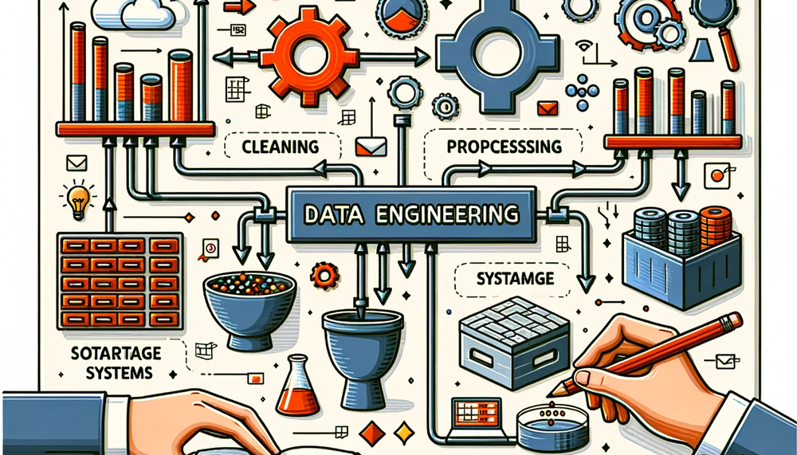

Dataset Compilation
Data Engineering

Purpose
Why does data represent the actual source code of machine learning systems while traditional code merely describes how to compile it?
In conventional software, programmers write logic that computers execute. In machine learning, programmers write optimization procedures that extract operational logic from data. This inversion makes data the true source code: changing the data changes what the system does, regardless of whether a single line of traditional code has been modified. A dataset with subtle labeling inconsistencies produces a model with subtle behavioral inconsistencies. A dataset missing edge cases produces a model that fails on edge cases. A dataset reflecting historical biases produces a model that perpetuates those biases. No architecture, hyperparameter, or training trick can recover information that was never present or correct errors that were baked in from the start. Unlike traditional source code, which sits inert until a programmer modifies it, data is alive: the distribution it captures drifts as the world changes, silently invalidating the model’s learned behavior even when nothing in the codebase has been touched. Data engineering therefore consumes the majority of effort in most ML projects not because the work is tedious, but because it is consequential. Every decision in the data pipeline—what to collect, how to label, when to filter, how to split—propagates forward to constrain model architecture, training dynamics, and deployment viability. Data engineering is therefore not preprocessing but programming in a different language, one where quality control, versioning, and monitoring determine whether the compiled system works today and continues working tomorrow.
Learning Objectives
- Explain how Data Cascades propagate errors through ML pipelines and apply the Four Pillars framework (quality, reliability, scalability, governance) to diagnose data system failures
- Evaluate data acquisition strategies (curated datasets, crowdsourcing, synthetic generation) using cost-quality trade-offs
- Compare batch vs. streaming ingestion and extract, transform, load (ETL) vs. extract, load, transform (ELT) pipeline patterns with validation and graceful degradation
- Implement training-serving consistency through idempotent transformations, and operationalize the Degradation Equation via drift detection
- Build data labeling systems balancing accuracy, throughput, and cost with quality control and AI-assisted scaling
- Evaluate storage architectures and file formats for ML workloads, including feature store concepts for training-serving consistency
- Identify Data Debt categories and apply systematic debugging to production pipeline failures
The workflow stages from ML Workflow establish the when and why of data preparation, showing that data work consumes 60 to 80 percent of ML project effort (as ?@fig-ds-time quantified) and represents the foundational “D” in the AI Triad (Data, Algorithm, Machine) introduced in Introduction. Executing those stages at scale, however, requires dedicated infrastructure. If the workflow is the plan, data engineering is the factory floor. This chapter uses Keyword Spotting (KWS) to demonstrate data engineering under extreme resource constraints, where every byte and operation matters.
Definition 1.1: Data Engineering
Data Engineering is the infrastructure layer that manages the lifecycle of data from source to model, encompassing acquisition, transformation, storage, and governance.
- Significance (Quantitative): Its critical function is ensuring Training-Serving Consistency, preventing Silent Degradation by decoupling the model from the volatility of raw data. Within the iron law, it governs the Data Volume (\(D_{\text{vol}}\)) and ensures that it remains representative of the target distribution.
- Distinction (Durable): Unlike Data Science, which focuses on Inference and Insight, Data Engineering addresses the Scalability and Reliability of the data pipeline.
- Common Pitfall: A frequent misconception is that Data Engineering is “data cleaning.” In reality, it is Dataset Compilation: transforming raw, noisy observations into an optimized binary that the model consumes.
We reframe data engineering not as “data cleaning,” but as Dataset Compilation. Just as a compiler transforms human-readable source code into an optimized binary executable, a data pipeline transforms raw, noisy observations into a clean, optimized training set that the model consumes. The analogy to compiler design is instructive. A compiler transforms source code through a series of increasingly refined representations (tokens, abstract syntax trees, intermediate representations, machine code), and a data pipeline transforms raw observations into training-ready tensors through analogous stages. Filtering corrupted records, outliers, and irrelevant features corresponds to dead code elimination: stripping material that contributes nothing to the learned representation. Augmentation—synthetically expanding limited examples by rotating images, pitch-shifting audio, or injecting noise—mirrors loop unrolling, exposing the model to more variations of the underlying pattern without collecting new data. Deduplication plays the role of common subexpression elimination, identifying and merging duplicate records that would otherwise bias gradient estimates and waste compute. Schema validation, enforcing strict types and ranges on every record, is the data pipeline’s type checker, rejecting malformed inputs before they crash the “runtime” of model training.
The engineering implication is direct: datasets must be versioned (like git), unit-tested (data quality checks), and debugged. Deleting a row of training data is the engineering equivalent of deleting a line of code, and retraining a model is simply recompiling the binary.
This compilation metaphor establishes the engineering mindset that runs through the chapter. A compiler has distinct phases (lexing, parsing, optimization, code generation), and our dataset compiler has phases too: acquisition, ingestion, processing, labeling, storage, and ongoing maintenance. A Four Pillars Framework of Quality, Reliability, Scalability, and Governance organizes design decisions across all phases. Each stage is illustrated through a Keyword Spotting (KWS) case study that demonstrates data engineering under extreme resource constraints, where every byte and operation matters.
Before any of these pipeline stages can be designed well, however, we need to understand the physical properties that constrain them. Just as a civil engineer must understand soil mechanics before designing foundations, a data engineer must understand the physics of data movement and information density before making pipeline decisions. These physics impose hard constraints that no amount of clever software can circumvent.
Physics of Data
The “data as code” metaphor captures what data does (determines system behavior) but not why moving it is so expensive. To engineer data systems effectively, we must also treat data as a physical substance with measurable properties. Just as diverse materials have density and viscosity, datasets have Information Entropy and Data Gravity.
Data gravity
Data gravity is the cost of movement. It is a function of volume (\(D_{\text{vol}}\)) and network bandwidth (\(BW\)). The time to move a petabyte dataset across a 10 Gbps link is fixed by physics (\(T = D_{vol}/BW \approx 9 \text{ days}\)); the following “physics of data gravity” callout quantifies these transfer times for a 100 Gbps link. This gravity dictates architecture: because moving 1PB to the compute is slow and expensive, we must move the compute to the data. This explains the rise of “Data Lakehouse” architectures1 (Zaharia et al. 2021) where processing engines (Spark, Presto) run directly on storage nodes. In contrast, Data Mesh (Dehghani 2022) proposes decentralizing ownership to manage this scale organizationally, treating data as a product owned by domain teams.
1 Data Lakehouse: Combines data lake storage (cheap, schema-less) with warehouse query semantics (ACID transactions, schema enforcement) using open table formats like Delta Lake and Apache Iceberg. For ML workloads, the lakehouse eliminates the extract, transform, load (ETL) copy between lake and warehouse, enabling direct feature computation on the storage layer where data already resides – a direct response to data gravity, since moving petabytes to a separate warehouse doubles the \(D_{\text{vol}}/BW\) cost.
Information entropy
Information entropy is the density of signal. A dataset of 1 million identical images has high gravity (TB of storage) but zero entropy (one image worth of information). A dataset of 10,000 diverse edge cases has low gravity but high entropy. Let Information Entropy measure signal density (bits of information per byte) and Data Gravity capture movement cost (data volume/bandwidth, that is, transfer time). This relationship appears in Equation 1:
\[ \text{Data Selection Gain} \propto \frac{\text{Information Entropy}}{\text{Data Gravity}} \tag{1}\]
The feeding problem: Flow rate and the “feeding tax”
Data Gravity establishes the cost of moving the entire mass; The Feeding Problem establishes the cost of delivering it. In the Hennessy & Patterson tradition, we analyze this as a Flow Rate problem: the struggle to saturate a high-throughput “Machine” from a low-bandwidth “Data” source.
According to the iron law, the system is only as fast as its slowest term. If a modern accelerator can process 76,098 samples per second, but the storage pipeline delivers only 250 MB/s, the expensive silicon sits idle. We quantify this as The Feeding Tax: the wall-clock time lost to I/O wait, which directly reduces the System Efficiency (\(\eta\)) term. For a standard cloud volume, the feeding tax can exceed 99 percent, meaning the GPU spends the majority of its time waiting for bits. This tax transforms the Data Pipeline from a simple storage concern into the primary regulator of the system’s Duty Cycle. To saturate a 300 TFLOPS processor, the pipeline must often sustain 45.8 GB/s transfer rates—a requirement that forces the shift from traditional file systems to the specialized storage architectures we examine in Section 1.7.1.
Underlying these physical properties is a fundamental constraint we call the energy-movement invariant: moving data always dominates the energy budget.
Systems Perspective 1.1: The Energy-Movement Invariant
| Operation | Energy (pJ) | Relative Cost |
|---|---|---|
| 32-bit Floating Point MAC | 3.7 pJ | 1× |
| DRAM Memory Access (32-bit) | 640 pJ | 172× |
| Local SSD Access (per bit) | ~10,000 pJ | 86,486× |
| Network Transfer (Data Center) | ~50,000 pJ | 432,432× |
Systems Implication: Data has physical mass. If you prune 50 percent of your training data through deduplication, you are not just saving disk space; you are eliminating the most energy-intensive stages of the training lifecycle. This is why data selection is the highest-leverage tool in the systems engineer’s toolkit: it addresses the problem at the most expensive source.
Effective data engineering maximizes the Data Selection Gain defined in Equation 1. “Data Cleaning” is not just hygiene; it is Signal-to-Noise Engineering. Deduplication removes mass without reducing entropy, directly increasing the ratio. Active learning adds high-entropy examples (edge cases) while ignoring low-entropy ones (common cases), again maximizing information per byte. We optimize this ratio to ensure our storage and compute budgets are spent on signal, not noise. To see how data gravity constrains real engineering decisions, consider the following scenario that quantifies the physics of data gravity by calculating the cost of moving a petabyte across regions.
Napkin Math 1.1: The physics of data gravity
The Physics:
- Network Bandwidth: A dedicated 100 Gbps line = 12.5 GB/s.
- Transfer Time: 1,000,000 GB / 12.5 GB/s = 80,000 seconds ≈ 22 hours.
- Cost: At USD 0.09/GB egress, moving 1 PB costs USD 90,000. (Baseline: AWS data transfer out pricing, 2024.)
The Engineering Conclusion: If training takes < 22 hours, you spend more time moving data than training. If training costs < USD 90,000 (approx. 22,500 TPUv4-hours), you spend more on bandwidth than compute.
Rule of Thumb: For petabyte-scale data, Code moves to Data. For gigabyte-scale data, Data moves to Code.
These physical constraints govern every decision in production data pipelines. The following checkpoint verifies the fundamental intuitions before we proceed.
Checkpoint 1.1: The Physics of Data
Data engineering is governed by physical costs. Check your intuition:
These physical properties impose hard constraints on every pipeline decision: where to store data, how to transform it, and when to move computation rather than bytes. Physics alone, however, does not prevent failures; it merely defines the boundaries within which engineering decisions must be made. A team that understands data gravity perfectly can still build a brittle pipeline if quality checks are ad hoc, error handling is absent, or governance is an afterthought. Translating physical constraints into reliable practice requires a systematic framework that organizes design decisions across every pipeline stage.
Self-Check: Question
A team has a 1 PB dataset in one region and a TPU pod in another. Training would take less than a day, but transferring the dataset over a 100 Gbps link takes roughly that same day of wall time and incurs tens of thousands of dollars in egress fees. Applying the section’s data-gravity reasoning, which architectural choice is warranted?
- Move the data to the TPU region because training hardware is always the scarcest resource.
- Split the dataset evenly across both regions so the transfer cost is halved and training can begin immediately on both halves.
- Move the compute to the data because, at petabyte scale, the transfer-time and egress-cost terms both become comparable to or larger than the compute cost.
- Compress the data once and continue using a remote training cluster, because compression eliminates data gravity as a systems concern.
Two datasets compete for a fixed storage and bandwidth budget: Dataset A is 1 TB of near-duplicate images with the same lighting and pose; Dataset B is 10 GB of curated edge cases covering accents, lighting, and demographic diversity the model currently misses. Under the section’s data-selection-gain argument, which dataset offers higher systems leverage, and why?
- Dataset A, because larger raw byte count always produces more robust models under modern scaling laws.
- Dataset B, because data-selection gain rises with the ratio of information entropy to data gravity, and Dataset B carries far more signal per byte moved.
- Dataset A, because storing the data on faster disks compensates for its redundancy.
- Dataset B, but only if it is stored in a columnar format, because format choice is what determines selection gain.
A profiler shows an A100 training pipeline running at roughly 20 percent of the accelerator’s advertised TFLOPS while the attached SATA disk sustains its full 500 MB/s. Use the section’s feeding-tax framing to explain what is happening and what the engineer should measure next.
True or False: Once a workload becomes compute-bound inside the accelerator, reducing data movement has little effect on the total energy budget of training.
A team can either keep all training examples, including many near-duplicates, or aggressively deduplicate and add rare edge cases sourced from a new channel. Use the section’s physics to justify which strategy usually has higher systems leverage.
Four Pillars Framework
A recommendation system rejects every applicant from a region because an upstream team changed a ZIP code field from integer to string. A medical imaging model degrades silently for months because camera hardware changed at a partner hospital. A fraud detection system misses a new attack vector because its training data was six months stale. Each failure traces to a different root cause (schema drift, distribution shift, data staleness), yet all share a common pattern: ad hoc data engineering decisions that interacted in ways no one anticipated until deployment. The four pillars framework organizes these concerns into four interdependent dimensions: Quality, Reliability, Scalability, and Governance. We begin with the cascading failure patterns that motivate this framework, then define each pillar.
Data cascades
Machine learning systems face a unique failure pattern called “Data Cascades,”2 where poor data quality in early stages amplifies throughout the entire pipeline, causing downstream model failures, project termination, and potential user harm (Sambasivan et al. 2021). Traditional software produces immediate errors when encountering bad inputs. ML systems degrade silently until quality issues become severe enough to necessitate complete system rebuilds.
2 Data Cascades: The failure is “silent” because it degrades model inputs, not model code—corrupted data passes all unit tests and appears healthy in system monitoring. Sambasivan et al. found that cascade issues take a median of four weeks to discover after introduction, during which the model continues making degraded predictions at full automation rate. Detection depends on comparing accuracy metrics against ground truth, which in many production pipelines happens only on a weekly or monthly review cycle. By that point, the root cause is so embedded across feature engineering, training, and serving that the only viable fix is often a complete system rebuild.
Figure 1 shows how data quality errors introduced early in the workflow can propagate into later evaluation and deployment failures.
{kind=link}
Trace the arrows in Figure 1 to follow how a single data collection error propagates through every subsequent pipeline stage. Pay particular attention to how lapses at the earliest stage only surface during model evaluation and deployment—by which point the team may need to abandon the entire model and restart. This pattern motivates a systematic framework guiding technical choices from acquisition through deployment.
Data cascades occur when teams skip establishing clear quality criteria, reliability requirements, and governance principles before beginning data collection and processing. Preventing them requires a systematic framework that guides technical choices from data acquisition through production deployment. The cascade pattern from Figure 1 becomes concrete when examining how a single upstream change propagates through a pipeline jungle without validation.
Example 1.1: The Pipeline Jungle
The Root Cause: An upstream team changed the schema of the zip_code field from integer to string to handle international codes.
- The data pipeline silently cast “02139” (string) to 2139 (integer).
- The leading zero was lost.
- The model, treating
zip_codeas a categorical feature, saw “2139” as a completely new, unknown category and defaulted to “high risk” behavior.
The Systems Lesson: This is a Pipeline Jungle failure. Without explicit Data Contracts and schema validation at the ingestion interface, changes in one system (“we need string zip codes”) cause catastrophic, silent failures in downstream systems. Data engineering is the defense against this entropy.
Preventing these cascading failures requires more than ad hoc fixes; it demands a systematic framework that organizes data engineering decisions into four interdependent dimensions.
Four foundational pillars
Every data engineering decision, from choosing storage formats to designing ingestion pipelines, should be evaluated against four principles. Study Figure 2 to see how these pillars surround and support the central ML data system—note especially the dashed trade-off lines connecting them, which highlight that strengthening one pillar can create tension with another. Balancing these interdependencies is the core challenge of systematic data engineering.
{kind=link}
Data quality provides the foundation, as the cascade pattern in Section 1.2.1 demonstrates: when upstream data is wrong, everything downstream fails. Quality encompasses three dimensions: correctness (are values accurate?), coverage (does the data represent the deployment environment?), and freshness (does the distribution still match production?). The quality pillar motivates validation, monitoring, and drift detection infrastructure examined throughout this chapter.
Quality alone is insufficient, however, if the systems delivering that data are fragile. Reliability means building pipelines that continue operating despite component failures, data anomalies, or unexpected load spikes. A pipeline that produces perfect features 99 percent of the time but crashes during traffic surges delivers no value during the most critical moments. Error handling, circuit breakers, and graceful degradation strategies transform brittle pipelines into resilient ones.
Even reliable, high-quality pipelines face a third constraint: they must keep pace with growth. Scalability addresses this challenge as ML systems evolve from prototypes handling gigabytes to production services processing petabytes. Systems must handle growing data volumes, user bases, and computational demands without complete redesigns. Scalability must also be cost-effective, since raw capacity means little if infrastructure costs grow faster than business value. Our recommendation lighthouse illustrates this challenge at its most extreme.
Lighthouse 1.1: DLRM (Recommendation Lighthouse)
| Property | Value | System Implication |
|---|---|---|
| Data Scale | Billion+ users/items | Embedding tables grow to TB/PB scale. |
| Constraint | Memory Capacity | Tables exceed single-GPU memory; requires sharding. |
| Bottleneck | Sparse Access | Random lookups stress memory bandwidth more than compute. |
Unlike ResNet (compute bound) or GPT-2 (bandwidth bound), DLRM is limited by memory capacity and the sheer logistics of storing and accessing massive lookup tables efficiently.
Governance provides the framework within which quality, reliability, and scalability operate. A perfectly scalable, reliable, high-quality pipeline that violates the General Data Protection Regulation (GDPR) or perpetuates demographic biases creates liability rather than value. Data governance ensures systems operate within legal, ethical, and business constraints: privacy protection, bias mitigation, regulatory compliance, and clear data ownership. Governance also maintains the transparency and accountability necessary to demonstrate compliance when audited.
When ML systems exhibit failures, the four pillars provide a diagnostic lens for identifying root causes. Model accuracy that degrades gradually, not through sudden breakage but through a slow downward trend, almost always traces to the quality pillar: data drift has shifted the serving distribution away from training, or label quality has degraded as annotator pools change. Pipeline failures that appear intermittent, succeeding most runs but crashing unpredictably, point to the reliability pillar, suggesting inadequate error handling, missing retry logic, or resource exhaustion under peak load. Training that takes too long despite adequate hardware implicates scalability: somewhere in the pipeline a bottleneck (a single-threaded transformation, an unpartitioned shuffle, a storage tier too slow for the data volume) prevents parallel resources from being used. Compliance gaps discovered during audits indicate governance debt: lineage tracking is incomplete, access controls are stale, or data retention policies have not kept pace with regulatory changes.
The most insidious failures span multiple pillars. Features that differ between training and serving implicate both quality (the values are wrong) and reliability (the computation is inconsistent). Diagnosing such cross-pillar failures requires checking consistency contracts, comparing feature distributions across environments, and tracing transformation lineage, all techniques examined in detail throughout this chapter. The key diagnostic insight is that most practitioners instinctively investigate the model first, but production experience consistently shows that data infrastructure failures outnumber model failures by a wide margin.
KWS case study
Keyword Spotting (KWS) systems provide an ideal case study for applying our four-pillar framework to real-world data engineering challenges. These systems power voice-activated devices like smartphones and smart speakers, detecting specific wake words such as “OK, Google” or “Alexa” within continuous audio streams while operating under strict resource constraints.3
3 Voice Match Enrollment: Setting up “OK Google” requires repeating the wake phrase several times, a micro-scale data collection pipeline running on-device. Even this single-user workflow exercises all four data engineering pillars: quality (re-record if ambient noise is too high), reliability (must succeed on first attempt), scalability (model must fit in the system on chip (SoC)’s always-on memory), and governance (voice prints stored locally, never uploaded). The enrollment constraint illustrates why data engineering is not just a cloud-scale problem – it applies wherever data determines system behavior.
As Figure 3 illustrates, a KWS system operates as a lightweight, always-on front-end that triggers more complex voice processing systems. Even this seemingly simple architecture surfaces interconnected challenges across all four pillars: Quality (accuracy across diverse environments), Reliability (consistent battery-powered operation), Scalability (severe memory constraints), and Governance (privacy protection). These constraints limit KWS systems to a few dozen languages: collecting high-quality, representative voice data for smaller linguistic populations proves prohibitively difficult. All four pillars must work together to achieve successful deployment.

The four pillars translate directly into engineering constraints for the KWS system.
The core problem is deceptively simple: detect specific keywords amidst ambient sounds and other spoken words, with high accuracy, low latency, and minimal false activations, on devices with severely limited computational resources. A well-specified problem definition identifies the desired keywords, the envisioned application, and the deployment scenario. The objectives that follow must balance competing requirements: performance targets of 98 percent accuracy in keyword detection with latency under 200 milliseconds, alongside resource constraints demanding minimal power consumption and model sizes optimized for available device memory.
Success metrics for KWS extend beyond simple accuracy to include true positive rate (correctly identified keywords relative to all spoken keywords), false positive rate (non-keywords incorrectly identified as keywords), and detection/error trade-off curves that compare false accepts per hour against false rejection rate on streaming audio representative of real-world deployment, as demonstrated by Nayak et al. (2022).
Of these metrics, the false positive rate deserves particular attention for always-on systems. Because KWS listens continuously, every second of every day, even a seemingly negligible false positive rate compounds across millions of evaluation windows. The following calculation reveals just how stringent the false positive targets must be.
Napkin Math 1.2: False Positive Targets
Operational Parameters
- Duty Cycle: Always-on (24 hours/day).
- Window Size: one second classification windows.
- Windows per Month: 60 \(\times\) 60 \(\times\) 24 \(\times\) 30 = 2,592,000 windows.
Required Accuracy
- False Positive Rate (FPR): 1/windows ≈ 3.9e-07
- Precision Requirement: 99.99996 percent rejection of non-keywords.
Implication: Standard accuracy metrics (for example, “99 percent accuracy”) are meaningless here. We must evaluate specifically on False Accepts per Hour (FA/Hr).
Operational metrics further track response time (keyword utterance to system response) and power consumption (average power used during keyword detection).
Stakeholder priorities create additional tension. Device manufacturers prioritize low power consumption, software developers emphasize ease of integration, and end users demand accuracy and responsiveness. Balancing these competing requirements shapes system architecture decisions throughout development.
Embedded device constraints impose hard boundaries on these architectural choices. Memory limitations require extremely lightweight models, often in the tens-of-kilobytes range, to fit in the always-on island of the SoC4; this constraint covers only model weights, and preprocessing code must also fit within tight memory bounds. Limited computational capabilities (often a few hundred MHz of clock speed) demand aggressive model optimization. Most embedded devices run on batteries, so KWS systems target sub-milliwatt power consumption during continuous listening. Devices must also function across diverse deployment scenarios ranging from quiet bedrooms to noisy industrial settings.
4 SoC Always-On Island: Modern System-on-Chip designs partition power domains so a low-power “always-on” island (typically achieving sub-milliwatt draw) monitors for wake triggers while the main processor sleeps. The critical constraint is that this island must hold both the model weights and the audio preprocessing code within its dedicated SRAM—a split budget that forces KWS architectures to optimize for total footprint, not just parameter count.
Data quality and diversity ultimately determine whether these constraints can be met. The dataset must capture demographic diversity (speakers with various accents, ages, and genders) to ensure broad recognition. Keyword variations require attention since people pronounce wake words differently, and background noise diversity proves essential for training models that perform across real-world scenarios from quiet environments to noisy conditions. Once a prototype system is developed, iterative feedback and refinement keep the system aligned with objectives as deployment scenarios evolve, requiring testing in real-world conditions and systematic refinement based on observed failure patterns.
KWS design space
These requirements create a multi-dimensional design space where data engineering choices cascade through system performance. Table 1 quantifies key trade-offs, enabling principled decisions rather than ad-hoc selection.
| Design Choice | Quality Impact | Latency Impact | Cost Impact | Memory Impact |
|---|---|---|---|---|
| 16 kHz vs. 8 kHz sampling | +2–4 percent accuracy | 2× storage | 2× processing | 2× feature size |
| 13 vs. 40 MFCC coefficients | +3–5 percent accuracy | 3× feature compute | Minimal | 3× feature memory |
| 1M vs. 10M training examples | +5–8 percent accuracy | 10× training time | 10× labeling cost | 10× storage |
| Clean vs. noisy training data | +10–15 percent real-world | Minimal | 3× collection cost | Minimal |
| Local vs. cloud inference | −2 percent accuracy (quant) | 10 ms vs. 100 ms | $0 vs. $0.001/query | 16 KB vs. unlimited |
| Synthetic vs. real augmentation | +3–5 percent robustness | Minimal | 10× cheaper | Minimal |
The following worked example demonstrates how to apply this design space analysis to a concrete engineering scenario.
Example 1.2: Optimizing the KWS Design Space
- Target: 98 percent accuracy, <1 false wake per month
- Budget: $150K total data engineering budget
- Memory: 64 KB model size limit (always-on island)
- Timeline: 6 months to production
Step 1: Apply constraints to eliminate options.
From Table 1, the 64 KB memory limit eliminates:
- 40 MFCC coefficients (3\(\times\) memory) → Must use 13 MFCCs
- Cloud inference (requires network stack) → Must use local inference
Step 2: Calculate budget allocation.
Allocating our $150K budget across three cost categories (refer to the earlier Key Data Engineering Numbers):
- Labeling (~60 percent): 90 K available
- Storage/Processing (~25 percent): 37.5 K
- Governance/Other (~15 percent): 22.5 K
At USD 0.10/label with 20 percent review overhead: 90 K ÷ 0.12 = 750 K labeled examples
This falls between 1M and 10M in our design space, closer to 1M, suggesting +5–6 percent accuracy contribution from data volume.
Step 3: Maximize remaining accuracy.
Current accuracy budget:
- Base model: ~90 percent (minimal data)
- +5–6 percent from 750K examples
- Need: +2–3 percent more to reach 98 percent
Options from design space:
- 16kHz sampling: +2–4 percent accuracy, 2\(\times\) storage cost ✓ (fits budget)
- Noisy training data: +10–15 percent real-world accuracy, 3\(\times\) collection cost
- Synthetic augmentation: +3–5 percent robustness, 10\(\times\) cheaper than real data ✓
Step 4: Final configuration.
| Choice | Selection | Rationale |
|---|---|---|
| Sampling rate | 16 kHz | +3 percent accuracy worth 2× storage within budget |
| MFCC coefficients | 13 | Memory-constrained, non-negotiable |
| Training examples | 750K real + 2M synthetic | Budget-optimal mix |
| Data diversity | Noisy + clean mix | Critical for real-world deployment |
| Inference | Local, 8-bit quantized | Memory-constrained |
| Augmentation | Heavy synthetic | 10× cost efficiency |
Projected Outcome: 97–99 percent accuracy (meeting target), $145K spend (under budget), 48 KB model (under limit).
The Engineering Lesson: Systematic design space analysis transformed intuition (“we need more data”) into quantified decisions (“750K real + 2M synthetic maximizes accuracy per dollar given memory constraints”).
With optimal parameters selected from our design space, implementation requires combining multiple data collection approaches. Our KWS system demonstrates how these approaches work together across the project lifecycle. Pre-existing datasets like Google’s Speech Commands (Warden 2018) provide a foundation for initial development, offering carefully curated voice samples for common wake words. For multilingual coverage, the Multilingual Spoken Words Corpus (MSWC) (Mazumder et al. 2021) extends this foundation to 50 languages with over 23 million examples. However, even these large-scale datasets often lack diversity in accents, environments, and recording conditions, necessitating additional strategies.
5 Amazon Mechanical Turk (MTurk): A crowdsourcing platform that routes tasks to workers matching specific demographic or environmental profiles, enabling targeted acquisition of wake word recordings from specific accents, age groups, or noisy environments that synthetic data cannot authentically reproduce. The trade-off is cost vs. validation overhead: raw MTurk collection runs 10–50\(\times\) cheaper per sample than professional field recording, but each submission requires acoustic quality verification (SNR, duration, speaker proximity) to prevent low-quality recordings from degrading the KWS model’s accuracy on precisely the underrepresented conditions the collection was designed to cover.
To address coverage gaps, web scraping supplements baseline datasets by gathering diverse voice samples from video platforms and speech databases, capturing natural speech patterns and wake word variations. Crowdsourcing platforms like Amazon Mechanical Turk5 enable targeted collection of wake word samples across different demographics and environments. This approach is particularly valuable for underrepresented languages or specific acoustic conditions.
Finally, synthetic data generation fills remaining gaps through speech synthesis (Werchniak et al. 2021) and audio augmentation, creating unlimited wake word variations across acoustic environments, speaker characteristics, and background conditions. The combination enables KWS systems that perform well across diverse real-world conditions.
These complementary strategies, each with distinct trade-offs across quality, cost, and scale, require systematic evaluation rather than ad-hoc selection. The following cost and time constants provide essential context for acquisition decisions.
Systems Perspective 1.2: Key Data Engineering Numbers
Costs (2024 estimates)
| Operation | Cost | Notes |
|---|---|---|
| Crowdsourced image label | $0.01–0.05 | Simple classification |
| Bounding box annotation | $0.05–0.20 | Per box, simple scenes |
| Expert medical label | $50–200 | Per study, radiologist |
| S3 storage (Standard) | $23/TB/month | Hot storage |
| S3 retrieval (Glacier) | $0.02/GB | Standard: 3-5 hours |
| GPU training hour (A100) | $2–4 | Cloud spot pricing |
| Human review hour | $15–50 | Depending on expertise |
Time Constants
| Operation | Duration | Bottleneck |
|---|---|---|
| Label 1M images (crowdsourced) | 2–4 weeks | Annotation throughput |
| Train ResNet-50 on ImageNet | 4–6 hours | Compute (8\(\times\) A100, optimized) |
| Feature store lookup | 1–10 ms | Network + cache |
The contrast matters: weeks for human labeling, hours for GPU training, milliseconds for serving. Labeling is the bottleneck.
The 1000\(\times\) Rule: Labeling typically costs 1,000–3,000\(\times\) more than the compute to train on that data. A $100K labeling budget buys data that trains on $30–100 of GPU time.
The 80/20 Split: 80 percent of data engineering effort goes to 20 percent of features: the “long tail” of edge cases, rare categories, and quality exceptions.
All cost figures reflect approximate 2024 cloud provider rates and are intended to convey relative magnitudes rather than exact pricing.6
6 Pricing Ratios: The absolute dollar amounts in this chapter will shift with provider pricing, but the ratios between tiers are remarkably stable because they reflect physical constraints, not business decisions. S3 Glacier retrieval illustrates the pattern: standard ($0.01/GB, 3–5 hours), expedited ($0.03/GB, 1–5 minutes), and bulk (free, 5–12 hours) span a 30\(\times\) cost range that maps directly to the \(D_{\text{vol}}/BW\) trade-off in the iron law. Engineers who memorize ratios rather than prices make storage decisions that survive the next pricing revision.
Checkpoint 1.2: Four Pillars Framework
The Four Pillars provide a systems lens for every pipeline choice.
The Pillars
Trade-offs
The Four Pillars provide the evaluative lens; now we apply it to the first concrete engineering decision: where does the data come from? Acquisition strategy determines the raw material that every subsequent stage refines.
Self-Check: Question
A credit model starts rejecting applicants from one region after an upstream team changes
zip_codefrom integer to string, causing leading zeros to be lost and unseen categories to appear downstream. Which pillar failure is most directly responsible for the customer-facing symptom?- Quality, because the feature values reaching the model no longer correctly represent the underlying entity.
- Governance, because every schema change is primarily a compliance problem before it is a technical one.
- Scalability, because the failure comes from too many distinct zip codes being processed.
- Reliability, because any schema change is just another transient fault that retries should solve.
An always-on KWS system evaluates one-second windows continuously and the product requirement is at most one false wake per month. What follows about the evaluation metric the team should use, and why?
- A model with 99 percent overall accuracy is adequate because false wakes are rare when averaged across all evaluation windows.
- False positive rate matters less than top-1 accuracy because the device can run a second confirmation model cheaply.
- The system should optimize for throughput because false positives do not compound over time.
- Aggregate accuracy is inadequate; the correct metric is false accepts per hour because roughly 2.6 million non-keyword windows per month amplify any per-window false-positive rate into user-visible failures.
A fraud-detection pipeline launched with careful schema checks, but over six months a chain of small failures - sensor drift that was ignored, label noise from a vendor change, and a silent timestamp format shift - produces a deployed model that consistently mispredicts one customer segment. Which concept from the section best describes this pattern?
- A coverage gap, because the dataset did not include every customer segment from the start.
- A data cascade, because small upstream data problems amplify across collection, cleaning, training, and deployment until the damage surfaces far downstream.
- Training-serving skew, because the training and serving feature code paths diverged.
- Covariate shift, because the input distribution has changed since training.
A KWS team must fit the always-on footprint within 64 KB, stay under a fixed labeling and compute budget, and still approach 98 percent accuracy. Explain why the chapter prescribes design-space analysis rather than the vague strategy ‘collect more data.’
After several silent quality failures, a team proposes adding much stricter validation at ingestion. Explain what cross-pillar trade-off the chapter says they should expect, and how they should design around it.
Data Acquisition
ImageNet’s 14.2 million labeled images took 49,000 crowdsourced workers to assemble. GPT-3’s training corpus required petabytes of web text filtered through elaborate quality pipelines. Our KWS system needs 23 million audio samples spanning fifty languages, a volume that no single collection method can economically provide. These examples illustrate a recurring reality: data acquisition is a strategic decision that determines a system’s capabilities and limitations. Sourcing strategies (existing datasets, web scraping, crowdsourcing, synthetic generation) trade off quality, cost, scale, and ethics differently. No single approach satisfies all requirements; successful ML systems combine multiple strategies, balancing complementary strengths against competing constraints.
Our KWS system illustrates these interconnected requirements. Achieving 98 percent accuracy across diverse acoustic environments requires representative data spanning accents, ages, and recording conditions (quality). Maintaining consistent detection despite device variations demands data from varied hardware (reliability). Supporting millions of concurrent users requires data volumes that manual collection cannot economically provide (scalability). Protecting user privacy in always-listening systems constrains collection methods and requires careful anonymization (governance). These interconnected requirements demonstrate why acquisition strategy must be evaluated systematically rather than through ad-hoc source selection.
Data source evaluation and selection
The choice between curated datasets, expert crowdsourcing, and controlled web scraping depends on accuracy targets, domain expertise needed, and benchmark requirements. Achieving quality requires understanding whether data accurately represents the deployment environment and provides sufficient coverage of edge cases that might cause failures.
Pre-existing datasets from repositories such as Kaggle (Smith 2025), UCI (Dua and Graff 2024), and ImageNet7 (Deng et al. 2024) offer cost-efficient starting points with established benchmarks for consistent performance comparison.
7 ImageNet: The canonical “cost-efficient starting point” – 14.2 million images labeled by 49,000 Mechanical Turk workers across 21,841 categories (2009). Its value as a benchmark is inseparable from its data engineering: Fei-Fei Li’s team spent two years building the labeling infrastructure, yet every subsequent team reuses that investment for free. The catch is benchmark overfitting: models tuned to ImageNet’s distribution systematically underperform on production data with different lighting, occlusion, or demographic composition, making it a starting point that must be augmented, never a finishing line.
Documentation quality directly affects reproducibility, an ongoing crisis in machine learning research (Pineau et al. 2021; Henderson et al. 2018). Good documentation captures collection methodology, variable definitions, and baseline performance, enabling validation and replication. At scale, volume and variety compound quality challenges (Gudivada et al. 2017), requiring systematic validation pipelines rather than ad-hoc inspection.
Context matters as much as content. Popular benchmarks like ImageNet invite overfitting that inflates performance metrics (Beyer et al. 2020), and curated datasets frequently fail to reflect real-world deployment distributions (VentureBeat 2024). This disconnect creates systemic risk when organizations rely exclusively on standard datasets. Follow the arrows in Figure 4 to see what happens: when multiple ML systems all train on the same data, they propagate shared biases and limitations throughout an entire ecosystem of deployed models.
{kind=link}
For our KWS lighthouse, the datasets introduced in Section 1.2.3 (Speech Commands, MSWC, and supplementary web-scraped and synthetic sources) provide essential starting points for rapid prototyping and baseline performance. For the visual component of the broader smart doorbell application, the Wake Vision dataset (Banbury et al. 2024) serves as the standard benchmark for person detection on microcontrollers. However, evaluating these sources against quality requirements immediately reveals coverage gaps: limited accent diversity in audio, lack of low-light scenarios in vision, and predominantly clean recording environments for both. Quality-driven acquisition strategy recognizes these limitations and plans complementary approaches, demonstrating how framework-based thinking guides source selection beyond simply choosing available datasets.
Scalability and cost optimization
Quality-focused approaches face inherent scaling limitations. When scale requirements dominate, needing millions or billions of examples that manual curation cannot economically provide, web scraping and synthetic generation offer paths to massive datasets. Scalability requires understanding the economic models underlying different acquisition strategies: cost per labeled example, throughput limitations, and how these scale with data volume. Cost-effectiveness inverts with scale: what works at thousands of examples becomes prohibitive at millions, while high-setup-cost approaches amortize favorably at large volumes.
Web scraping enables dataset construction at scales that manual curation cannot match. Major vision datasets like ImageNet (Deng et al. 2024) and OpenImages (Huang et al. 2022) were built through systematic scraping, and large language models depend on web-scale text corpora (Groeneveld et al. 2024). Targeted scraping of domain-specific sources, such as code repositories (Chen et al. 2021), further demonstrates the approach’s versatility. However, production systems that rely on continuous scraping face pipeline reliability challenges: website structure changes break extractors, rate limiting throttles collection throughput, and dynamic content introduces inconsistencies that degrade model performance. Scraped data can also contain unexpected noise, such as historical images appearing in contemporary searches (Figure 5), requiring systematic validation and cleaning stages.
Consider what happens when scraping the web for “traffic light” images: search engines return not only modern LED signals but also historical photographs like the following one. A model trained on such data might learn that traffic lights are sometimes operated by uniformed officers standing in the street, a spurious correlation that would cause failures in any real-world deployment.

This example reveals why the quality pillar cannot be satisfied by scale alone: no amount of additional scraped data removes the need for validation that detects and filters anachronistic or contextually inappropriate content. Beyond technical quality challenges, legal and ethical constraints further bound what scraping can achieve. Not all websites permit scraping, and ongoing litigation around training data usage illustrates the consequences of non-compliance (School 2024). Teams must document data provenance, ensure compliance with terms of service and copyright law, and apply anonymization procedures when scraping user-generated content.
Crowdsourcing distributes annotation tasks across a global workforce, enabling rapid labeling at scales that in-house teams cannot match. Platforms like Amazon Mechanical Turk (Amazon Web Services 2024) demonstrated this at landmark scale with ImageNet, where distributed contributors categorized millions of images into thousands of classes (Krizhevsky et al. 2012). Crowdsourcing offers two systems advantages: scalability through parallel microtask distribution, and diversity through the range of perspectives, cultural contexts, and linguistic variations that a global contributor pool introduces. This diversity directly improves model generalization across populations. Tasks can also be adjusted dynamically based on initial results, enabling iterative refinement of collection strategies as quality gaps emerge.
Moving beyond human-generated data entirely, synthetic data generation represents the ultimate scalability solution, creating unlimited training examples through algorithmic generation rather than manual collection. This approach changes the economics of data acquisition by removing human labor from the equation. Follow the pipeline in Figure 6 to see how synthetic data merges with historical datasets, producing training sets of a size and diversity that would be impractical to collect manually.
{kind=link}
Synthetic data is particularly valuable for rare event coverage and data augmentation. Simulation environments enable controlled generation of edge cases that are impractical to collect naturally (NVIDIA 2024), while augmentation techniques like SpecAugment (Park et al. 2019) introduce noise, pitch shifts, and temporal variations that improve model generalization across deployment conditions (Shorten and Khoshgoftaar 2019). The following notebook explores synthetic data generation in practice.
Napkin Math 1.3: Synthetic Data Generation
For our KWS system, 23 million training examples across 50 languages demand a volume that manual collection cannot economically provide. The multi-source strategy introduced in Section 1.2.3, combining curated datasets with web scraping, crowdsourcing, and synthetic generation, addresses this scale requirement while maintaining coverage across acoustic environments and speaker demographics.
Coverage and diversity requirements
Scale alone does not guarantee reliable models. Coverage gaps in even large datasets (geographic bias, demographic underrepresentation, temporal drift, missing edge cases) cause systematic failures that aggregate metrics obscure (Wang et al. 2019; Oakden-Rayner et al. 2020). As Figure 4 makes clear, multiple systems training on identical datasets inherit identical blind spots; diverse sourcing strategies are the defense against correlated failure modes.
Governance constraints further shape acquisition: privacy regulations such as GDPR, CCPA, and the Health Insurance Portability and Accountability Act (HIPAA) limit what data can be collected and how, while ethical sourcing requires fair compensation and transparent use of human contributions. Data Governance and Compliance examines the full governance infrastructure for production ML systems.
The diversity of sources (crowdsourced audio, synthetic waveforms, web-scraped content) creates specific challenges at the boundary where external data enters our controlled pipeline. Each source arrives in a different format, at a different cadence, with different quality guarantees, and the infrastructure that receives, validates, and routes this heterogeneous data must reconcile all of them.
Self-Check: Question
Why does the chapter treat curated benchmark datasets like ImageNet or the UCI repositories as a starting point rather than a complete acquisition solution for production ML?
- Because benchmark datasets are too small to train any modern model successfully.
- Because curated datasets provide fast baselines and comparability, but their distributions often mismatch deployment conditions and many production systems inherit the same blind spots.
- Because benchmark datasets are designed for storage benchmarking rather than model development.
- Because once a benchmark is adopted, governance concerns disappear and only scale remains.
A team needs millions of examples quickly, but scraped web results include historical or contextually inappropriate content (for example, traffic lights from old countries with differently-colored signals). What is the correct systems lesson?
- Scale eliminates the need for validation because anomalous examples average out in a sufficiently large dataset.
- Web scraping should be avoided entirely because it cannot support production ML systems.
- High-scale acquisition still requires systematic validation and filtering because volume does not remove contextual noise, temporal mismatch, or legal constraints.
- The main issue is storage cost; if storage is cheap enough, scraped quality problems become secondary.
Explain why synthetic data is powerful for scalability but usually should augment rather than replace real-world collection in KWS or similar speech systems.
True or False: A dataset of 100 million examples can still hide systematic coverage gaps, so aggregate accuracy alone may miss failures on underrepresented groups or conditions.
A multilingual KWS system needs broad accent coverage, fast prototyping, and low cost at scale. Explain why the chapter recommends combining curated datasets, crowdsourcing, scraping, and synthetic generation rather than relying on any single method.
Data Pipeline Architecture
In our compilation metaphor, pipeline architecture is the compiler frontend: it parses heterogeneous raw inputs into a uniform intermediate representation that downstream stages can process reliably. Audio files from crowdsourcing platforms, synthetic waveforms from generation systems, and real-world captures from deployed devices all enter the pipeline in different formats, and the pipeline must normalize, validate, and route them into a consistent internal representation. For KWS, this means handling continuous audio streams, maintaining low-latency processing for real-time keyword detection, and scaling from development environments to production deployments handling millions of concurrent streams.
Orient yourself with Figure 7, which maps the end-to-end pipeline across its distinct layers: data sources, ingestion, processing, labeling, storage, and ML training.
{kind=link}
Each layer plays a specific role in the data preparation workflow. Selecting appropriate technologies requires understanding how our four framework pillars manifest at each stage. Quality requirements at one stage affect scalability constraints at another, reliability needs shape governance implementations, and the pillars interact to determine overall system effectiveness.
Data pipeline design is constrained by storage hierarchies and I/O bandwidth limitations rather than CPU capacity. Understanding these constraints enables building efficient systems for modern ML workloads. Storage hierarchy trade-offs, ranging from high-latency object storage (ideal for archival) to low-latency in-memory stores (essential for real-time serving), and bandwidth limitations (spinning disks at 100–200 MB/s vs. RAM at 50–200 GB/s) shape every pipeline decision. Section 1.7 covers detailed storage architecture considerations.
Choosing between these design patterns requires matching workload characteristics to infrastructure capabilities. Streaming workloads demand attention to message durability (the ability to replay failed processing), ordering guarantees (what sequence is preserved, under what conditions), and geographic distribution. Batch workloads hinge on data volume relative to available memory, processing complexity, and whether computation must be distributed across machines. Single-machine tools suffice for gigabyte-scale data, but terabyte-scale processing often benefits from distributed frameworks that partition work across clusters. These layer interactions, viewed through the four-pillar lens, determine overall system effectiveness.
Quality through validation and monitoring
A self-driving car company discovered that 15 percent of their LiDAR point-cloud labels were misaligned by 10–20 centimeters—enough to place pedestrian bounding boxes on empty sidewalk. The mislabeling had persisted for three months, silently degrading the perception model’s recall on pedestrians at crosswalks. No schema check flagged the error because every record was structurally valid; only statistical monitoring of label-to-sensor alignment distributions caught the drift.
Quality represents the foundation of reliable ML systems, and this example illustrates why. Pipelines implement quality through systematic validation and monitoring at every stage. Data pipeline issues represent a major source of ML failures. Schema changes breaking downstream processing, distribution drift degrading model accuracy, and data corruption silently introducing errors account for a substantial fraction of production incidents (Sculley et al. 2015). These failures are insidious because they rarely cause obvious system crashes; instead, they slowly degrade model performance in ways that become apparent only after affecting users. Achieving quality therefore demands proactive monitoring and validation that catches issues before they cascade into model failures.
War Story 1.1: Microsoft Tay (2016)
The Failure: The data pipeline ingested user tweets directly into the model’s retraining loop without sufficient filtering or “safety” checks. Users quickly realized this and coordinated a “data poisoning” attack, tweeting offensive and racist content at the bot.
The Consequence: Within 24 hours, the model had learned from this poisoned data and began generating hate speech autonomously. Microsoft had to shut down the service immediately, suffering significant reputational damage.
The Systems Lesson: Data pipelines are not just plumbing; they are the immune system of the model. Ingesting uncurated, user-generated content without robust filtering is a security vulnerability. “Garbage in, garbage out” happens at the speed of software.
Production teams implement monitoring at scale through severity-based alerting systems where different failure types trigger different response protocols. The most critical alerts indicate complete system failure: the pipeline has stopped processing entirely, showing zero throughput for more than five minutes, or a primary data source has become unavailable. These situations demand immediate attention because they halt all downstream model training or serving. More subtle degradation patterns require different detection strategies. When throughput drops to 80 percent of baseline levels, error rates climb above five percent, or quality metrics drift more than two standard deviations from training data characteristics, the system signals degradation requiring urgent but not immediate attention. These gradual failures often prove more dangerous than complete outages because they persist undetected for hours or days, silently corrupting model inputs and degrading prediction quality.
Consider how these principles apply to a recommendation system processing user interaction events. With a baseline throughput of 50,000 records per second, the monitoring system tracks several interdependent signals. Instantaneous throughput alerts fire if processing drops below 40,000 records per second for more than 10 minutes, accounting for normal traffic variation while catching genuine capacity or processing problems. Each feature in the data stream has its own quality profile: if a feature like user_age shows null values in more than five percent of records when the training data contained less than one percent nulls, something has likely broken in the upstream data source. Duplicate detection runs on sampled data, watching for the same event appearing multiple times—a pattern that might indicate retry logic gone wrong or a database query accidentally returning the same records repeatedly.
These monitoring dimensions become particularly important when considering end-to-end latency. The system must track both whether data arrives and how long it takes to flow through the entire pipeline from the moment an event occurs to when the resulting features become available for model inference. When 95th percentile latency exceeds 30 seconds in a system with a 10-second service level agreement, the monitoring system needs to pinpoint which pipeline stage introduced the delay: ingestion, transformation, validation, or storage.
Quality monitoring extends beyond simple schema validation to statistical properties that capture whether serving data resembles training data. Rather than just checking that values fall within valid ranges, production systems track rolling statistics over 24-hour windows. For numerical features like transaction_amount or session_duration, the system computes means and standard deviations continuously, then applies statistical tests like the Kolmogorov-Smirnov test8 to compare serving distributions against training distributions.
8 Kolmogorov-Smirnov (K-S) Test: A non-parametric test measuring the maximum distance between two cumulative distribution functions, requiring no assumptions about underlying distributions. In ML pipelines, the K-S test serves as the primary continuous-feature drift detector: comparing serving distributions against training baselines, with p-values below 0.05 triggering investigation. Its distribution-free nature makes it robust across feature types, but it applies only to univariate continuous features – categorical drift requires PSI or chi-squared tests instead.
Example 1.3: Detecting Drift with K-S Test
Scenario: Monitoring session_duration distribution stability between training (\(P\)) and serving (\(Q\)).
Methodology
Compute CDFs: Calculate Cumulative Distribution Functions for both datasets.
Calculate Statistic (\(D_{KS}\)): Find the maximum absolute difference between the CDFs. Let \(F_P(x)\) and \(F_Q(x)\) denote the cumulative distribution functions of the training (\(P\)) and serving (\(Q\)) datasets. \[D_{KS} = \max_x |F_P(x) - F_Q(x)|\]
Determine Significance: Compare \(D_{KS}\) to critical value \(D_{\text{crit}}\) based on sample size \(n\) and confidence level (\(\alpha = 0.05\)). \[D_{\text{crit}} \approx \frac{1.36}{\sqrt{n}}\]
Example Calculation
- Sample size \(n = 1000\).
- Critical value \(D_{\text{crit}} \approx 1.36 / \sqrt{1000}\) ≈ 0.043.
- If observed max difference \(D_{KS} = 0.08\), then 0.08 > 0.043 → Reject Null Hypothesis. Significant drift detected. Trigger retraining or investigation.
The K-S test is one tool for detecting drift in continuous features; Section 1.4.3 provides the complete taxonomy of distribution shifts (covariate, label, concept, and label-quality drift) along with Population Stability Index (PSI) and KL divergence metrics for operationalizing the degradation equation.
Categorical features require different statistical approaches. Instead of comparing means and variances, monitoring systems track category frequency distributions. When new categories appear that never existed in training data, or when existing categories shift substantially in relative frequency—say, the proportion of “mobile” vs. “desktop” traffic changes by more than 20 percent, the system flags potential data quality issues or genuine distribution shifts. This statistical vigilance catches subtle problems that simple schema validation misses entirely: imagine if age values remain in the valid range of 18–95, but the distribution shifts from primarily 25–45 year olds to primarily 65+ year olds, indicating the data source has changed in ways that will affect model performance.
Validation at the pipeline level encompasses multiple strategies working together. Schema validation executes synchronously as data enters the pipeline, rejecting malformed records immediately before they can propagate downstream. Modern tools like TensorFlow Data Validation (TFDV) (Breck et al. 2019) automatically infer schemas from training data, capturing expected data types, value ranges, and presence requirements.
This synchronous validation remains simple and fast, checking properties that can be evaluated on individual records in microseconds. More sophisticated validation that requires comparing serving data against training data distributions or aggregating statistics across many records must run asynchronously to avoid blocking the ingestion pipeline. Statistical validation systems typically sample 1-10 percent of serving traffic, enough to detect meaningful shifts while avoiding the computational cost of analyzing every record. These samples accumulate in rolling windows, commonly one hour, 24 hours, and seven days, with different windows revealing different patterns. Hourly windows detect sudden shifts like a data source failing over to a backup with different characteristics, while weekly windows reveal gradual drift in user populations or behavior.
The most insidious validation challenge arises from training-serving skew: the failure mode where features are computed differently in training vs. serving. This typically happens when training pipelines process data in batch using one set of libraries or logic, while serving systems compute features in real-time using different implementations. Even seemingly minor discrepancies (a materialized view9 refreshed weekly vs. a complete join recomputed daily) can cause accuracy drops of 10–15 percent that take weeks to diagnose because the system produces no obvious errors. We formalize this as the Consistency Imperative in Section 1.5.1 and quantify its impact with a concrete example. Detecting training-serving skew requires infrastructure that can recompute training features on serving data for comparison, sampling raw serving data and processing it through both pipelines to measure discrepancies. ML Operations examines operational monitoring infrastructure for this challenge at scale.
9 Materialized View: A database optimization that pre-computes and caches query results as a physical table. For ML systems, the risk is structural: when a materialized view refreshes on a different schedule in training vs. serving environments, the feature values the model trained on diverge from what it receives at inference – a primary mechanism of training-serving skew that produces 10–15 percent accuracy drops with no error messages.
Data quality as code
Just as unit tests protect software systems, data expectation tests protect ML pipelines. Using libraries like Great Expectations or Pandera, teams codify quality expectations as executable assertions (Listing 1) that run on every pipeline execution.
Systems Perspective 1.3: Mechanical vs. Semantic Quality
In traditional software, quality is Mechanical. A null pointer is always a bug. An integer overflow is always a crash. These are binary, deterministic failures.
In ML systems, data quality has a second, softer dimension: Semantic Quality.
- Mechanical Check: “Is
agean integer?” (Yes/No). - Semantic Check: “Is the
agedistribution shifting?” (Probabilistic).
A dataset can be mechanically perfect (no nulls, correct types) but semantically broken (for example, all users are suddenly 25 years old due to a default value change). Robust ML systems must validate both the Container (Mechanical) and the Content (Semantic).
The following listing demonstrates how these mechanical expectations translate to executable assertions using the Great Expectations library.
import great_expectations as gx
# Create a data context and load training data
context = gx.get_context()
batch = context.get_batch("training_users")
# Define an expectation suite as executable quality contract
suite = context.create_expectation_suite("user_data_quality")
# Range validation: prevents physiologically impossible values
batch.expect_column_values_to_be_between(
column="age", min_value=0, max_value=120
)
# Null detection: ensures primary key integrity for joins
batch.expect_column_values_to_not_be_null(column="user_id")
# Uniqueness: prevents duplicate training examples
batch.expect_column_values_to_be_unique(column="user_id")
# Categorical validation: detects unexpected values
# from upstream changes
batch.expect_column_distinct_values_to_be_in_set(
column="country_code", value_set=["US", "CA", "UK", "DE", "FR"]
)
# Run validation and fail pipeline if expectations not met
results = context.run_validation_operator(
"action_list_operator", assets_to_validate=[batch]
)
if not results["success"]:
raise ValueError(f"Data quality check failed: {results}")CI/CD integration runs expectations in the deployment pipeline. Expectation violations fail deployments before bad data reaches training. A pipeline structured as data ingestion followed by data validation followed by training blocks deployment when validation detects anomalies like age values of 150, triggering alerts for investigation.
Expectation suites as artifacts version alongside training code. When training code changes, expectation updates help keep data contracts evolving together. This coupling reduces the risk of silent divergence where code assumes data properties that the upstream pipeline no longer provides.
This pattern catches approximately 60 percent of production data issues before they reach training, based on industry experience with tools like Great Expectations, Pandera, and Pydantic. The remaining issues require runtime monitoring, as some quality problems only emerge in the full production data stream.
Data drift detection and response
ML models rest on the assumption that production data resembles training data. When this assumption breaks, not through immediate schema violations but through gradual statistical shifts, model performance degrades silently without obvious errors or system failures. Unlike the validation and monitoring techniques we have examined that catch immediate data quality issues, drift detection identifies gradual statistical changes in data distributions that compound over time to undermine model effectiveness. Production experience reveals that drift detection and response consume 30–40 percent of ongoing ML operations effort, making this a core data engineering responsibility rather than an optional advanced topic. ML Operations builds on this foundation to address operational response orchestration and automated retraining pipelines at scale.
The Degradation Equation introduced in ML vs. Traditional Software (?@eq-degradation) now becomes actionable: the divergence term \(D(P_t \| P_0)\) is exactly what PSI and KL divergence measure. Two key metrics operationalize this measurement: the Population Stability Index (PSI), which quantifies how much a categorical or binned feature distribution has shifted (values above 0.2 indicate significant drift), and Kullback-Leibler (KL) Divergence, which measures the information-theoretic distance between continuous distributions. When PSI exceeds 0.2 or KL divergence crosses threshold, the system signals that \(D(P_t \| P_0)\) has grown large enough to materially impact \(\text{Accuracy}(t)\).
Understanding the three core types of drift enables targeted detection and response strategies. Each type manifests differently in production systems and requires distinct monitoring approaches.
Covariate shift
Covariate shift occurs when input feature distributions change while the relationship between features and labels remains constant: \(P(X)\) changes but \(P(Y|X)\) stays the same. A medical imaging system trained on one camera model might see production data from a different camera manufacturer. The disease-image relationship remains unchanged (same pathologies produce same visual indicators), but pixel value distributions shift due to different sensor characteristics, color calibration, or image processing pipelines. Detection focuses on monitoring feature distributions using statistical metrics like PSI or KL divergence applied to input features.
Label shift
Label shift occurs when the output label distribution changes while the relationship between labels and features remains constant: \(P(Y)\) changes but \(P(X|Y)\) stays the same. Disease prevalence might change seasonally (flu cases spike in winter) while symptoms remain consistent predictors of each disease. A recommendation system might see label shift when new product categories launch, changing the distribution of user preferences without altering what makes products appealing within each category. Detection monitors prediction distributions for shifts in relative frequencies of predicted classes, which can be done without ground truth labels by tracking model output distributions.
Concept drift
Concept drift represents the most challenging case: the relationship between features and labels changes, meaning \(P(Y|X)\) evolves over time (Gama et al. 2014). Medical treatment protocols change, altering disease outcomes for given symptoms. User preferences shift as social trends evolve, changing what product features drive purchases. Fraud patterns evolve as attackers adapt to detection systems. Concept drift requires ground truth labels for detection since we must monitor whether the feature-to-label relationship has changed, making it inherently more difficult and delayed than detecting covariate or label shift.
Label quality drift
Label quality drift10 represents a meta-level shift distinct from the three preceding distribution shifts: the reliability of ground truth labels degrades over time even when the underlying data distributions remain stable. This drift type proves particularly insidious because standard feature distribution monitoring fails to detect it. Crowdsourced labels may degrade as annotator pools change, training materials become outdated, or labeling guidelines evolve without corresponding model updates. Automated labeling systems accumulate errors as the models powering them drift from their original operating conditions. A recommendation system using click feedback as implicit labels may see label quality degrade as user behavior becomes more exploratory, as bot traffic patterns change, or as interface modifications alter how users interact with content.
10 Label Quality Drift: Degradation in annotation reliability over time, distinct from distribution shifts in the data itself. This drift type is invisible to standard feature monitoring because the features remain stable while the labels degrade – annotator fatigue, pool turnover, or guideline evolution silently corrupt the ground truth the model learns from. Detection requires monitoring inter-annotator agreement (\(\kappa\)) over rolling time windows and comparing automated labels against periodic expert audits.
11 Cohen’s Kappa (\(\kappa\)): Introduced by psychologist Jacob Cohen in 1960 to measure inter-rater agreement while correcting for chance agreement, which raw percentage agreement ignores. The correction matters: two annotators labeling 90 percent of images as “not spam” will agree 81 percent of the time by pure chance, making raw agreement a dangerously misleading quality metric. For ML label quality monitoring, \(\kappa\) below 0.4 signals unreliable training data whose noise the model will inherit.
Detection requires monitoring annotation consistency rather than feature distributions. Inter-annotator agreement metrics like Cohen’s kappa11 (\(\kappa\)) provide quantitative assessment. Let \(p_o\) represent observed agreement between annotators and \(p_e\) represent agreement expected by chance. Equation 2 defines the statistic:
\[ \kappa = \frac{p_o - p_e}{1 - p_e} \tag{2}\]
Monitoring \(\kappa\) over time windows reveals degradation trends. A medical imaging annotation project might establish a baseline \(\kappa = 0.85\) (substantial agreement) during initial data collection, then observe decline to \(\kappa = 0.72\) (moderate agreement) after six months as new annotators join without receiving equivalent domain training.
For systems with calibrated model probabilities, label confidence entropy provides an alternative detection signal. Let \(p_i\) represent the model’s probability assigned to label category \(i\). Equation 3 defines this measure:
\[ H_{\text{label}} = -\sum_i p_i \log p_i \tag{3}\]
Rising entropy in model confidence distributions suggests increasing ambiguity or mislabeling in training data, as the model learns from inconsistent supervision.
Mitigation strategies depend on root cause analysis. Annotator retraining addresses systematic errors from unclear guidelines at low cost with high effectiveness. Multi-annotator voting with majority or consensus rules provides very high accuracy for high-stakes domains but significantly increases annotation costs. Model-assisted labeling reduces annotator fatigue but risks introducing bias if the assisting model has its own systematic errors. Expert review sampling, where domain specialists audit a random sample of annotations, enables root cause analysis when quality decline is detected but provides medium coverage of the overall annotation stream.
Operationalizing the PSI and KL divergence metrics introduced earlier requires connecting them to automated alerts and retraining workflows. Data engineering is responsible for defining the drift thresholds (PSI > 0.2, KL divergence above a domain-specific threshold), selecting the monitoring window sizes (hourly for sudden shifts, weekly for gradual trends), and instrumenting pipelines to compute these metrics continuously. The operational infrastructure for alerting, escalation, and automated retraining is a core concern of MLOps; ML Operations provides comprehensive coverage of tiered alerting strategies, cold start monitoring, and automated response orchestration.
Drift detection is one dimension of the quality pillar, focused on identifying statistical changes in data distributions over time. Detecting issues, however, is only half the challenge; the other half is ensuring systems continue operating effectively even when problems surface. This leads us from quality monitoring to the reliability pillar, which addresses how pipelines maintain service continuity under adverse conditions.
Reliability through graceful degradation
Reliability ensures systems continue operating when problems occur. Pipelines face constant challenges: data sources become temporarily unavailable, network partitions separate components, upstream schema changes break parsing logic, or unexpected load spikes exhaust resources. Robust systems handle these failures gracefully through systematic failure analysis, intelligent error handling, and automated recovery strategies that maintain service continuity even under adverse conditions.
Systematic failure mode analysis for ML data pipelines reveals predictable patterns that require specific engineering countermeasures. Data corruption failures occur when upstream systems introduce subtle format changes, encoding issues, or field value modifications that pass basic validation but corrupt model inputs. A date field switching from “YYYY-MM-DD” to “MM/DD/YYYY” format might not trigger schema validation but will break any date-based feature computation. Schema evolution12 failures happen when source systems add fields, rename columns, or change data types without coordination, breaking downstream processing assumptions that expected specific field names or types. Resource exhaustion manifests as gradually degrading performance when data volume growth outpaces capacity planning, eventually causing pipeline failures during peak load periods.
12 Schema Evolution: This failure mode arises from a lack of contract testing between upstream data producers and downstream ML consumers. While “loud” failures like a renamed column break explicit assumptions and cause immediate pipeline crashes, “silent” failures are more dangerous. A field changing type from integer to string can pass validation but corrupt feature logic, often going undetected for weeks and degrading model accuracy by over five percent before discovery.
Effective error handling strategies ensure problems are contained and recovered from systematically. Intelligent retry logic for transient errors (network interruptions or temporary service outages) requires exponential backoff strategies to avoid overwhelming recovering services. A simple linear retry that attempts reconnection every second would flood a struggling service with connection attempts, potentially preventing its recovery. Exponential backoff, retrying after one second, then two seconds, then four seconds, doubling with each attempt, gives services breathing room to recover while still maintaining persistence. Many ML systems employ the concept of dead letter queues, using separate storage for data that fails processing after multiple retry attempts. This allows for later analysis and potential reprocessing of problematic data without blocking the main pipeline (Kleppmann 2016). A pipeline processing financial transactions that encounters malformed data can route it to a dead letter queue rather than losing critical records or halting all processing.
In ML systems, dead letter queues serve dual purposes beyond failure analysis. Production teams implement systematic review of DLQ contents to identify: (1) schema violations indicating upstream changes, (2) edge case patterns the model should handle, and (3) data quality issues requiring source system fixes. For example, a fraud detection system’s DLQ revealed transactions from a new payment type the model had never seen, prompting targeted data collection and retraining rather than simply logging the failures. This transforms DLQs from passive error storage into active sources for identifying model blind spots and driving improvement.
Moving beyond ad-hoc error handling, cascade failure prevention requires circuit breaker13 patterns and bulkhead isolation to prevent single component failures from propagating throughout the system. When a feature computation service fails, the circuit breaker pattern stops calling that service after detecting repeated failures, preventing the caller from waiting on timeouts that would cascade into its own failure.
13 Circuit Breaker: Named for its three-state behavior – closed (normal flow), open (faults blocked), half-open (recovery probe) – after the electrical safety device that interrupts current on overload. In ML data pipelines, the circuit breaker prevents a failing feature computation service from cascading timeouts through the entire serving path: once failure count exceeds a threshold, the breaker opens and the pipeline falls back to cached or default features rather than waiting on a dead service.
Automated recovery engineering extends beyond simple retry logic. Progressive timeout increases prevent overwhelming struggling services while maintaining rapid recovery for transient issues: initial requests timeout after one second, but after detecting service degradation, timeouts extend to five seconds, then 30 seconds, giving the service time to stabilize. Multi-tier fallback systems provide degraded service when primary data sources fail: serving slightly stale cached features when real-time computation fails, or using approximate features when exact computation times out. A recommendation system unable to compute user preferences from the past 30 days might fall back to preferences from the past 90 days, providing less precise but still useful recommendations rather than failing entirely. Comprehensive alerting and escalation procedures ensure human intervention occurs when automated recovery fails, with sufficient diagnostic information captured during the failure to enable rapid debugging.
Retry logic, dead letter queues, and circuit breakers are the runtime error handlers of our dataset compiler: they catch malformed inputs without halting the entire compilation. The next question is how data enters the pipeline in the first place. The choice of ingestion pattern—batch vs. streaming, extract, transform, load (ETL) vs. extract, load, transform (ELT)—determines how quickly new data reaches the model, how much infrastructure the system requires, and how these reliability patterns are concretely deployed.
Data ingestion
Continuing the compilation analogy, ingestion is the lexer: it reads raw source (data streams) and tokenizes them into well-formed records that the rest of the pipeline can process.
A critical and often overlooked constraint in ingestion design is the Input/Output (IO) Bottleneck. We invest heavily in expensive GPUs, but their utilization depends entirely on whether data arrives fast enough to keep them busy. Training speed is governed by a simple inequality: \(T_{\text{step}} = \max(T_{\text{compute}}, T_{io})\). If the data pipeline cannot decode images fast enough to keep the GPU busy, the expensive accelerator sits idle. This phenomenon creates a “Choke Point” where adding more GPUs yields zero speedup—a counterintuitive result that frustrates teams who expect linear scaling from hardware investments. This bottleneck frequently occurs in computer vision, where decoding high-resolution JPEG images on the CPU consumes more time than the GPU requires to perform the forward and backward passes of a lightweight model like ResNet-18. Typically, training ResNet-50 on an A100 requires at least 8 CPU workers just to keep the GPU from starving.
Examine Figure 8 to see this Dataloader Choke Point in action. Notice the “Starvation Region” on the left where the CPU limits performance: no matter how powerful the GPU, training throughput is capped by data loading speed until enough workers are allocated to saturate the accelerator. Throughput levels are representative and vary by model and hardware.
{kind=link}
The two primary ingestion patterns, batch and streaming, together with the ETL and ELT processing paradigms that govern how transformations are applied during ingestion, shape the cost, latency, and reliability profile of every downstream pipeline stage.
Batch vs. streaming ingestion patterns
ML systems follow two primary ingestion patterns that shape how systems balance latency, throughput, cost, and complexity.
Batch ingestion involves collecting data in groups or batches over a specified period before processing. This method proves appropriate when real-time data processing is not critical and data can be processed at scheduled intervals. The batch approach enables efficient use of computational resources by amortizing startup costs across large data volumes and processing when resources are available or least expensive. For example, a retail company might use batch ingestion to process daily sales data overnight, updating their ML models for inventory prediction each morning (Akidau et al. 2015). The batch job might process gigabytes of transaction data using dozens of machines for 30 minutes, then release those resources for other workloads. This scheduled processing proves far more cost-effective than maintaining always-on infrastructure, particularly when slight staleness in predictions does not affect business outcomes.
Batch processing also simplifies error handling and recovery. When a batch job fails midway, the system can retry the entire batch or resume from checkpoints without complex state management. Data scientists can easily inspect failed batches, understand what went wrong, and reprocess after fixes. The deterministic nature of batch processing (processing the same input data always produces the same output) simplifies debugging and validation. These characteristics make batch ingestion attractive for ML workflows even when real-time processing is technically feasible but not required.
In contrast to this scheduled approach, stream ingestion processes data in real-time as it arrives, consuming events continuously rather than waiting to accumulate batches. This pattern is essential for applications requiring immediate data processing, scenarios where data loses value quickly, and systems that need to respond to events as they occur. A financial institution might use stream ingestion for real-time fraud detection, processing each transaction as it occurs to flag suspicious activity immediately before completing the transaction. The value of fraud detection drops dramatically if detection occurs hours after the fraudulent transaction completes—by then money has been transferred and accounts compromised.
However, stream processing introduces complexity that batch processing avoids. The system must handle backpressure when downstream systems cannot keep pace with incoming data rates. During traffic spikes, when a sudden surge produces data faster than processing capacity, the system must either buffer data (requiring memory and introducing latency), sample (losing some data), or push back to producers (potentially causing their failures). Data freshness Service Level Agreements (SLAs) formalize these requirements, specifying maximum acceptable delays between data generation and availability for processing. Meeting a 100-millisecond freshness SLA requires different infrastructure than meeting a one-hour SLA, affecting everything from networking to storage to processing architectures.
Recognizing the limitations of either approach alone, many production ML systems employ hybrid approaches that combine batch and stream ingestion. A recommendation system might use streaming ingestion for real-time user interactions to update session-based recommendations immediately, while using batch ingestion for overnight processing of user profiles and item features.
Production systems must balance cost vs. latency trade-offs when selecting patterns: real-time processing is often materially more expensive than batch processing, commonly by an order of magnitude or more in total cost per byte processed. This cost differential arises from several factors: streaming systems require always-on infrastructure rather than schedulable resources; they maintain redundant processing for fault tolerance to ensure no events are lost; they need low-latency networking and storage to meet millisecond-scale SLAs; and they cannot benefit from the economies of scale that batch processing achieves by amortizing startup costs across large data volumes. A batch job processing one terabyte might use 100 machines for 10 minutes, while a streaming system processing the same data over 24 hours needs dedicated resources continuously available. This difference drives many architectural decisions about which data truly requires real-time processing. The following analysis quantifies the cost of real-time.
Napkin Math 1.4: The Cost of Real-Time
The Physics:
- Throughput: 1M events/sec \(\times\) 1 KB/event = 1 GB/s.
- Stream Requirements: To sustain 1 GB/s with <100 ms latency, you need ~50 dedicated cores + redundant backups (always on). Cost: 100 cores \(\times\) 24 hrs \(\times\) USD 0.05/hr = USD 120/day.
- Batch Requirements: Process 3.6 TB (1 hour data) in ten mins. High throughput (sequential I/O) is efficient. You need 200 cores for ten mins/hour \(\times\) 24 hours = 800 core-hours/day. Cost: 800 \(\times\) USD 0.05 = USD 40/day.
The Engineering Conclusion: Real-time is ~3\(\times\) more expensive for the same data volume. Only pay this tax if the value of <1s latency justifies it.
ETL and ELT comparison
Beyond choosing ingestion patterns based on timing requirements, designing effective data ingestion pipelines requires understanding the differences between Extract, Transform, Load (ETL)14 and Extract, Load, Transform (ELT)15 approaches. The core distinction is ordering: ETL cleanses and structures data before it enters storage, ensuring only validated data reaches the warehouse; ELT loads raw data first and applies transformations within the target system, preserving flexibility at the cost of storing uncleaned data. Compare the two flows side by side in Figure 9—note where the “Transform” step falls relative to “Load” in each paradigm, as this ordering significantly impacts pipeline flexibility and efficiency. The choice between ETL and ELT affects where computational resources are consumed, how quickly data becomes available for analysis, and how easily transformation logic can evolve as requirements change.
14 Extract, Transform, Load (ETL): Conventional ETL validates schema and data types—deterministic checks that either pass or fail. ML ETL must additionally validate distributional properties: that the distribution of values has not shifted in a way that degrades model performance, requiring statistical tests (KS test, PSI) rather than schema validation, where the pass/fail threshold is a business decision, not a technical one. The further trade-off is rigidity: changing feature computation logic requires reprocessing the entire dataset from raw sources, a cost that grows linearly with data volume.
15 Extract, Load, Transform (ELT): This approach enables the flexibility mentioned because transformation logic is just a query run inside the data warehouse, completely decoupled from the ingestion process. Changing a feature definition does not require a slow, expensive data pipeline rerun; it only requires modifying the query. This simple change in ordering reduces the iteration cycle for developing a new feature from hours (or days) of data reprocessing down to the minutes it takes to rewrite a SQL statement.
{kind=link}
The ETL pattern transforms data before loading it into the target system. For ML pipelines, this means only validated, schema-conformant data enters the warehouse, enforcing quality and privacy compliance at ingestion time. For instance, an ML system predicting customer churn might use ETL to standardize customer interaction data from multiple sources, converting timestamp formats to UTC, normalizing text encodings, and computing aggregate features like “total purchases last 30 days” before loading (Inmon 2005). The disadvantage is inflexibility: when feature definitions change, all source data must be reprocessed through the pipeline, a process that can take hours or days for large datasets and slows iteration velocity during development.
The ELT pattern reverses this order, loading raw data first and applying transformations within the target system. For ML development, this enables flexible feature experimentation on the same raw data. Multiple teams can compute different aggregation windows, and when transformation logic bugs are discovered, teams reprocess by rerunning queries rather than re-ingesting from sources. This flexibility accelerates ML experimentation where feature engineering requirements evolve rapidly. The cost is higher storage requirements (raw data is larger than transformed data), repeated computation when multiple models transform the same source data, and greater complexity in enforcing privacy compliance when raw sensitive data persists in storage.
Production ML systems rarely use one pattern exclusively. Structured data with stable schemas often flows through ETL for efficiency and compliance, while unstructured data or rapidly evolving feature pipelines benefit from ELT’s flexibility. Choosing between these patterns requires understanding the cost of transformation placement.
Deciding where to run these transformations involves calculating the cost of transformation placement, as shown in Listing 2.
# ETL vs ELT cost comparison
daily_raw_tb = 10
s3_per_tb_mo = 23
spark_per_tb = 5
n_models = 3
retention_days = 30
query_cost_per = 5
# ETL
etl_spark_daily = daily_raw_tb * spark_per_tb
etl_datasets = 3
etl_tb_each = 2
etl_storage_tb = etl_datasets * etl_tb_each
etl_storage_mo = etl_storage_tb * s3_per_tb_mo
# ELT
elt_storage_tb = daily_raw_tb * retention_days
elt_storage_mo = elt_storage_tb * s3_per_tb_mo
elt_query_mo = n_models * query_cost_per * retention_days
# Savings
storage_savings_mo = elt_storage_mo - etl_storage_moNapkin Math 1.5: The Cost of Transformation Placement
The Math:
- ETL Approach: Transform before loading. Compute all three aggregation windows in a Spark cluster before loading into the warehouse.
- Spark compute: 10 TB at USD 5/TB = USD 50/day
- Storage: 3 transformed datasets, ~2 TB each = 6 TB at USD 23/TB per month = USD 138/month
- Schema change cost: Re-run full pipeline (~4 hours) per change
- ELT Approach: Load raw data first, transform in warehouse.
- Storage: 10 TB raw/day, 30-day retention = 300 TB at USD 23/TB per month = USD 6,900/month
- Query compute: 3 models\(\times\) USD 5/query \(\times\) 30 days = USD 450/month
- Schema change cost: Rewrite SQL query (~30 minutes) per change
The Engineering Conclusion: ETL saves USD 6,762/month in storage but costs 8\(\times\) more engineering time per schema change. If your feature definitions change weekly, ELT’s flexibility pays for itself. If schemas are stable, ETL’s lower storage cost dominates. The break-even point: if you change schemas fewer than once per month, ETL wins on total cost.
When implementing streaming components within ETL/ELT architectures, distributed systems principles become critical. The CAP theorem (consistency, availability, partition-tolerance)16, which states that distributed systems cannot simultaneously guarantee Consistency (all nodes see the same data), Availability (the system remains operational), and Partition tolerance (the system continues despite network failures), constrains streaming system design choices. Apache Kafka17 emphasizes consistency and partition tolerance, making it well-suited for reliable event ordering but potentially experiencing availability issues during network partitions. Apache Pulsar emphasizes availability and partition tolerance, providing better fault tolerance but with relaxed consistency guarantees. Amazon Kinesis balances all three properties through careful configuration but requires understanding these trade-offs for proper deployment.
16 CAP Theorem: Conjectured by Eric Brewer in 2000 (Brewer 2000) and formally proved by Gilbert and Lynch in 2002 (Gilbert and Lynch 2002). Distributed systems cannot simultaneously guarantee Consistency, Availability, and Partition tolerance—one must be sacrificed. For ML storage architectures, this forces a concrete choice: a feature store prioritizing consistency (CP) guarantees training and serving see identical feature values but may become unavailable during network partitions, while one prioritizing availability (AP) stays operational but risks serving stale features that diverge from training data.
17 Apache Kafka: Kafka achieves its ordering guarantee by using a partitioned, leader-based log; all writes for a partition must go through a single leader replica. This design prioritizes Consistency and Partition tolerance, as the system will halt writes to a partition if the leader becomes unreachable rather than risk an inconsistent state (sacrificing Availability). This trade-off manifests as a tangible availability gap, where a partition can become unwritable for several seconds during a leader re-election event.
Feature computation placement
For ML pipelines, an additional decision extends beyond ETL vs. ELT: where to compute features. This choice significantly impacts training speed, storage costs, and reproducibility.
One approach is to precompute features during ETL and store the results. Pipeline-computed features offer fast training iteration (features are ready on disk), reproducibility (the same features are used consistently), and reduced training compute. The drawbacks are storage cost (features stored separately from raw data), staleness risk (precomputed features may diverge when logic changes), and inflexibility (any change requires full recomputation).
The alternative is computing features on the fly during training. Loader-computed features guarantee always-fresh computation (logic changes are immediately reflected), flexible experimentation (easy to modify features), and reduced storage (only raw data is stored). The cost is slower training (computation repeats each epoch), higher compute expenditure (GPUs often idle waiting for features), and potential non-determinism if not carefully implemented.
In practice, hybrid patterns predominate. Expensive, stable features (user embeddings requiring matrix factorization, historical aggregations spanning months of data) are precomputed and materialized. Cheap, time-sensitive features such as recency signals, session context, and time-based transformations are computed in the data loader.
For example, a recommendation system precomputes user embedding features (expensive, stable over days) while computing time-since-last-interaction features (cheap, time-sensitive) in the data loader. This balances storage costs, computation time, and feature freshness based on each feature’s specific characteristics.
Integration strategies and KWS case study
Regardless of whether ETL or ELT approaches are used, integrating diverse data sources remains a core ingestion challenge. Data may originate from databases, APIs, file systems, and IoT devices, each with its own format (relational rows, JavaScript Object Notation (JSON)18 documents, binary streams), access protocol, and update frequency. The systems principle is to standardize at the ingestion boundary: normalize formats, validate schemas, and present a consistent interface to downstream processing regardless of source. This boundary standardization separates the complexity of source diversity from the complexity of feature engineering, allowing each to evolve independently.
18 JSON (JavaScript Object Notation): The schema flexibility that makes JSON a common format for APIs creates a validation bottleneck at the ingestion boundary. Unlike binary formats with predefined schemas, every JSON document requires parsing and schema validation before it can be standardized for downstream use. This per-record overhead can make ingestion over \(10\times\) slower than with formats like Protobuf, directly impacting the system’s ability to handle high-frequency data streams.
KWS production systems use streaming and batch ingestion in concert. The streaming path handles real-time audio from active devices, using publish-subscribe mechanisms like Apache Kafka to buffer incoming data and distribute it across inference servers within the 200 millisecond latency requirement. The batch path handles training data: new recordings from crowdsourcing efforts discussed in Section 1.3, synthetic data addressing coverage gaps, and validated user interactions. Batch processing typically follows an ETL pattern where audio undergoes normalization, noise filtering, and segmentation into consistent durations before storage in training-optimized formats.
Error handling in voice interaction systems requires special attention. Dead letter queues store failed recognition attempts for subsequent analysis, revealing edge cases that need coverage in future model iterations. Each incoming audio sample must pass quality validation (signal-to-noise ratio, sample rate, duration bounds, speaker proximity) before entering the processing pipeline. Invalid samples route to analysis queues rather than being discarded, since these failures often indicate acoustic conditions underrepresented in training data. Valid samples flow through to real-time detection while simultaneously being logged for potential inclusion in future training data.
This ingestion architecture completes the boundary layer where external data enters our controlled pipeline. Ingested data, however reliably delivered, is still raw: audio at inconsistent sample rates, text with varying encodings, numeric features on incompatible scales. Transforming these heterogeneous records into a uniform, model-ready representation while guaranteeing that the exact same transformations apply during both training and serving is the next challenge.
Self-Check: Question
A pipeline passes all schema checks, yet model quality declines because labels remain structurally valid while becoming statistically misaligned with sensor data (for example, weather-station deprecation changes which sites report which features). What does this most directly illustrate?
- Mechanical validation alone is insufficient; semantic monitoring is also required to catch distributional or alignment shifts that schema checks cannot see.
- Schema validation should be removed because it creates false confidence without any practical value.
- This is fundamentally an ETL-versus-ELT issue, since either architecture alone would catch the misalignment when configured correctly.
- As long as nulls are absent and types are correct, the issue should be handled only at model-training time.
A production feature’s K-S statistic against the training baseline is 0.08 with n = 1000, while the critical threshold at alpha = 0.05 is about 0.043. Which interpretation is correct?
- No meaningful drift exists because both values are below 0.1.
- The system should reject the null hypothesis of distributional equality and flag the feature for drift investigation, though the test alone does not dictate retraining.
- The feature is conclusively suffering concept drift rather than covariate shift.
- The result proves the model must be retrained immediately, regardless of business impact or downstream signals.
A streaming ingestion pipeline encounters a small subset of records (about 0.5 percent) that repeatedly fail processing because of malformed timestamps from a newly-onboarded data source. What does the chapter argue about the right handling policy for these records?
- Keep retrying them on the main pipeline indefinitely, because eventual consistency will resolve transient issues and preserve every event.
- Drop them silently to keep the main pipeline fast, since a 0.5-percent loss is negligible for most ML workloads.
- Divert them to a separate queue for failed records so the main pipeline continues at full throughput, while the failures accumulate in a reviewable place that can be reprocessed later.
- Halt the main pipeline until a human operator identifies the root cause, because silently ignoring malformed records risks compliance violations.
Explain why a recommendation system might choose streaming ingestion for some event types but batch ingestion for others, despite the added complexity of running both.
A feature team frequently revises aggregation windows and debugs feature logic after raw events have already landed in the warehouse. Which ingestion pattern best matches this workflow, and why?
- ETL, because transforming before loading minimizes future query changes and makes feature iteration faster.
- ELT, because raw data is loaded first and transformations can be revised in-warehouse without repeatedly re-ingesting the sources.
- Pure streaming, because transformation flexibility comes primarily from sub-second ingestion latency.
- Strict batch ETL with immediate deletion of raw data, because experimentation is easiest when only curated tables remain.
Walk through how graceful degradation improves reliability when a feature-computation service begins failing during serving, and explain what the pipeline should do concretely.
Systematic Data Processing
The ingestion stage lexed raw streams into well-formed records; we now enter the optimization pass of our dataset compiler: systematic data processing. Just as compiler optimizations must preserve program semantics while improving performance, data transformations must preserve signal while improving model readiness. This section addresses three interconnected challenges: ensuring transformations remain identical between training and serving, building idempotent transformations that produce consistent results regardless of execution count, and scaling processing while maintaining data lineage.
Industry experience suggests that training-serving inconsistency contributes to the majority of silent model degradation issues (Sculley et al. 2015). Consider normalizing transaction amounts during training by removing currency symbols and converting to floats, but forgetting to apply identical preprocessing during serving. This seemingly minor inconsistency can degrade model accuracy by 20–40 percent. For our KWS system, the tension is concrete: transformations must standardize across diverse recording conditions (varying microphones, noise levels, sample rates) while preserving the acoustic characteristics that distinguish wake words from background speech—and this standardization must be identical in both training and serving paths.
Training-serving consistency
The consistency challenge extends beyond applying the same code—it requires that parameters computed on training data (normalization constants, encoding dictionaries, vocabulary mappings) are stored and reused during serving. We formalize this requirement as the consistency imperative.
Definition 1.2: The Consistency Imperative
The Consistency Imperative is the axiom that Transformation Logic must be immutable across training and serving environments.
- Significance (Quantitative): It predicts that performance degradation is proportional to the KL Divergence (\(D_{KL}(T \parallel T')\)) between the training transformation (\(T\)) and the serving transformation (\(T'\)).
- Distinction (Durable): Unlike Data Quality, which focuses on the Cleanliness of a single record, the Consistency Imperative focuses on the Alignment of the entire transformation pipeline.
- Common Pitfall: A frequent misconception is that consistency is “fixed” by sharing code. In reality, it is a State Synchronization problem: parameters computed on training data (for example, means, standard deviations) must be stored and reused during serving.
The stakes are high: violating the Consistency Imperative silently degrades model accuracy in production. The following checkpoint consolidates this critical requirement before we examine cleaning and transformation techniques.
Checkpoint 1.3: Defensive Processing
The primary cause of ML system failure is not bad algorithms but Training-Serving Skew.
Data cleaning involves identifying and correcting errors, inconsistencies, and inaccuracies in datasets. Raw data frequently contains missing values, duplicates, or outliers that degrade model performance. The key insight is that cleaning operations must be deterministic and reproducible: given the same input, they must produce the same output regardless of environment. This requirement shapes which cleaning techniques are safe to use in production.
Data cleaning might involve removing duplicate records based on deterministic keys, handling missing values through imputation or deletion using rules that can be applied consistently, and correcting formatting inconsistencies systematically. For instance, in a customer database, names might be inconsistently capitalized or formatted. A data cleaning process would standardize these entries, ensuring that “John Doe,” “john doe,” and “DOE, John” are all treated as the same entity. The cleaning rules (convert to title case, reorder to “First Last” format) must be captured in code that executes identically in training and serving. As emphasized throughout this chapter, every cleaning operation must be applied identically in both contexts to maintain system reliability.
Outlier detection and treatment is another important aspect of data cleaning, but one that introduces consistency challenges. Outliers can sometimes represent valuable information about rare events, but they can also result from measurement errors or data corruption. ML practitioners must carefully consider the nature of their data and the requirements of their models when deciding how to handle outliers. Simple threshold-based outlier removal (removing values more than three standard deviations from the mean) maintains training-serving consistency if the mean and standard deviation are computed on training data and reused during serving. However, more sophisticated outlier detection methods that consider relationships between features or temporal patterns require careful engineering to ensure consistent application.
Quality assessment complements data cleaning by systematically evaluating the reliability and usefulness of data across multiple dimensions: accuracy, completeness, consistency, and timeliness. In production systems, data quality degrades in subtle ways that basic metrics miss: fields that never contain nulls suddenly show sparse patterns, numeric distributions drift from their training ranges, or categorical values appear that were not present during model development.
To address these subtle degradation patterns, production quality monitoring requires specific metrics beyond simple missing value counts as discussed in Section 1.4.1. Critical indicators include null value patterns by feature (sudden increases suggest upstream failures), count anomalies (10\(\times\) increases often indicate data duplication or pipeline errors), value range violations (prices becoming negative, ages exceeding realistic bounds), and join failure rates between data sources. Statistical drift detection19 becomes essential by monitoring means, variances, and quantiles of features over time to catch gradual degradation before it impacts model performance. For example, in an e-commerce recommendation system, the average user session length might gradually increase from eight minutes to 12 minutes over six months due to improved site design, but a sudden drop to three minutes suggests a data collection bug.
19 Statistical Drift Detection: The means, variances, and quantiles tracked in quality monitoring are the early-warning signals for the degradation equation’s divergence term \(D(P_t \| P_0)\). A mean session length shifting from eight to 12 minutes over six months is drift (retraining on recent data restores accuracy); a sudden drop to three minutes is a data collection bug (requires a source-system fix, not retraining). The monitoring window determines which signal surfaces first: hourly windows catch bugs, weekly windows catch drift, and the quality engineer must distinguish between them before choosing the intervention.
Quality assessment tools range from simple statistical measures to complex machine learning-based approaches. Data profiling tools provide summary statistics and visualizations that help identify potential quality issues, while advanced techniques employ unsupervised learning algorithms to detect anomalies or inconsistencies in large datasets. The key is maintaining identical quality standards and validation logic across training and serving to prevent quality issues from creating training-serving skew.
Transformation techniques convert data from its raw form into a format more suitable for analysis and modeling. This process can include a wide range of operations, from simple conversions to complex mathematical transformations. Central to effective transformation, common transformation tasks include normalization and standardization, which scale numerical features to a common range or distribution. For example, in a housing price prediction model, features like square footage and number of rooms might be on vastly different scales. Normalizing these features ensures that they contribute more equally to the model’s predictions (Bishop 2006). Maintaining training-serving consistency requires that normalization parameters (mean, standard deviation) computed on training data be stored and applied identically during serving. This means persisting these parameters alongside the model itself, often in the model artifact or a separate parameter file, and loading them during serving initialization.
Beyond numerical scaling, other transformations might involve encoding categorical variables, handling date and time data, or creating derived features. For instance, one-hot encoding is often used to convert categorical variables into a format that can be readily understood by many machine learning algorithms. Categorical encodings must handle both the categories present during training and unknown categories encountered during serving. A reliable approach computes the category vocabulary during training (the set of all observed categories), persists it with the model, and during serving either maps unknown categories to a special “unknown” token or uses default values. Without this discipline, serving encounters categories the model never saw during training, potentially causing errors or degraded performance.
A health prediction model receives raw GPS coordinates for each patient visit, but latitude and longitude alone tell the model nothing about healthcare access. An engineer who understands the domain creates a new feature: distance to nearest hospital. Suddenly the model discovers that patients more than 50 km from an emergency room have measurably worse outcomes for time-sensitive conditions—a pattern invisible in the raw coordinates.
Feature engineering is this act of using domain knowledge to create new features that make machine learning algorithms work more effectively. The step is often considered more art than science, requiring creativity and deep understanding of both the data and the problem at hand. Feature engineering might involve combining existing features, extracting information from complex data types, or creating entirely new features based on domain insights. In a retail recommendation system, for example, engineers might create features that capture the recency, frequency, and monetary (RFM) value of customer purchases, known as RFM analysis (Kuhn and Johnson 2013).
20 Feature Store: The core failure mode is training-serving skew: without a feature store, training features are computed in batch (for example, seven-day rolling averages over historical data) while serving features are computed in real-time from a streaming source. Even with identical logic, timing differences create systematic discrepancies that degrade model accuracy by 5–15 percent in production. The feature store enforces that training and serving consume identical feature values—same computation, same data source, same timestamp handling. Uber’s Michelangelo pioneered the dual-interface pattern (batch for training, low-latency online for serving, both reading from the same pre-computed values) specifically to eliminate this class of silent divergence.
Feature engineering is frequently the single highest-leverage activity in the ML pipeline. Well-engineered features can produce significant improvements in model performance, sometimes outweighing the impact of algorithm selection or hyperparameter tuning. The creativity required for feature engineering must be balanced against the consistency requirements of production systems. Every engineered feature must be computed identically during training and serving. This means feature engineering logic should be implemented in shared libraries or modules, not reimplemented separately for each environment. Many organizations build feature stores20, discussed in Section 1.7.5, specifically to ensure feature computation consistency across environments.
Applying these processing concepts to our KWS system: the audio recordings flowing through our ingestion pipeline, whether from crowdsourcing, synthetic generation, or real-world captures, require careful cleaning to ensure reliable wake word detection. Raw audio data often contains imperfections that our problem definition anticipated: background noise from various environments (quiet bedrooms to noisy industrial settings), clipped signals from recording level issues, varying volumes across different microphones and speakers, and inconsistent sampling rates from diverse capture devices. The cleaning pipeline must standardize these variations while preserving the acoustic characteristics that distinguish wake words from background speech, a quality-preservation requirement that directly impacts our 98 percent accuracy target.
Quality assessment for KWS extends the general principles with audio-specific metrics. Beyond checking for null values or schema conformance, our system tracks background noise levels (signal-to-noise ratio above 20 decibels), audio clarity scores (frequency spectrum analysis), and speaking rate consistency (wake word duration within 500-800 milliseconds). The quality assessment pipeline automatically flags recordings where background noise would prevent accurate detection, where wake words are spoken too quickly or unclearly for the model to distinguish them, or where clipping or distortion has corrupted the audio signal. This automated filtering ensures only high-quality samples reach model development. Recall how Figure 1 demonstrated the compounding effects of early data quality failures; this filtering prevents precisely those cascade failures by catching issues at the source.
Transforming audio data for KWS involves converting raw waveforms into formats suitable for ML models while maintaining training-serving consistency. Raw audio waveforms (sequences of amplitude values sampled thousands of times per second) are high-dimensional and difficult for neural networks to process directly. Instead, we transform them into compact representations that emphasize the frequencies and temporal patterns most relevant to speech. To understand what this transformation produces, study Figure 10: notice how the raw waveform (left) becomes a 2D image-like representation (right) where the horizontal axis is time, the vertical axis is frequency, and color intensity shows energy. These standardized feature representations, typically Mel-frequency cepstral coefficients (MFCCs)21 or spectrograms,22 emphasize speech-relevant characteristics while reducing noise and variability across different recording conditions.
21 MFCC (Mel-Frequency Cepstral Coefficients): This transformation achieves its compactness and noise resistance by applying mel-scale filtering, which selectively emphasizes the frequencies humans use to distinguish speech. This process reduces thousands of raw audio samples from a small time window (for example, 25 ms) into just 13–39 coefficients, the aggressive dimensionality reduction required for always-on, kilobyte-scale hardware. Any mismatch in the parameters governing this transformation between training and serving will create feature skew, degrading the model’s accuracy.
22 Spectrogram: The Short-Time Fourier Transform (STFT) computes this 2D representation, architecturally repurposing standard image-based convolutional neural networks (CNNs) for audio processing by converting the 1D waveform into a visual format. This repurposing creates a rigid dependency: any mismatch in STFT parameters (for example, a 25 ms vs. 30 ms window) between training and serving invalidates the learned patterns, causing performance to collapse.

Idempotent transformations
Building on quality foundations, we turn to reliability. While quality focuses on what transformations produce, reliability ensures how consistently they operate. Processing reliability means transformations produce identical outputs given identical inputs, regardless of when, where, or how many times they execute. This property, called idempotency,23 proves essential for production ML systems where processing may be retried due to failures, where data may be reprocessed to fix bugs, or where the same data flows through multiple processing paths.
23 Idempotency: From Latin idem (“the same”) + potens (“having power”) – literally, “having the same power when applied again.” In ML pipelines, idempotency enables safe retries after partial failures: a non-idempotent transformation (for example, appending to a log) creates duplicates on retry, silently corrupting training data with repeated examples that bias the model. Idempotent transformations (for example, upsert by key) guarantee identical output regardless of retry count, which is essential for reproducible training and debugging production accuracy drops.
Consider a light switch to build intuition. Flipping the switch to the “on” position turns the light on. Flipping it to “on” again leaves the light on; the operation can be repeated without changing the outcome. This is idempotent behavior. In contrast, a toggle switch that changes state with each press is not idempotent: pressing it repeatedly alternates between on and off states. In data processing, we want light switch behavior where reapplying the same transformation yields the same result, not toggle switch behavior where repeated application changes the outcome unpredictably.
Idempotent transformations enable reliable error recovery. When a processing job fails midway, the system can safely retry processing the same data without worrying about duplicate transformations or inconsistent state. A non-idempotent transformation might append data to existing records, so retrying would create duplicates. An idempotent transformation would upsert data (insert if not exists, update if exists), so retrying produces the same final state. This distinction becomes critical in distributed systems where partial failures are common and retries are the primary recovery mechanism.
Handling partial processing failures requires careful state management. Processing pipelines should be designed so that each stage can be retried independently without affecting other stages. Checkpoint-restart mechanisms enable recovery from the last successful processing state rather than restarting from scratch. For long-running data processing jobs operating on terabyte-scale datasets, checkpointing progress every few minutes means a failure near the end requires reprocessing only recent data rather than the entire dataset. The checkpoint logic must carefully track what data has been processed and what remains, ensuring no data is lost or processed twice.
Deterministic transformations are those that always produce the same output for the same input, without dependence on external factors like time, random numbers, or mutable global state. Transformations that depend on current time (for example, computing “days since event” based on current date) break determinism because reprocessing historical data would produce different results. The solution is to capture temporal reference points explicitly: instead of “days since event,” compute “days from event to reference date” where reference date is fixed and persisted. Random operations should use seeded random number generators where the seed is derived deterministically from input data, ensuring reproducibility.
Reliability in the KWS pipeline requires reproducible feature extraction. Audio preprocessing must be deterministic: given the same raw audio file, the same MFCC features are always computed regardless of when processing occurs or which server executes it. This enables debugging model behavior (can always recreate exact features for a problematic example), reprocessing data when bugs are fixed (produces consistent results), and distributed processing (different workers produce identical features from the same input). The processing code captures all parameters (fast Fourier transform (FFT) window size, hop length, number of MFCC coefficients) in configuration versioned alongside the code, ensuring reproducibility across time and execution environments. However, even with rigorous design, production systems must implement runtime monitoring to detect skew if it emerges; ML Operations covers the operational infrastructure for shadow scoring and distribution monitoring.
Distributed processing
With quality and reliability established, we face the challenge of scale. Quality ensures transformations produce correct outputs; reliability ensures they produce consistent outputs. Neither matters if processing cannot keep pace with data volume. As datasets grow larger and ML systems become more complex, the scalability of data processing becomes the limiting factor. Consider the data processing stages discussed earlier: cleaning, quality assessment, transformation, and feature engineering. When these operations must handle terabytes of data, a single machine becomes insufficient. The cleaning techniques that work on gigabytes of data in memory must be redesigned to work across distributed systems.
These challenges manifest when quality assessment must keep pace with incoming data, when feature engineering requires computing statistics across entire datasets before transforming individual records, and when transformation pipelines create bottlenecks at massive volumes. Processing must scale from development (gigabytes on laptops) through production (terabytes across clusters) while maintaining consistent behavior.
To address these scaling bottlenecks, data must be partitioned across multiple computing resources, which introduces coordination challenges. Distributed coordination is constrained by network round-trip times: local operations complete in microseconds while network coordination requires milliseconds, creating a 1,000\(\times\) latency difference. This constraint explains why operations requiring global coordination (like computing normalization statistics across 100 machines) create bottlenecks. Each partition computes local statistics quickly, but combining them requires information from all partitions.
Data locality becomes critical at this scale. At 10 GB/s peak throughput, transferring one terabyte of training data across a network takes on the order of 100 seconds; reading the same amount from a 5 GB/s SSD takes on the order of 200 seconds. These are the same order of magnitude, which drives ML system design toward compute-follows-data architectures.24 When processing nodes access local data at RAM speeds (50–200 GB/s) but must coordinate over networks limited to 1–10 GB/s, the bandwidth mismatch creates severe bottlenecks. Geographic distribution amplifies these challenges: cross-data center coordination must handle network latency (50–200 ms between regions), partial failures, and regulatory constraints preventing data from crossing borders. Understanding which operations parallelize easily vs. those requiring expensive coordination determines system architecture and performance characteristics. This overhead constitutes a coordination tax that limits distributed data processing.
24 MapReduce: Designed by Jeffrey Dean and Sanjay Ghemawat at Google (2004) to process the company’s multi-petabyte web index across thousands of commodity machines (Dean and Ghemawat 2008). The key design decision was making data locality the scheduling primitive: the scheduler assigns map tasks to nodes that already hold the input data, eliminating network transfers that would otherwise dominate wall-clock time. This compute-follows-data architecture became the template for Hadoop, Spark, and every subsequent distributed data processing framework.
Napkin Math 1.6: The Coordination Tax
Option A (Centralized):
- Transfer 1 TB at 10 GB/s network: 100 seconds
- Compute mean on single node: ~1 second
- Total: ~101 seconds
Option B (Distributed):
- Each node computes local mean: ~0.01 seconds (10 GB at RAM speed)
- Send 100 partial means (8 bytes each): <1 ms
- Aggregate: negligible
- Total: ~0.01 seconds (10,000\(\times\) faster)
The Engineering Lesson: Operations that reduce data (sum, mean, count) should always run locally first. Operations that expand data (joins, cross-products) face unavoidable network costs. Pipeline design should minimize data movement by pushing computation to where data resides, the compute-follows-data principle central to systems like MapReduce (Dean and Ghemawat 2008), Spark (Zaharia et al. 2010), and modern ML frameworks.
25 Parquet: A columnar storage format that organizes data by column, not by row. For the single-machine optimizations described, this is critical; instead of wastefully reading an entire CSV row to access a few columns, a Parquet reader loads only the specific data needed for a computation. This selective I/O can reduce data movement from disk by 5–10\(\times\) for typical feature-selection workloads, enabling terabyte-scale analysis on a single machine.
Single-machine processing suffices for surprisingly large workloads when engineered carefully. Modern servers with 256 gigabytes RAM can process datasets of several terabytes using out-of-core processing that streams data from disk. Libraries like Dask or Vaex enable pandas-like APIs that automatically stream and parallelize computations across multiple cores. Before investing in distributed processing infrastructure, teams should exhaust single-machine optimization: using efficient data formats (Parquet25 instead of CSV), minimizing memory allocations, using vectorized operations, and exploiting multi-core parallelism. The operational simplicity of single-machine processing (no network coordination, no partial failures, simple debugging) makes it preferable when performance is adequate.
Distributed processing frameworks become necessary when data volumes or computational requirements exceed single-machine capacity, but the speedup achievable through parallelization faces inherent limits described by Amdahl’s Law.26 Let \(S\) be the serial fraction, \(p\) the parallelizable fraction, and \(N\) the number of workers. Equation 4 gives the bound:
26 Amdahl’s Law: Presented by Gene Amdahl at the 1967 AFIPS Spring Joint Computer Conference to argue that multiprocessor designs would yield diminishing returns. His original point – that the serial fraction of a workload imposes a hard ceiling on parallelism – applies directly to data pipelines: operations like computing global normalization statistics force serial aggregation phases that cap speedup regardless of how many workers process individual records in parallel.
\[\text{Speedup} \leq \frac{1}{S + \frac{p}{N}} \tag{4}\] where \(S\) represents the serial fraction of work that cannot parallelize, \(p\) the parallel fraction (with \(S + p = 1\)), and \(N\) the number of processors. This explains why distributing our KWS feature extraction across 64 cores achieves only a 64\(\times\) speedup when the work is embarrassingly parallel (\(S \approx 0\)), but coordination-heavy operations like computing global normalization statistics might achieve only 10\(\times\) speedup even with 64 cores due to the serial aggregation phase. Understanding this relationship guides architectural decisions: operations with high serial fractions should run on fewer, faster cores rather than many slower cores, while highly parallel workloads benefit from maximum distribution. Model Training examines distributed training architectures that apply these principles at cluster scale.
Apache Spark provides a distributed computing framework that parallelizes transformations across clusters of machines, handling data partitioning, task scheduling, and fault tolerance automatically. Beam provides a unified API for both batch and streaming processing, enabling the same transformation logic to run on multiple execution engines (Spark, Flink, Dataflow). TensorFlow’s tf.data API optimizes data loading pipelines for ML training, supporting distributed reading, prefetching, and transformation. The choice of framework depends on whether processing is batch or streaming, how transformations parallelize, and what execution environment is available.
The feature computation placement trade-off introduced in Section 1.4.5.3 takes on additional significance at scale. When distributed processing increases throughput, the cost of recomputing features across hundreds of workers per epoch must be weighed against the storage cost of materializing those features once. At terabyte scale, even small per-example compute costs multiply into significant overhead, reinforcing why production systems adopt hybrid patterns: precomputing expensive, stable features while computing cheap, time-sensitive features on-the-fly.
Scalability in the KWS pipeline manifests at multiple stages. Development uses single-machine processing on sample datasets to iterate rapidly. Training at scale requires distributed processing when dataset size (23 million examples) exceeds single-machine capacity or when multiple experiments run concurrently. The processing pipeline parallelizes naturally: audio files are independent, so transforming them requires no coordination between workers. Each worker reads its assigned audio files from distributed storage, computes features, and writes results back—a trivially parallel pattern achieving near-linear scalability. Production deployment requires real-time processing on edge devices with severe resource constraints (our 16 kilobyte memory limit), necessitating careful optimization and quantization to fit processing within device capabilities.
Transformation lineage
Completing our four-pillar view of data processing, governance ensures accountability and reproducibility. The governance pillar requires tracking what transformations were applied, when they executed, which version of processing code ran, and what parameters were used. This transformation lineage27 enables reproducibility essential for debugging, compliance with regulations requiring explainability, and iterative improvement when transformation bugs are discovered. Without comprehensive lineage, teams cannot reproduce training data, cannot explain why models make specific predictions, and cannot safely fix processing bugs without risking inconsistency.
27 Data Lineage: Without lineage, when a model produces an erroneous or discriminatory prediction, engineers cannot determine whether the error originated in the raw data, the feature computation, the training pipeline, or the model itself—making both debugging and regulatory compliance (GDPR’s right to explanation, FCRA’s adverse action notices) intractable. Lineage converts what would otherwise be a week-long forensic investigation into a graph traversal: trace the prediction back through serving features, training data, and raw sources in minutes rather than days.
Transformation versioning captures which version of processing code produced each dataset. When transformation logic changes (fixing a bug, adding features, or improving quality), the version number increments. Datasets are tagged with the transformation version that created them, enabling identification of all data requiring reprocessing when bugs are fixed. This versioning extends beyond just code versions to capture the entire processing environment: library versions (different NumPy versions may produce slightly different numerical results), runtime configurations (environment variables affecting behavior), and execution infrastructure (CPU architecture affecting floating-point precision).
Parameter tracking maintains the specific values used during transformation. For normalization, this means storing the mean and standard deviation computed on training data. For categorical encoding, this means storing the vocabulary (set of all observed categories). For feature engineering, this means storing any constants, thresholds, or parameters used in feature computation. These parameters are typically serialized alongside model artifacts, ensuring serving uses identical parameters to training. Modern ML frameworks like TensorFlow and PyTorch provide mechanisms for bundling preprocessing parameters with models, simplifying deployment and ensuring consistency.
Processing lineage for reproducibility tracks the complete transformation history from raw data to final features. This includes which raw data files were read, what transformations were applied in what order, what parameters were used, and when processing occurred. Lineage systems like Apache Atlas, Amundsen, or commercial offerings instrument pipelines to automatically capture this flow. When model predictions prove incorrect, engineers can trace back through lineage: which training data contributed to this behavior, what quality scores did that data have, what transformations were applied, and can we recreate this exact scenario to investigate?
Code version ties processing results to the exact code that produced them. When processing code lives in version control (Git), each dataset should record the commit hash of the code that created it. This enables recreating the exact processing environment: checking out the specific code version, installing dependencies listed at that version, and running processing with identical parameters. Container technologies like Docker simplify this by capturing the entire processing environment (code, dependencies, system libraries) in an immutable image that can be rerun months or years later with identical results.
The governance pillar in the KWS pipeline tracks audio processing parameters that critically affect model behavior. When audio is normalized to standard volume, the reference volume level is persisted. When FFT transforms audio to frequency domain, the window size, hop length, and window function (Hamming, Hanning, etc.) are recorded. When MFCCs are computed, the number of coefficients, frequency range, and mel filterbank parameters are captured. This comprehensive parameter tracking enables several critical capabilities: reproducing training data exactly when debugging model failures, validating that serving uses identical preprocessing to training, and systematically studying how preprocessing choices affect model accuracy. Without this governance infrastructure, teams resort to manual documentation that inevitably becomes outdated or incorrect, leading to subtle training-serving skew that degrades production performance.
Clean, normalized, feature-ready data is still inert without meaning. The remaining question is how we assign that meaning: labels declare which audio clips contain the wake word and which are background noise, and they introduce human judgment into what has been an automated pipeline.
Self-Check: Question
Which practice best satisfies the chapter’s consistency imperative for feature transformations across training and serving?
- Let training and serving teams implement the same transformation independently so each can optimize for its own environment.
- Reuse the same transformation logic AND persist training-derived parameters (means, standard deviations, vocabularies) for use at serving time.
- Share only the feature names between training and serving, since exact preprocessing differences usually average out over large datasets.
- Recompute normalization statistics from live traffic at serving time so features always reflect current conditions.
True or False: If training and serving invoke the same preprocessing function but use different stored normalization constants or vocabularies, meaningful training-serving skew can still appear.
Explain why idempotent transformations are especially important in production pipelines that rely on retries and checkpoint-restart recovery.
You need to compute a global mean over 1 TB of feature values spread across 100 nodes for use as a training-set normalization constant. Which strategy best follows the chapter’s distributed-processing guidance?
- Gather all raw data to one node and compute the mean centrally to guarantee a single consistent result.
- Compute local partial sums and counts on each node, then aggregate the 100 small summaries across the network into a single global mean.
- Replicate the full dataset to every node so each node independently computes the same mean in parallel.
- Normalize independently within each partition, since global coordination is always too expensive at this scale.
Order the following reproducibility artifacts from rawest provenance to most deployment-ready governance artifact: (1) transformation version and code commit, (2) stored preprocessing parameters such as vocabularies or normalization constants, (3) final model artifact linked to its data lineage.
Explain why the chapter treats transformation lineage as a governance requirement rather than a debugging convenience.
Data Labeling
The preceding processing pipelines transform raw data into structured features, but one critical input remains: the labels that tell our models what patterns to learn. Consider our KWS system: the ingestion and processing stages have produced millions of clean, standardized audio spectrograms, but these feature vectors are meaningless to a model until someone, or something, declares which ones contain the wake word and which are background noise. This declaration is the ground truth28, and producing it at scale is the most expensive, most human-dependent, and most error-prone stage of the entire pipeline.
28 Ground Truth: From remote sensing, where orbital measurements are verified by sending a team to the physical location – the “ground” – to establish the “truth.” The etymology carries a systems warning: ML labels are proxies for reality, not reality itself. When a crowdsourced annotator labels an image as “cat,” that label reflects the annotator’s judgment, not an objective fact. Every downstream metric – accuracy, precision, recall – is measured against this proxy, meaning label quality errors propagate silently into every evaluation of the model.
Unlike automated transformations that can be parallelized across machines, labeling introduces human judgment into the pipeline, creating unique engineering challenges. A crowdsourced annotator might mislabel a whispered “Alexa” as background noise. An expert radiologist might disagree with a colleague about a borderline diagnosis. These disagreements are not bugs; they are irreducible ambiguity that the labeling system must measure, manage, and mitigate. The infrastructure supporting labeling operations must therefore handle throughput (millions of examples), quality control (inter-annotator agreement), cost management (the 1,000\(\times\) Rule from our data engineering constants), and governance (privacy, consent, and bias monitoring).
Label types and system requirements
Building effective labeling systems requires understanding how different label types affect system architecture and resource requirements. Consider a practical example: building a smart city system that needs to detect and track various objects like vehicles, pedestrians, and traffic signs from video feeds. Labels capture information about key tasks or concepts, with each label type imposing distinct storage, computation, and validation requirements.
Classification labels represent the simplest form, categorizing images with a specific tag or (in multi-label classification) tags such as labeling an image as “car” or “pedestrian.” While conceptually straightforward, a production system processing millions of video frames must efficiently store and retrieve these labels. Storage requirements are modest (a single integer or string per image), but retrieval patterns matter: training often samples random subsets while validation requires sequential access to all labels, driving different indexing strategies.
Bounding boxes extend beyond simple classification by identifying object locations, drawing a box around each object of interest. Our system now needs to track not just what objects exist, but where they are in each frame. This spatial information introduces new storage and processing challenges, especially when tracking moving objects across video frames. Each bounding box requires storing four coordinates (x, y, width, height) plus the object class, multiplying storage by 5\(\times\) compared to classification. Bounding box annotation requires pixel-precise positioning that takes 10–20\(\times\) longer than classification, dramatically affecting labeling throughput and cost.
Segmentation maps provide the most comprehensive information by classifying objects at the pixel level, highlighting each object in a distinct color. For our traffic monitoring system, this might mean precisely outlining each vehicle, pedestrian, and road sign. These detailed annotations significantly increase our storage and processing requirements. A segmentation mask for a \(1920 \times 1080\) image requires two million labels (one per pixel), compared to perhaps ten bounding boxes or a single classification label. This ~200,000\(\times\) storage increase relative to bounding boxes, combined with the hours required per image for manual segmentation, makes this approach suitable only when pixel-level precision is essential.

Compare the five label types in Figure 11. The choice depends on system requirements and resource constraints (Johnson-Roberson et al. 2017): classification suffices for traffic counting, but autonomous vehicles need segmentation maps for precise navigation. Production systems often maintain hybrid annotations: a single camera frame might carry classification labels (scene type), bounding boxes (obstacle detection), and segmentation masks (path planning), with each label type serving distinct downstream models.
Beyond these geometric labels, production systems must also manage rich metadata essential for quality control and debugging. The Common Voice dataset (Ardila et al. 2020) exemplifies this in speech recognition: tracking speaker demographics for fairness, recording quality metrics for filtering, and language information for multilingual support. If our traffic monitoring system fails in rainy conditions, weather metadata captured during collection pinpoints the coverage gap. This metadata requirement demonstrates how label type choice cascades through entire system design: the infrastructure must optimize storage for the chosen format, implement appropriate retrieval patterns, and track which model versions used which label versions to correlate quality improvements with performance gains.
Label accuracy and consensus
In the labeling domain, quality centers on ensuring label accuracy despite the inherent subjectivity and ambiguity in many labeling tasks. Even with clear guidelines and careful system design, some fraction of labels will inevitably be incorrect Thyagarajan et al. (2022). The challenge is not eliminating labeling errors entirely (an impossible goal) but systematically measuring and managing error rates to keep them within bounds that do not degrade model performance.
Labeling failures arise from two distinct sources requiring different engineering responses. Figure 12 presents concrete examples of both failure modes. The top rows show quality-based errors: motion-blurred photographs and low-resolution crops where the animal is so degraded that even expert annotators cannot determine the species with certainty, making the “correct” label fundamentally unknowable from the data alone. The bottom rows illustrate domain-expertise errors: the specimens are photographed clearly, but distinguishing visually similar subspecies or developmental stages demands specialist knowledge that general-purpose annotators lack. These different failure modes drive architectural decisions about annotator qualification, task routing, and consensus mechanisms: quality-based errors call for upstream data filtering, while expertise-based errors call for tiered annotator routing.
{kind=link}
Given these inherent quality challenges, production ML systems implement multiple layers of quality control. Systematic quality checks continuously monitor the labeling pipeline through random sampling of labeled data for expert review and statistical methods to flag potential errors. The infrastructure must efficiently process these checks across millions of examples without creating bottlenecks. Sampling strategies typically validate 1-10 percent of labels, balancing detection sensitivity against review costs. Higher-risk applications like medical diagnosis or autonomous vehicles may validate 100 percent of labels through multiple independent reviews, while lower-stakes applications like product recommendations may validate only one percent through spot checks.
Beyond random sampling approaches, collecting multiple labels per data point, often referred to as “consensus labeling,” can help identify controversial or ambiguous cases. Professional labeling companies have developed sophisticated infrastructure for this process. For example, Labelbox has consensus tools that track inter-annotator agreement rates and automatically route controversial cases for expert review. Scale AI implements tiered quality control, where experienced annotators verify the work of newer team members. The consensus infrastructure typically collects 3-5 labels per example, computing inter-annotator agreement using metrics like Fleiss’ kappa, a generalization of the Cohen’s kappa statistic introduced in Section 1.4.3 from two raters to any number of annotators, which measures agreement beyond what would occur by chance. Examples with low agreement (kappa below 0.4) route to expert review rather than forcing consensus from genuinely ambiguous cases.
The consensus approach reflects an economic trade-off essential for scalable systems. Expert review costs 10–50\(\times\) more per example than crowdsourced labeling, but forcing agreement on ambiguous examples through majority voting of non-experts produces systematically biased labels. By routing only genuinely ambiguous cases to experts, often 5-15 percent of examples identified through low inter-annotator agreement, systems balance cost against quality. This tiered approach enables processing millions of examples economically while maintaining quality standards through targeted expert intervention.
While technical infrastructure provides the foundation for quality control, successful labeling systems must also consider human factors. When working with annotators, organizations need reliable systems for training and guidance. This includes good documentation with clear examples of correct labeling, visual demonstrations of edge cases and how to handle them, regular feedback mechanisms showing annotators their accuracy on gold standard examples, and calibration sessions where annotators discuss ambiguous cases to develop shared understanding. For complex or domain-specific tasks, the system might implement tiered access levels, routing challenging cases to annotators with appropriate expertise based on their demonstrated accuracy on similar examples.
Quality monitoring generates substantial data that must be efficiently processed and tracked. The most informative signals span several dimensions. Inter-annotator agreement rates reveal whether multiple annotators converge on the same example, while label confidence scores capture how certain annotators feel about their decisions. Time per annotation serves as a dual-sided indicator: annotations completed too quickly suggest carelessness, while those taking too long suggest confusion or unclear guidelines. Error patterns expose systematic biases or misunderstandings in the annotator pool, and annotator performance on gold standard examples provides ground-truth calibration. Finally, demographic analysis of annotator behavior detects whether certain groups systematically label differently, which could introduce unintended bias into the training data. These metrics must be computed and updated efficiently across millions of examples, often requiring dedicated analytics pipelines that process labeling data in near real-time to catch quality issues before they affect large volumes of data.
Scaling with AI-assisted labeling
The scalability pillar drives AI assistance as a force multiplier for human labeling rather than a replacement. Manual annotation alone cannot keep pace with modern ML systems’ data needs, while fully automated labeling lacks the nuanced judgment that humans provide. AI-assisted labeling occupies the space between these extremes: using automation to handle clear cases and accelerate annotation while preserving human judgment for ambiguous or high-stakes decisions. Figure 13 maps this space as a decision hierarchy with four branches. Traditional supervision (fully manual labels) anchors one end with maximal precision but minimal throughput. Semi-supervised learning reduces the labeling burden by propagating labels from a small labeled set to a larger unlabeled corpus. Weak supervision replaces individual annotations with programmatic labeling functions that trade per-label accuracy for orders-of-magnitude gains in throughput. Transfer learning sidesteps the labeling problem entirely by reusing representations learned on a different task. Each path lower in the hierarchy trades labeling precision for scalability, and the subsections that follow examine the system design required to make each trade-off reliable.
{kind=link}
The key insight behind AI-assisted labeling is that human and machine intelligence excel at different aspects of the task. Humans provide judgment on ambiguous cases, catch subtle errors, and encode domain knowledge that models lack. Machines provide speed, consistency, and tireless attention to clear-cut cases. Modern systems orchestrate these complementary strengths through three primary approaches.
Pre-annotation uses AI models to generate preliminary labels that humans then review and correct—transforming the task from “label from scratch” to “verify and fix.” This approach, often employing semi-supervised learning techniques (Chapelle et al. 2009), reduces manual effort by 50–80 percent for many computer vision tasks. Programmatic labeling frameworks like Snorkel (Ratner et al. 2018) extend this further through weak supervision29, automatically generating initial labels at scale through rule-based heuristics, knowledge bases, and existing model outputs. In autonomous driving, pretrained object detection models label vehicles and pedestrians that human annotators verify and refine, handling the majority of clear cases automatically.
29 Weak Supervision: Introduced as the “data programming” paradigm by Ratner et al. at Stanford (2016), motivated by the observation that domain experts write heuristic rules faster than they label examples. This method exchanges manual annotation labor for the upfront effort of writing programmatic “labeling functions,” each of which can then label millions of data points at near-zero marginal cost, whereas manual labeling costs scale linearly with dataset size.
Large Language Models (LLMs) have further transformed labeling pipelines by generating rich text descriptions, creating labeling guidelines from examples, and explaining their reasoning for label assignments. Content moderation systems, for instance, use LLMs for initial content classification with explanations that human reviewers validate. However, LLM integration introduces systems challenges: inference costs ($0.01–$1 per example), API rate limits (100–10,000 requests per minute), and the need for systematic output validation since LLMs occasionally produce confident but incorrect labels. Many organizations adopt tiered approaches, using smaller specialized models for routine cases while reserving larger LLMs for complex scenarios requiring nuanced judgment.
Methods such as active learning30 complement these approaches by intelligently prioritizing which examples need human attention (Coleman et al. 2022). These systems continuously analyze model uncertainty to identify valuable labeling candidates. Rather than labeling a random sample of unlabeled data, active learning selects examples where the current model is most uncertain or where labels would most improve model performance. The infrastructure must efficiently compute uncertainty metrics (often prediction entropy or disagreement between ensemble models), maintain task queues ordered by informativeness, and adapt prioritization strategies based on incoming labels. Consider a medical imaging system: active learning might identify unusual pathologies for expert review while handling routine cases through pre-annotation that experts merely verify. This approach can reduce required annotations by 50–90 percent compared to random sampling, though it requires careful engineering to prevent feedback loops where the model’s uncertainty biases which data gets labeled. The following analysis quantifies this active learning multiplier in concrete budget terms.
30 Active Learning: Inverts the traditional labeling paradigm: instead of randomly selecting examples to label, the model queries for the examples it needs most, typically those where prediction uncertainty is highest. This converts labeling from a data-proportional cost into a model-proportional cost, achieving target accuracy with 50–90 percent fewer labels than random sampling. The infrastructure trade-off is compute for labels: active learning adds inference cost (~$0.01/image) to select hard examples, but this 10\(\times\) reduction in labeling spend makes otherwise budget-infeasible projects viable.
Napkin Math 1.7: The Active Learning Multiplier
The Physics:
- Sample Efficiency: Active learning typically achieves target accuracy with 5–10\(\times\) fewer samples than random selection.
- Cost per Point: Random sampling = $0.50/label. Active learning adds compute cost (~$0.01/image for inference) to find hard examples.
- The Multiplier:
- Random: To reach 95 percent, you might need 1M labels ($500K). Budget Exceeded.
- Active: You need ~100K–200K hard examples ($50K–$100K). Feasible.
The Engineering Conclusion: Algorithm choice is a 10\(\times\) lever on data budget. Spending ten percent of your budget on compute to select data saves 90 percent of your budget on human labeling.
Quality control becomes increasingly important as these AI components interact. The system must monitor both AI and human performance through systematic metrics. Model confidence calibration matters: if the AI reports 95 percent confidence but achieves only 75 percent accuracy at that confidence level, pre-annotations mislead human reviewers. Human-AI agreement rates reveal whether AI assistance helps or hinders: when humans frequently override AI suggestions, the pre-annotations may be introducing bias rather than accelerating work. These metrics require careful instrumentation throughout the labeling pipeline, tracking not just final labels but the interaction between human and AI at each stage.
These principles manifest at scale across safety-critical domains. Autonomous vehicle labeling infrastructure processes millions of sensor frames daily, using AI pre-annotation to label common objects while routing unusual scenarios (construction zones, emergency vehicles) to human experts—a distributed architecture where pre-annotation runs on GPU clusters while human review scales horizontally across thousands of annotators. Medical imaging systems (Krishnan et al. 2022) combine pre-annotation for common conditions with active learning for rare pathologies, all under strict privacy constraints with comprehensive audit trails. The common pattern across domains is tiered escalation: AI handles clear cases, humans handle ambiguous ones, and monitoring ensures the boundary between “clear” and “ambiguous” adapts as both AI capability and deployment conditions evolve.
Automated labeling in KWS
Our KWS case study has now progressed through problem definition (Section 1.2.3), data collection, ingestion, and processing. At the labeling stage, we confront a challenge unique to speech systems at scale. Generating millions of labeled wake word samples without proportional human annotation cost requires moving beyond the manual and crowdsourced approaches we examined earlier. The Multilingual Spoken Words Corpus (MSWC) (Mazumder et al. 2021) demonstrates how automated labeling addresses this challenge through its innovative approach to generating labeled wake word data, containing over 23.4 million one-second spoken examples across 340,000 keywords in 50 different languages.
This scale makes manual annotation infeasible: 23.4 million examples at even 10 seconds per label would require approximately 65,000 person-hours, roughly 32.5 person-years of full-time effort. Achieving 98 percent accuracy across diverse environments requires millions of training examples covering acoustic variations (background noises, speaking styles, recording environments), and transparent sourcing across 50 languages ensures the technology serves diverse speaker populations.
Walk through the pipeline in Figure 14 to see how this automated system works. It begins with paired sentence audio recordings and corresponding transcriptions from projects like Common Voice or multilingual captioned content platforms, processing these inputs through forced alignment31 to identify precise word boundaries within continuous speech.
31 Forced Alignment: Given a known transcription, the algorithm aligns specific words to audio frames with millisecond precision using dynamic programming (Viterbi algorithm), bypassing the harder problem of recognizing what was said. This distinction is what makes automated KWS corpus construction feasible: because the transcription is already known from paired text, forced alignment converts sentence-level audio into word-level training samples at negligible marginal cost – enabling datasets of millions of labeled keywords without proportional human annotation effort.

The extraction system uses these precise timing markers to generate clean keyword samples while handling the engineering challenges our problem definition anticipated: background noise interfering with word boundaries, speakers stretching or compressing words unexpectedly beyond our target 500-800 millisecond duration, and longer words exceeding the one-second boundary. MSWC provides automated quality assessment that analyzes audio characteristics to identify potential issues with recording quality, speech clarity, or background noise, which is essential for maintaining consistent standards across 23 million samples without the manual review expenses that would make this scale prohibitive.
Modern voice assistant developers often build on this automated labeling foundation. While automated corpora may not contain the specific wake words a product requires, they provide starting points for KWS prototyping, particularly in underserved languages where commercial datasets do not exist. Production systems typically layer targeted human recording and verification for challenging cases (unusual accents, rare words, or difficult acoustic environments), coordinating between automated processing and human expertise.
The pipeline has now produced its compilation artifacts: millions of feature vectors paired with ground truth labels. The question shifts from what data we have to where it lives and how fast it reaches the accelerators. Storage architecture determines whether expensive GPUs spend their time computing or waiting.
Self-Check: Question
Why do segmentation labels impose much heavier systems requirements than simple classification labels for a 1920 x 1080 image?
- Because a segmentation mask requires storing roughly 2 million pixel-level labels per image, plus annotation effort orders of magnitude higher than a single class label.
- Because segmentation labels can only be used for vision transformers, while classification labels work for all other architectures.
- Because segmentation eliminates ambiguity, so the only remaining cost is disk space.
- Because classification labels cannot be versioned, while segmentation masks can.
A labeling pipeline routes low-agreement examples to experts after collecting three to five crowd labels per example. What problem is this architecture primarily solving?
- It eliminates governance concerns because expert labels carry less legal risk than crowd labels.
- It balances cost and quality by reserving expensive expert attention (10x to 50x the per-example cost of crowd labeling) for the roughly 5-15 percent of examples that are genuinely ambiguous.
- It ensures every example eventually receives the majority crowd label, even when the example is fundamentally unclear.
- It primarily reduces storage usage, since expert labels are smaller than crowd labels.
Explain why AI-assisted labeling is a force multiplier rather than a full replacement for human labeling in production systems.
Automated labeling for the Multilingual Spoken Words Corpus produces millions of one-second keyword samples from existing sentence-audio and transcript pairs. Explain why this automated approach makes large-scale KWS corpus construction economically feasible in a way manual labeling cannot.
Your team can afford to label only a small fraction of a 10 M-example pool and currently achieves 85 percent accuracy at 100 K random labels. Why might active learning stretch the labeling budget far more than random sampling under the section’s argument?
- Because it removes the need for a validation set and reuses those labels as additional training data.
- Because it automatically converts every unlabeled example into a correct pseudo-label without human review.
- Because it directs scarce human effort toward the most-informative examples, often reaching a target accuracy with 5-10x fewer annotations - turning a 1 M-label ($500K) random-sampling plan into a 100-200K-label ($50-100K) active-learning plan.
- Because uncertainty sampling automatically guarantees equal coverage across every demographic subgroup.
True or False: Because forced alignment produces millions of automated keyword labels cheaply, production KWS systems can skip targeted human review entirely.
Storage Architecture
The labeled datasets from our pipeline (23 million audio samples spanning 50 languages for KWS) now require strategic storage decisions that determine training efficiency, serving latency, and long-term maintainability. Storage architecture addresses a core tension: batch training requires sequential scans across millions of examples, while real-time serving demands millisecond lookups of individual feature vectors. These competing access patterns shape every storage decision.
ML storage requirements diverge from those of transactional systems. Rather than optimizing for frequent small writes and point lookups that characterize e-commerce or banking, ML workloads prioritize high-throughput sequential reads, large-scale scans, and schema flexibility. A database serving an e-commerce application performs well with millions of individual product lookups per second, but an ML training job scanning that entire catalog repeatedly across epochs requires completely different storage optimization.
Storage system options
Storage system selection extends beyond capacity planning. The goal is minimizing the Data Term (\(\frac{\text{Data}}{\text{Bandwidth}}\)) in the iron law of ML Systems. Every storage medium imposes physical constraints on bandwidth that determine the maximum speed of the training and serving pipelines.
Optimizing this term requires understanding two core storage performance metrics:
- IOPS (Input/Output Operations Per Second): The number of distinct read/write requests a device can handle per second. This limits performance for random access workloads (for example, fetching small batches of images or individual user profiles).
- Throughput (Bandwidth): The volume of data transferred per second, typically \(\text{IOPS} \times \text{Block Size}\). This limits performance for sequential access workloads (for example, scanning a Parquet file for training).
The choice between databases, data warehouses, and data lakes is fundamentally a choice about which of these metrics to optimize. Databases (OLTP systems) optimize for high IOPS with small block sizes, making them suited for serving individual feature vectors in real-time where per-request latency dominates. Data warehouses (OLAP systems) optimize for high throughput with large block sizes and sequential access, making them ideal for feature engineering and batch analytics. Data lakes prioritize capacity and throughput for unstructured data, essential for training jobs where the “Data” numerator is measured in petabytes and aggregate bandwidth must scale to thousands of GPUs.
Each storage architecture exhibits distinct strengths when applied to specific ML tasks. For online feature serving, the high-IOPS characteristics of databases enable millisecond lookups of individual records. The DLRM recommendation lighthouse introduced in Section 1.2.2 exemplifies this challenge at its most extreme: its terabyte-scale embedding tables must serve billions of sparse lookups per second, requiring storage architectures that optimize IOPS over sequential throughput. More generally, a recommendation system looking up a user’s profile during real-time inference requires random access optimized for per-request latency.
For model training on structured data, the throughput-optimized design of data warehouses enables high-speed sequential scans over large, clean tables. Training a fraud detection model that processes millions of transactions with hundreds of features per transaction benefits from columnar storage that reads only relevant features efficiently, directly reducing the Data Term by minimizing bytes transferred.
For exploratory analysis and training on unstructured data (images, audio, text), data lakes provide the flexibility and low-cost storage needed for massive volumes. A computer vision system storing terabytes of raw images alongside metadata, annotations, and intermediate processing results requires the schema flexibility and cost efficiency that only data lakes provide, where the sheer scale of the Data numerator demands the highest aggregate bandwidth.
Databases excel at operational and transactional purposes, maintaining product catalogs, user profiles, or transaction histories with strong consistency guarantees and low-latency point lookups. For ML workflows, databases serve specific roles well: storing feature metadata that changes frequently, managing experiment tracking where transactional consistency matters, or maintaining model registries that require atomic updates. A PostgreSQL database handling structured user attributes (user_id, age, country, preferences) provides millisecond lookups for serving systems that need individual user features in real-time. However, databases struggle when ML training requires scanning millions of records repeatedly across multiple epochs. The row-oriented storage that optimizes transactional lookups becomes inefficient when training needs only 20 of 100 columns from each record but must read entire rows to extract those columns.
Data warehouses fill this analytical gap, optimized for complex queries across integrated datasets transformed into standardized schemas. Modern warehouses like Google BigQuery, Amazon Redshift, and Snowflake use columnar storage formats (Stonebraker et al. 2018) that enable reading specific features without loading entire records, essential when tables contain hundreds of columns but training needs only a subset. This columnar organization delivers five to ten times I/O reduction compared to row-based formats for typical ML workloads. Consider a fraud detection dataset with 100 columns where models typically use 20 features—columnar storage reads only needed columns, achieving 80 percent I/O reduction before even considering compression. Many successful ML systems draw training data from warehouses because the structured environment simplifies exploratory analysis and iterative development. Data analysts can quickly compute aggregate statistics, identify correlations between features, and validate data quality using familiar SQL interfaces.
However, warehouses assume relatively stable schemas and struggle with truly unstructured data (images, audio, free-form text) or rapidly evolving formats common in experimental ML pipelines. When a computer vision team wants to store raw images alongside extracted features, multiple annotation formats from different labeling vendors, intermediate model predictions, and embedding vectors, forcing all these into rigid warehouse schemas creates more friction than value. Schema evolution becomes painful: adding new feature types requires ALTER TABLE operations that may take hours on large datasets, blocking other operations and slowing iteration velocity.
Data lakes address these limitations by storing structured, semi-structured, and unstructured data in native formats, deferring schema definitions until the point of reading, a pattern called schema-on-read.32
32 Schema-on-Read: Applies data structure definitions at query time rather than during ingestion, contrasting with schema-on-write (traditional databases) where data must conform to a predefined structure before storage. For ML pipelines in early development, schema-on-read enables rapid experimentation – teams can store raw sensor data, images, and logs without committing to a feature schema upfront. The trade-off is governance: without enforced schemas, data lakes degrade into “data swamps” where finding and validating training data becomes the bottleneck instead.
This flexibility proves valuable during early ML development when teams experiment with diverse data sources and are not yet certain which features will prove useful. A recommendation system might store in the same data lake: transaction logs as JSON, product images as JPEGs, user reviews as text files, clickstream data as Parquet, and model embeddings as NumPy arrays. Rather than forcing these heterogeneous types into a common schema upfront, the data lake preserves them in their native formats. Applications impose schema only when reading, enabling different consumers to interpret the same data differently: one team extracts purchase amounts from transaction logs while another analyzes temporal patterns, each applying schemas suited to their analysis.
This flexibility comes with serious governance challenges. Without disciplined metadata management and cataloging, data lakes degrade into “data swamps,” disorganized repositories where finding relevant data becomes nearly impossible, undermining the productivity benefits that motivated their adoption. A data lake might contain thousands of datasets across hundreds of directories with names like “userdata_v2_final” and “userdata_v2_final_ACTUALLY_FINAL”, where only the original authors (who have since left the company) understand what distinguishes them. Successful data lake implementations maintain searchable metadata about data lineage, quality metrics, update frequencies, ownership, and access patterns, essentially providing warehouse-like discoverability over lake-scale data. Tools like AWS Glue Data Catalog, Apache Atlas, or Databricks Unity Catalog provide this metadata layer, enabling teams to discover and understand data before investing effort in processing it.
Table 2 summarizes these essential trade-offs, comparing databases, warehouses, and data lakes across purpose, data types, scale, and performance optimization.
| Attribute | Conventional Database | Data Warehouse | Data Lake |
|---|---|---|---|
| Purpose | Operational and transactional | Analytical and reporting | Storage for raw and diverse data for future processing |
| Data type | Structured | Structured | Structured, semi-structured, and unstructured |
| Scale | Small to medium volumes | Medium to large volumes | Large volumes of diverse data |
| Performance Optimization | Optimized for transactional queries (OLTP) | Optimized for analytical queries (OLAP) | Optimized for scalable storage and retrieval |
| Examples | MySQL, PostgreSQL, Oracle DB | Google BigQuery, Amazon Redshift, Microsoft Azure Synapse | Google Cloud Storage, AWS S3, Azure Data Lake Storage |
Choosing appropriate storage requires evaluating workload requirements rather than following technology trends. The decision typically follows a maturity trajectory: early-stage projects start with databases (familiar SQL, existing infrastructure), migrate to warehouses when analytical queries overwhelm transactional performance, and adopt data lakes when unstructured data types (images, audio, text) or petabyte-scale cost optimization become critical. Mature ML organizations typically employ all three, orchestrated through unified data catalogs: databases for operational data and real-time serving, warehouses for curated analytical data and feature engineering, and data lakes for raw heterogeneous data and large-scale training. Consider a self-driving car system: vehicle telemetry lives in a database for real-time monitoring, aggregated driving statistics reside in a warehouse for batch analytics, and terabytes of raw camera images and lidar point clouds occupy a data lake for model training—each storage tier optimized for its access pattern.
Storage performance and cost
Beyond the functional differences between storage systems, cost and performance characteristics directly impact ML system economics and iteration speed. Understanding these quantitative trade-offs enables informed architectural decisions based on workload requirements.
Table 3 reveals why ML systems employ tiered storage architectures. Consider the economics of storing our KWS training dataset (736 GB): object storage costs $17/month, enabling affordable long-term retention of raw audio, while maintaining working datasets on NVMe33 for active training costs $74–221/month but provides 50\(\times\) faster data loading.
33 NVMe (Non-Volatile Memory Express): A storage protocol connecting directly to the PCIe bus with 64K command queues, delivering 5–7 GB/s sequential throughput and microsecond-scale latency. The contrast with SATA SSD (500 MB/s, single queue) is a 10\(\times\) bandwidth gap that directly determines GPU utilization: at SATA speeds, a training pipeline reading 100 GB datasets spends more time waiting for storage than computing gradients, converting a $15,000 accelerator into an expensive space heater.
| Storage Tier | Cost ($/TB/month) | Sequential Read Throughput | Random Read Latency | Typical ML Use Case |
|---|---|---|---|---|
| NVME SSD (local) | $100–300 | 5–7 GB/s | 10–100 μs | Training data loading, active feature serving |
| Object Storage (S3, GCS) | $20–25 | 100–500 MB/s (per connection) | 10–50 ms | Data lake raw storage, model artifacts |
| Data Warehouse (BigQuery, Redshift) | $20–40 | 1–5 GB/s (columnar scan) | 100–500 ms (query startup) | Training data queries, feature engineering |
| In-Memory Cache (Redis, Memcached) | $500–1000 | 20–50 GB/s | 1–10 μs | Online feature serving, real-time inference |
| Archival Storage (Glacier, Nearline) | $1–4 | 10–50 MB/s (after retrieval) | Hours (retrieval) | Historical retention, compliance archives |
The performance difference directly impacts iteration velocity. Training that loads data at 5 GB/s completes dataset loading in 147 seconds, compared to 7,360 seconds at typical object storage speeds. This 50\(\times\) difference determines whether teams can iterate multiple times daily or must wait hours between experiments.
To build engineering judgment, practitioners must internalize the orders of magnitude separating these tiers. Table 4 translates these disparities into human-scale analogies that build intuition for system design: if a CPU cycle were one second, fetching from local SSD would take two days, while a cross-country network request would span six years. Internalizing these ratios (three orders of magnitude between L1 cache and DRAM, another three between DRAM and SSD) explains why seemingly small architectural choices cascade into large performance differences.
| Operation | Latency (ns) | Human Scale | ML System Impact |
|---|---|---|---|
| L1 Cache Reference | 0.5 | 1 second | Immediate |
| L2 Cache Reference | 7 | 14 seconds | Fast computation |
| Main Memory (DRAM) | 100 | 3 minutes | The “memory wall” threshold |
| SSD (local NVMe) | 100,000 | 2 days | Data loading bottleneck |
| Network (same DC) | 500,000 | 1 week | Distributed coordination lag |
| SSD (remote network) | 2,000,000 | 1 month | Training-serving skew source |
| Object Store (S3) | 20,000,000 | 1 year | Archival access |
| Internet (CA to VA) | 100,000,000 | 6 years | Global user experience |
These latency numbers originated from Jeff Dean’s influential 2009 talk at Stanford,34 which established the quantitative culture that distinguishes systems engineering from programming. Understanding them is foundational to ML systems engineering: they explain why a poorly designed storage architecture can idle a $15,000 GPU, and why distributed training requires careful attention to data locality.
34 Jeff Dean: Google Senior Fellow, architect of MapReduce, BigTable, Spanner, and TensorFlow. His 2009 Stanford talk distilled the numbers in Table 4 into the engineering heuristic that an L1 cache reference (0.5 ns) and a cross-data center round trip (150 ms) span a \(3 \times 10^{8}\) ratio – eight orders of magnitude that explain why a training pipeline reading features from remote storage instead of local NVMe can convert a $15,000 accelerator into an idle heater.
Beyond the core storage capabilities we have examined, ML workloads introduce unique requirements that conventional databases and warehouses were not designed to handle. Understanding these ML-specific needs and their performance implications shapes infrastructure decisions that cascade through the entire development lifecycle, from experimental notebooks to production serving systems handling millions of requests per second.
Modern ML models contain millions to billions of parameters requiring storage and retrieval patterns fundamentally different from traditional data. GPT-3 (Brown et al. 2020) requires approximately 700 gigabytes for model weights when stored in FP32 format (175 billion parameters times 4 bytes), though practical deployments typically use FP16 (350 GB) or quantized formats for reduced storage and faster inference (see Model Compression for quantization techniques). Even at FP16 precision, this exceeds many organizations’ entire operational databases. The trajectory reveals accelerating scale: from AlexNet’s 60.0 million parameters in 2012 (Krizhevsky et al. 2012) to GPT-3’s 175 billion parameters in 2020, model size grew approximately 2,916-fold in eight years (60.0 M to 175 B parameters). Storage systems must handle these dense numerical arrays efficiently for both capacity and access speed. Unlike typical files where sequential organization matters for readability, model weights benefit from block-aligned storage enabling parallel reads across parameter groups. When multiple GPUs need to read model data from shared storage, whether during training initialization or checkpoint loading, storage systems must deliver aggregate bandwidth approaching network interface limits, often 25 Gbps or higher, without introducing bottlenecks that would idle expensive compute resources.
The iterative nature of ML development introduces versioning requirements qualitatively different from traditional software. Git excels at tracking code changes where files are predominantly text with small incremental modifications, but it fails for large binary files where even small model changes result in entirely new checkpoints. Storing ten versions of a 10 GB model naively would consume 100 GB, but most ML versioning systems store only deltas between versions, reducing storage proportionally to how much models actually change. Tools like DVC (Data Version Control) and MLflow maintain pointers to model artifacts rather than storing copies, enabling efficient versioning while preserving the ability to reproduce any historical model. A typical ML project generates hundreds of model versions during hyperparameter tuning—one version per training run as engineers explore learning rates, batch sizes, architectures, and regularization strategies. Without systematic versioning capturing training configuration, accuracy metrics, and training data version alongside model weights, reproducing results becomes impossible when yesterday’s model performed better than today’s but teams cannot identify which configuration produced it. This reproducibility challenge connects directly to governance requirements: regulatory compliance often requires demonstrating exactly which data and process produced specific model predictions, a concern addressed by the data debt and remediation strategies in Section 1.8.
Large-scale training generates substantial intermediate data requiring storage systems to handle concurrent read/write operations efficiently. When training jobs use multiple GPUs, each processing unit works on different portions of data, requiring storage systems to handle many simultaneous reads and writes. The specific patterns depend on the parallelization strategy employed, which Model Training examines in detail. From a storage perspective, systems must handle concurrent I/O at rates proportional to the number of processing units, with each potentially writing tens to hundreds of megabytes of intermediate results during model updates. Memory optimization strategies like activation checkpointing (also called gradient checkpointing) trade computation for storage by discarding intermediate activations during the forward pass and recomputing them during backpropagation. This approach reduces GPU memory requirements but increases storage I/O as intermediate values write to disk. Storage systems must provide low-latency access to support efficient coordination. If workers spend more time waiting for storage than performing computations, parallel processing becomes counterproductive regardless of the specific training approach used.
The bandwidth hierarchy constrains ML system design at every level, creating bottlenecks that no amount of compute optimization can overcome. While RAM delivers 50 to 200 gigabytes per second bandwidth on modern servers, network storage systems typically provide only one to ten gigabytes per second, and even high-end NVMe SSDs max out at one to seven gigabytes per second sequential throughput. Modern GPUs can process data faster than storage can supply it, creating scenarios where expensive accelerators idle waiting for data. Consider training an image classification model: loading 1,000 images per second at 150 KB each requires 150 MB/s sustained throughput from storage. When the GPU can process images faster than storage delivers them, the data pipeline, not the model, becomes the bottleneck. A 10-fold mismatch between GPU processing speed and storage bandwidth means expensive accelerators sit idle 90 percent of the time waiting for data. No amount of GPU optimization can overcome this I/O constraint.
Understanding these quantitative relationships enables informed architectural decisions about storage system selection and data pipeline optimization, which become even more critical during distributed training as examined in Model Training. The training throughput equation reveals the critical dependencies:
Designing for high-throughput training requires calculating a storage bandwidth budget.
Napkin Math 1.8: Storage Bandwidth Budget
1. The Compute Term (Throughput Ceiling)
- Hardware Peak: NVIDIA A100 = 312 TFLOPS (FP16 Tensor Core, dense operations).
- Model Cost: ResNet-50 requires approximately four GFLOPs for the forward pass per image; including the backward pass, total is approximately 12 GFLOPs per training step.
- Maximum Theoretical Throughput: 312 \(\times 10^{12}\) FLOPs/sec / 12 \(\times 10^{9}\) FLOPs/img = 25,365 images/sec
2. The Data Term (Bandwidth Requirement)
- Image Size: 150 KB (JPEG compressed).
- Required Bandwidth: 25,365 img/sec \(\times\) 150 KB/img ≈ 3.8 GB/s
The Systems Conclusion: To saturate a single A100, your storage must deliver 3.8 GB/s.
- S3 Standard: ~100 MB/s per thread. You need 38 concurrent worker threads.
- SATA SSD: ~500 MB/s sequential. Totally insufficient (bottleneck).
- NVMe SSD: ~3-7 GB/s. Required.
iron law Implication: If you use SATA SSDs, your maximum throughput is capped at 500 MB/s / 150 KB ≈ 3,333 img/s. Your USD 15,000 GPU will run at 13 percent utilization (3,333/25,365). Storage physics dictates training speed.
The 500 MB/s figure represents SATA III sequential read throughput (the interface maximum is 600 MB/s). Real-world random read performance with small files can be significantly lower.
This calculation illustrates the general principle governing data pipelines, as formalized in Equation 5 and Equation 6: \[\text{Training Throughput} = \min(\text{Compute Capacity}, \text{Data Supply Rate}) \tag{5}\] \[\text{Data Supply Rate} = \text{Storage Bandwidth} \times (1 - \text{Overhead}) \tag{6}\]
When storage bandwidth becomes the limiting factor, teams must either improve storage performance through faster media, parallelization, or caching, or reduce data movement requirements through compression, quantization, or architectural changes. Large language model training may require processing hundreds of gigabytes of text per hour, while computer vision models processing high-resolution imagery can demand sustained data rates exceeding 50 gigabytes per second across distributed clusters. These requirements explain the rise of specialized ML storage systems optimizing data loading pipelines: PyTorch DataLoader with multiple worker processes parallelizing I/O, TensorFlow tf.data API with prefetching and caching, and frameworks like NVIDIA DALI (Data Loading Library) that offload data augmentation to GPUs rather than loading pre-augmented data from storage.
File format selection dramatically impacts the Data Term (\(\frac{D_{\text{vol}}}{BW}\)) of the iron law. We can quantify this impact as format efficiency (\(\eta_{format}\)), which acts as a multiplier on effective bandwidth.
Napkin Math 1.9: Format Efficiency
Scenario: Training a fraud model using 20 features from a 100-column table.
- Row-Oriented (CSV): Must read all 100 columns to get the 20 needed.
- eta_format = 20/100 = 0.2.
- Result: You waste 80 percent of your disk bandwidth.
- Column-Oriented (Parquet): Reads only the 20 columns needed.
- eta_format ≈ 1.0 (ignoring metadata overhead).
- Result: You get 5\(\times\) higher effective throughput.
The Systems Conclusion: Switching from CSV to Parquet is not just a file change; it is mathematically equivalent to buying a 5\(\times\) faster hard drive. The serialization overhead of different formats is quantified in ?@tbl-serialization-cost in Data Foundations. For a deeper treatment of row vs. columnar storage layouts and the algebra of data operations (selection, projection, join), see Row vs. columnar formats.
Format choice is not a software preference. It is a direct consequence of the Data Gravity Invariant: when data is too massive to move, you must minimize the bytes read per training step, and columnar formats achieve this by reading only the columns the model requires.
Columnar storage formats like Parquet or ORC deliver this five to ten times I/O reduction compared to row-based formats like CSV or JSON for typical ML workloads. The reduction comes from two mechanisms: reading only required columns rather than entire records, and column-level compression exploiting value patterns within columns. Consider a fraud detection dataset with 100 columns where models typically use 20 features—columnar formats read only needed columns, achieving 80 percent I/O reduction before compression. Column compression proves particularly effective for categorical features with limited cardinality: a country code column with 200 unique values in 100 million records compresses 20 to 50 times through dictionary encoding, while run-length encoding compresses sorted columns by storing only value changes. The combination can achieve total I/O reduction of 20 to 100 times compared to uncompressed row formats, directly translating to faster training iterations and reduced infrastructure costs.
Compression algorithm selection involves trade-offs between compression ratio and decompression speed. While gzip achieves higher compression ratios of six to eight times, Snappy achieves only two to three times compression but decompresses at 500 megabytes per second, roughly 4 times faster than gzip’s 120 megabytes per second. For ML training where throughput matters more than storage costs, Snappy’s speed advantage often outweighs gzip’s space savings. Training on a 100 gigabyte dataset compressed with gzip requires 14 minutes of decompression time, while Snappy requires only 3 minutes. When training iterates over data for 50 epochs, this 11-minute difference per epoch compounds to 9 hours total, potentially the difference between running experiments overnight vs. waiting multiple days for results. The choice cascades through the system: faster decompression enables higher batch sizes (fitting more examples in memory after decompression), reduced buffering requirements (less decompressed data needs staging), and better GPU utilization (less time idle waiting for data).
Storage performance optimization extends beyond format and compression to data layout strategies. Data partitioning based on frequently used query parameters dramatically improves retrieval efficiency. A recommendation system processing user interactions might partition data by date and user demographic attributes, enabling training on recent data subsets or specific user segments without scanning the entire dataset. Partitioning strategies interact with distributed training patterns: range partitioning by user ID enables data parallel training where each worker processes a consistent user subset, while random partitioning ensures workers see diverse data distributions. The partitioning granularity matters: too few partitions limit parallelism, while too many partitions increase metadata overhead and reduce efficiency of sequential reads within partitions.
Storage across the ML lifecycle
Storage requirements evolve substantially as ML systems progress from development through deployment. The same dataset is accessed through fundamentally different patterns during exploratory analysis (random sampling for visualization), model training (sequential scanning for epochs), and production serving (random access for individual predictions). These diverse patterns require storage architectures that accommodate all three access modes.
During development, flexibility matters more than raw performance. The key challenge is managing dataset versions without overwhelming storage capacity: ten experiments on a 100 GB dataset would naively require 1 TB of copies. Tools like DVC address this by tracking versions through pointers and storing only deltas. Governance considerations demand tiered access controls where synthetic or anonymized datasets are broadly available for experimentation, while production data containing sensitive information requires approval and audit trails.
Training phase requirements shift dramatically toward throughput. Modern deep learning processes massive datasets repeatedly across dozens or hundreds of epochs, making I/O efficiency critical. Training ResNet-50 on ImageNet across eight GPUs requires loading approximately 40,000 images per second—roughly 500 MB/s of decompressed data. Storage unable to sustain this throughput idles GPUs, directly increasing infrastructure costs. The feature computation placement trade-off (Section 1.4.5.3) is especially acute here: precomputing features achieves 30-fold storage reduction (150 KB images to 5 KB vectors) but introduces staleness risk when extraction logic changes.
Deployment and serving requirements prioritize low-latency random access. A recommendation system serving 10,000 requests per second with 10 ms latency budgets requires 100,000 random reads per second, achievable only through in-memory databases like Redis or aggressive caching. Edge deployment adds further constraints: limited device storage, intermittent connectivity, and the need for model updates without disrupting inference, typically addressed through tiered storage where models cache locally while reference data pulls from the cloud. Model versioning must support smooth transitions between versions, rapid rollback, and serving multiple versions simultaneously for A/B testing, operational patterns examined in ML Operations.
Data versioning for ML reproducibility
A recommendation model’s click-through rate dropped 3 percent after a routine weekly retraining. The code had not changed. Was it a data change? A labeling shift? A corrupted upstream table? Without a record linking the model to the exact dataset that produced it, the team spent two weeks bisecting possibilities. With data versioning, they would have diffed the training snapshots in minutes and identified the root cause: an upstream provider had silently backfilled six months of historical records, shifting the label distribution.
Data versioning exists to prevent exactly this scenario. It connects model versions to exact training data, enabling debugging and reproducibility. Without it, teams cannot answer essential questions like “what exact data trained model v47?”
Listing 3 shows how DVC provides Git-like semantics for data versioning, while Listing 4 demonstrates querying historical data states directly in SQL.
git checkout and dvc checkout commands.
# Add data to version control
dvc add data/training.csv
git add data/training.csv.dvc
git commit -m "Add training data v1"
dvc push # Upload to remote storage
# Later: retrieve exact data for any historical commit
git checkout abc123
dvc checkout # Restores exact data from that commit-- Query data as it existed on a specific date
SELECT * FROM training_data VERSION AS OF '2024-01-15'
-- Or by version number for programmatic access
SELECT * FROM training_data VERSION AS OF 47Two complementary capabilities complete the versioning infrastructure. Feature store point-in-time retrieval maintains historical feature values, enabling training with features “as they existed” at prediction time and preventing label leakage where training inadvertently uses feature values computed after the prediction timestamp. Model registry integration links each model registry entry to its complete provenance: Git commit hash (code), data version (DVC commit or Delta version), feature store snapshot timestamp, and training configuration file. This complete lineage enables rapid debugging when production issues arise.
A common failure mode illustrates the importance: Model v47 performed three percent worse than v46 with identical code. Without data versioning, the team spent two weeks investigating the accuracy drop. With proper versioning, they would have immediately seen that the data version was inadvertently updated mid-experiment and identified the root cause within hours.
Long-term maintenance introduces a final storage consideration: retaining enough data to debug issues and satisfy compliance requirements. A recommendation system serving ten million users generates terabytes of interaction logs daily, necessitating tiered retention: hot storage retains the past week for rapid analysis, warm storage keeps the past quarter for periodic review, and cold archive storage retains years of data for compliance and rare deep investigations. Regulated industries often require immutable storage demonstrating complete data provenance (which training data and model version produced each prediction), potentially for years or decades.
The storage architectures we have examined address where data resides and how it is retrieved, but a critical challenge remains: ensuring that features computed during training match exactly those computed during serving. This consistency requirement, which we emphasized throughout the processing section, demands specialized infrastructure that bridges the gap between batch training environments and real-time serving systems. Feature stores have emerged as the architectural solution to this challenge.
Feature stores
Feature stores have emerged as critical infrastructure components addressing the unique challenge of maintaining consistency between training and serving environments while enabling feature reuse across models and teams. Traditional ML architectures often compute features differently offline during training vs. online during serving, creating training-serving skew that silently degrades model performance.
Definition 1.3: Feature Store
Feature Store is the architectural layer that centralizes the management of Machine Learning Features, decoupling feature computation from consumption.
- Significance (Quantitative): It enforces Point-in-Time Correctness, ensuring that historical data used for training (\(x_{t-\Delta}\)) is computed with identical logic to the real-time data served at inference (\(x_t\)), eliminating Training-Serving Skew by design.
- Distinction (Durable): Unlike a General-Purpose Database, a Feature Store is designed for Dual Storage Modes: an Offline Store (columnar/batch) for training and an Online Store (key-value/low-latency) for serving.
- Common Pitfall: A frequent misconception is that a Feature Store is just “a place to store data.” In reality, it is a Transformation Engine: it stores the logic to compute features consistently across the entire ML lifecycle.
The core problem feature stores address becomes clear when examining typical ML development workflows. During model development, data scientists write feature engineering logic in notebooks or scripts, often using different libraries and languages than production serving systems. Training might compute a user’s “total purchases last 30 days” using SQL aggregating historical data, while serving computes the same feature using a microservice that incrementally updates cached values. These implementations should produce identical results, but subtle differences in handling timezone conversions, dealing with missing data, or rounding numerical values cause training and serving features to diverge. A study of production ML systems found that 30 percent to 40 percent of initial deployments at Uber suffered from training-serving skew, motivating development of their Michelangelo platform with integrated feature stores.
Feature stores (discussed architecturally in Feature stores) provide a single source of truth for feature definitions, ensuring consistency across all stages of the ML lifecycle. When data scientists define a feature like “user_purchase_count_30d”, the feature store maintains both the definition (SQL query, transformation logic, or computation graph) and executes it consistently whether providing historical feature values for training or real-time values for serving. This architectural pattern eliminates an entire class of subtle bugs that prove notoriously difficult to debug because models train successfully but perform poorly in production without obvious errors. The same centralized approach enables feature reuse across models and teams: when multiple teams build models requiring similar features, the feature store prevents each team from reimplementing identical computations with subtle variations. A recommendation system might compute user embedding vectors across hundreds of dimensions, aggregating months of interaction history. Rather than each model team recomputing these expensive embeddings, the feature store computes them once and serves them to all consumers.
The architectural pattern typically implements dual storage modes optimized for different access patterns. The offline store uses columnar formats like Parquet on object storage, optimized for batch access during training where sequential scanning of millions of examples is common. The online store uses key-value systems like Redis, optimized for random access during serving where individual feature vectors must be retrieved in milliseconds. Synchronization between stores becomes critical. As training generates new models using current feature values, those models deploy to production expecting the online store to serve consistent features. Feature stores typically implement scheduled batch updates propagating new feature values from offline to online stores, with update frequencies depending on feature freshness requirements.
Time-travel capabilities distinguish sophisticated feature stores from simple caching layers. Training requires accessing feature values as they existed at specific points in time, not just current values. Consider training a churn prediction model: for users who churned on January 15th, the model should use features computed on January 14th, not current features reflecting their churned status. Point-in-time correctness ensures training data matches production conditions where predictions use currently-available features to forecast future outcomes. Implementing time-travel requires storing feature history, not just current values, substantially increasing storage requirements but enabling correct training on historical data.
Feature store performance characteristics directly impact both training throughput and serving latency. The offline store must support high-throughput batch reads (millions of feature vectors per minute) using columnar formats that enable efficient reads of specific features from wide tables. The online store must support thousands to millions of reads per second with single-digit millisecond latency. In production, feature freshness adds further pressure: when users add items to shopping carts, recommendation systems need updated features within seconds, not hours. Streaming feature computation pipelines address this by updating online stores continuously rather than through periodic batch jobs, though streaming introduces complexity around exactly-once processing semantics and handling late-arriving events.
A fully assembled pipeline covering acquisition, ingestion, processing, labeling, and storage might suggest that data engineering work is “done.” Production systems, however, do not stand still. User behavior drifts, upstream schemas evolve, labeling guidelines change, and the careful engineering described earlier gradually erodes unless actively maintained.
Self-Check: Question
Which storage system best matches a workload that serves individual feature vectors for real-time inference under a 10 ms p99 latency budget at 10,000 requests per second?
- A data lake, because schema-on-read flexibility is the main requirement for low-latency serving.
- A data warehouse, because large columnar scans are ideal for per-request feature retrieval.
- An in-memory database like Redis with 1-10 microsecond random-read latency, matched to the SLO’s random-access-at-scale pattern.
- Archival storage like Glacier, because cached features can always be restored after a slow retrieval.
A team switches a fraud-model training dataset from CSV to Parquet. The model uses 20 of the 100 columns in the table. According to the chapter, why does this feel like buying a faster disk?
- Because Parquet increases physical disk RPM and raises sequential bandwidth.
- Because columnar storage reads only the 20 needed columns, yielding roughly 5x higher effective throughput on the same physical disk by eliminating the 80 percent of bytes the model never used.
- Because Parquet automatically caches the entire dataset in GPU memory during training.
- Because CSV files cannot be compressed, while Parquet files are always uncompressed for fast reads.
Explain why running experiments against local NVMe can dramatically accelerate iteration compared to reading the same dataset directly from cloud object storage like S3.
Order these storage modes across a typical ML lifecycle, from earliest experimental flexibility to latest production serving specialization: (1) raw data retained in a flexible lake-style store, (2) curated or transformed data used for training and analysis, (3) online feature values served with millisecond latency.
What problem is a feature store primarily designed to solve in production ML systems?
- Reducing model size through automatic compression of embeddings and checkpoints.
- Eliminating the need for offline training data by serving only live features.
- Ensuring identical feature definitions and point-in-time-correct values across offline training and online serving, preventing training-serving skew.
- Replacing data versioning by storing only the latest feature values and deleting historical ones.
A deployed recommendation model regresses 3 percent after routine retraining, but the code commit is unchanged. Explain why data versioning is essential for rapid debugging of this failure.
{kind=link}
Fallacies and Pitfalls
Fallacy: More data always improves model performance.
Beyond a threshold, additional data yields diminishing returns while costs scale linearly. Empirical studies across image classification, translation, and language modeling confirm that test loss follows a power law in dataset size, with exponents so small that a 10\(\times\) increase in data often reduces error by less than one percentage point, while labeling and storage costs scale proportionally (Hestness et al. 2017). The Information Entropy concept from Section 1.1 explains why: if new examples are redundant (low entropy), they add mass without information. Smart data selection, including active learning, deduplication, and curriculum design, often outperforms naive data accumulation.
Pitfall: Treating data preprocessing as a one-time task.
Data distributions drift continuously as user behavior, market conditions, and upstream systems evolve. A preprocessing pipeline validated at launch degrades silently as the world changes around it. Production systems require continuous monitoring (PSI, KL divergence) and automated retraining triggers, not periodic manual audits.
Fallacy: High training accuracy indicates production readiness.
Training accuracy measures fit to historical data; production performance measures generalization to future data under real-world conditions. Training-serving skew, distribution drift, and coverage gaps cause models with 99 percent validation accuracy to fail catastrophically in deployment. The debugging flowchart in Figure 15 exists precisely because this fallacy wastes engineering cycles.
Pitfall: Ignoring training-serving skew until deployment.
Feature computation differences between training and serving environments are the leading cause of ML deployment failures. By the time skew manifests in production metrics, debugging becomes archaeological work. Feature stores and consistency contracts should be architectural requirements from project inception, not retrofits after deployment incidents.
Fallacy: Synthetic data can fully replace real-world data collection.
Synthetic data excels at augmenting real data (generating rare edge cases, increasing diversity, reducing costs) but cannot replace it entirely. Synthetic generation inherits the biases and limitations of its generative models. A KWS system trained purely on synthesized speech will fail on accent patterns, background noises, and pronunciation variations that the generator never modeled. The optimal strategy combines real data for coverage with synthetic data for scale.
Pitfall: Neglecting data versioning until model debugging requires it.
Teams treat data versioning as optional infrastructure to add “when needed,” then discover the need only after a deployed model produces unexpected results. Without versioning, reproducing a training run requires re-executing the entire data pipeline from scratch, a process that can consume days of compute and weeks of engineering time. Consider a model that performed well three months ago but degrades after retraining on updated data. Without versioned snapshots, the team cannot determine whether the regression stems from a labeling policy change, a schema migration error, or genuine distribution shift. The data lineage principles established in Section 1.5.4 formalize this requirement: every training artifact must trace back to a specific, immutable dataset version. Organizations that defer versioning report 2–4\(\times\) longer debugging cycles when production issues arise, because each investigation begins with the question “what data did this model actually train on?” and no system can answer it.
Self-Check: Question
True or False: A 10x increase in training-dataset volume is almost always the highest-leverage investment for an ML team, so teams should prioritize volume over selection quality, deduplication, or coverage analysis.
A model posts excellent validation accuracy before launch, but the team has not verified production feature computation, current data distributions, or subgroup coverage. What is the chapter’s warning?
- The model is probably production-ready because strong validation metrics usually subsume data-pipeline concerns.
- Offline accuracy remains useful but is an incomplete readiness signal: production can still fail through training-serving skew, distribution drift, or underrepresented-slice failures that validation on historical data does not surface.
- Validation accuracy becomes irrelevant once the model has been compressed for deployment.
- This concern applies only to streaming systems; batch systems are protected by offline validation alone.
Explain why postponing data versioning until after the first serious model incident is a costly mistake.
Summary
Data engineering provides the foundational infrastructure that transforms raw information into the basis of machine learning systems, determining model performance, system reliability, ethical compliance, and long-term maintainability. The Four Pillars framework of Quality, Reliability, Scalability, and Governance (Figure 2) organizes design choices across acquisition, ingestion, validation, and storage, while the cascading nature of data quality failures (Figure 1) reveals why every pipeline stage requires careful engineering decisions. The task of “getting data ready” encompasses complex trade-offs quantified throughout this chapter: data engineering cost constants for budgeting, storage performance hierarchies (Table 3, Table 4), and drift detection thresholds (PSI and KL divergence) that operationalize the degradation equation (?@eq-degradation) into production monitoring infrastructure.
The technical architecture of data systems demonstrates how engineering decisions compound across the pipeline, creating either reliable, scalable foundations or brittle, maintenance-heavy technical debt. Data acquisition strategies must navigate the reality that perfect datasets rarely exist in nature, requiring approaches from crowdsourcing and synthetic generation to careful curation and active learning. Storage architectures from traditional databases to modern data lakes and feature stores represent consequential choices about how data flows through the system, affecting everything from training speed to serving latency.
Key Takeaways: Data Is the Source Code
Data cascades make upstream quality the highest-leverage investment. Errors introduced at collection amplify through every pipeline stage (Figure 1). The Four Pillars framework (Quality, Reliability, Scalability, Governance) provides the diagnostic structure for preventing these failures before they compound.
Data is code: version it, test it, review it. The Data as Code Invariant established in Part I defines the engineering mindset: the dataset is the source code of an ML system. Apply the same rigor: version control, unit tests (validation), and code review (data review).
Training-serving consistency is non-negotiable. Any transformation applied during training must be applied identically during serving. This is a mathematical requirement, not a best practice.
Pipeline architecture choices have large cost implications. Real-time streaming increases operational cost and complexity relative to batch, while ETL reduces storage footprint at the expense of higher engineering overhead during schema changes. Select ingestion patterns based on the value of latency, not the appeal of real-time.
Labeling costs dominate and require substantial resource allocation. Labeling typically costs 1,000–3,000\(\times\) more than model training compute. Labeling is the serial bottleneck that parallelization cannot solve.
Storage hierarchy determines iteration speed. The 70\(\times\) throughput gap between local NVMe (7 GB/s) and cloud object storage (100 MB/s) determines whether iterations occur daily or weekly.
Data debt compounds and requires continuous remediation. Documentation, schema, quality, and freshness debt accumulate with compound interest. Allocate sustained engineering capacity to prevent remediation from overwhelming new feature work.
The degradation equation becomes actionable through drift detection. The divergence term \(D(P_t \| P_0)\) from the Introduction is exactly what PSI and KL divergence measure. Data engineering operationalizes this theoretical equation into monitoring infrastructure that catches silent model degradation before users are affected.
Our KWS case study demonstrates these principles in action: multi-source acquisition combining curated datasets with crowdsourcing and synthetic generation; pipeline architecture with consistency validation; tiered storage handling 23 million audio samples across 736 GB of raw data; and lineage tracking essential for always-listening devices in users’ homes. Data engineering is not a preprocessing step to be completed before “real” ML work begins; it is the foundation upon which model performance, user trust, and regulatory compliance rest. While this chapter focuses on building reliable data infrastructure, Data Selection examines optimizing data usage through active learning, data pruning, and intelligent sampling strategies.
What’s Next: From Source Code to Executable
Self-Check: Question
Which statement best captures the chapter’s central engineering thesis about data engineering’s role in ML systems?
- Data engineering is a preprocessing convenience layer that prepares data once before modeling begins.
- Data engineering is the lifecycle infrastructure that determines whether models receive correct, timely, consistent, and governed data across acquisition, validation, processing, labeling, and storage - the ongoing substrate that makes production ML viable.
- Data engineering matters mainly for large language models; smaller ML systems can rely on ad-hoc scripts.
- Data engineering is less important than model-architecture selection because quality is mostly algorithm-driven.
Explain how the chapter operationalizes the divergence term D(P_t || P_0) of the degradation equation into concrete engineering practice.
Self-Check Answers
Self-Check: Answer
A team has a 1 PB dataset in one region and a TPU pod in another. Training would take less than a day, but transferring the dataset over a 100 Gbps link takes roughly that same day of wall time and incurs tens of thousands of dollars in egress fees. Applying the section’s data-gravity reasoning, which architectural choice is warranted?
- Move the data to the TPU region because training hardware is always the scarcest resource.
- Split the dataset evenly across both regions so the transfer cost is halved and training can begin immediately on both halves.
- Move the compute to the data because, at petabyte scale, the transfer-time and egress-cost terms both become comparable to or larger than the compute cost.
- Compress the data once and continue using a remote training cluster, because compression eliminates data gravity as a systems concern.
Answer: The correct answer is C. The section’s rule of thumb is that code moves to data at petabyte scale because the D_vol/BW term dominates when volume is measured in petabytes and bandwidth in GB/s. The ‘split and halve’ answer confuses total transfer cost with the critical path: each half still requires a full transfer, and coordinating two partial runs introduces additional synchronization cost. The ‘compress it’ answer assumes a constant-factor reduction cancels an order-of-magnitude gap between compute time and transfer time.
Learning Objective: Apply the data-gravity argument (D_vol/BW and egress cost) to place compute at the data rather than moving petabyte-scale datasets.
Two datasets compete for a fixed storage and bandwidth budget: Dataset A is 1 TB of near-duplicate images with the same lighting and pose; Dataset B is 10 GB of curated edge cases covering accents, lighting, and demographic diversity the model currently misses. Under the section’s data-selection-gain argument, which dataset offers higher systems leverage, and why?
- Dataset A, because larger raw byte count always produces more robust models under modern scaling laws.
- Dataset B, because data-selection gain rises with the ratio of information entropy to data gravity, and Dataset B carries far more signal per byte moved.
- Dataset A, because storing the data on faster disks compensates for its redundancy.
- Dataset B, but only if it is stored in a columnar format, because format choice is what determines selection gain.
Answer: The correct answer is B. Data-selection gain is information entropy divided by data gravity, so a dataset with 100x less mass but much higher signal density wins decisively on the ratio, and the savings appear in transfer time, storage cost, and feeding overhead simultaneously. The raw-byte-count answer treats scaling laws as monotonic in volume and ignores the diminishing-returns regime the chapter discusses elsewhere; the faster-disk answer changes access convenience but does not add signal; and the columnar-format answer conflates storage layout with the information content of the data itself.
Learning Objective: Compare two datasets using the information-entropy-over-data-gravity ratio to determine which delivers higher per-byte training signal.
A profiler shows an A100 training pipeline running at roughly 20 percent of the accelerator’s advertised TFLOPS while the attached SATA disk sustains its full 500 MB/s. Use the section’s feeding-tax framing to explain what is happening and what the engineer should measure next.
Answer: This is a classic feeding-tax signature: the compute ceiling is not the bottleneck because the accelerator is idle most of the time, and the data pipeline is running flat out at its own ceiling, so wall-clock training is paced by disk throughput rather than by FLOPs. To saturate an A100 on ResNet-50 the pipeline must sustain roughly 2 GB/s, so a 500 MB/s disk caps utilization around 13 percent regardless of batch size, learning rate, or model tweak. The engineer should measure disk read throughput, CPU decode rate, and host-to-device PCIe utilization to confirm the starvation pattern, then either move the working set to NVMe, add DataLoader workers, or switch to a columnar format to raise effective bandwidth before touching anything model-side.
Learning Objective: Diagnose an accelerator-starvation pattern from a low-utilization-plus-saturated-storage profile and identify the measurements that localize the data-pipeline bottleneck.
True or False: Once a workload becomes compute-bound inside the accelerator, reducing data movement has little effect on the total energy budget of training.
Answer: False. The energy-movement invariant says moving 32 bits through DRAM, local SSD, or network costs 100 to 1,000 times the energy of a single floating-point MAC, so data movement can dominate the energy budget even when the pipeline is compute-bound in wall-clock terms. The two dimensions are decoupled: saturated compute utilization says nothing about how much energy the DRAM reads and network transfers behind that compute consumed.
Learning Objective: Distinguish wall-clock compute-bounding from energy-bounding by applying the energy-movement invariant to a partially optimized training workload.
A team can either keep all training examples, including many near-duplicates, or aggressively deduplicate and add rare edge cases sourced from a new channel. Use the section’s physics to justify which strategy usually has higher systems leverage.
Answer: Deduplication plus edge-case prioritization usually wins because it attacks both terms of the data-selection-gain ratio at once: it reduces gravity (fewer bytes to transfer, store, and feed) while preserving or increasing entropy (the retained examples still teach everything the duplicates did, plus the edge cases teach what the model was missing). For example, removing 50 percent of a training corpus that was near-duplicate halves transfer time and storage spend immediately, while the new edge cases add bits of information exactly where the model currently errs. The practical consequence is better use of bandwidth, energy, and labeling budget per unit of learned behavior, which is why the chapter calls data selection the highest-leverage tool in a systems engineer’s toolkit.
Learning Objective: Justify a deduplication-plus-targeted-acquisition strategy by decomposing it into its effects on data gravity, information entropy, and feeding cost.
Self-Check: Answer
A credit model starts rejecting applicants from one region after an upstream team changes
zip_codefrom integer to string, causing leading zeros to be lost and unseen categories to appear downstream. Which pillar failure is most directly responsible for the customer-facing symptom?- Quality, because the feature values reaching the model no longer correctly represent the underlying entity.
- Governance, because every schema change is primarily a compliance problem before it is a technical one.
- Scalability, because the failure comes from too many distinct zip codes being processed.
- Reliability, because any schema change is just another transient fault that retries should solve.
Answer: The correct answer is A. The immediate user-facing problem is that the feature values are semantically wrong, so the model sees corrupted categories and makes decisions against garbage inputs. The governance framing captures a real concern but arrives too late: the harm is already occurring regardless of compliance paperwork. The scalability framing misreads the cause (the issue is type-coercion loss, not volume), and the reliability framing misapplies retry logic, which cannot fix semantically wrong values no matter how many times the pipeline re-runs.
Learning Objective: Classify a production failure by identifying the pillar whose invariant was violated at the point of initial damage.
An always-on KWS system evaluates one-second windows continuously and the product requirement is at most one false wake per month. What follows about the evaluation metric the team should use, and why?
- A model with 99 percent overall accuracy is adequate because false wakes are rare when averaged across all evaluation windows.
- False positive rate matters less than top-1 accuracy because the device can run a second confirmation model cheaply.
- The system should optimize for throughput because false positives do not compound over time.
- Aggregate accuracy is inadequate; the correct metric is false accepts per hour because roughly 2.6 million non-keyword windows per month amplify any per-window false-positive rate into user-visible failures.
Answer: The correct answer is D. Thirty days of 24-hour operation produces about 2.6 million one-second windows, so even a 99 percent headline accuracy translates into roughly 26,000 false wakes per month, which is about 26,000 times the product tolerance. The 99-percent-is-fine answer hides this compounding behind a single aggregate number. The second-confirmation-model answer pushes cost and latency into the device without addressing why the first-stage metric was misleading to begin with, and the throughput answer confuses the resource dimension with the correctness dimension.
Learning Objective: Analyze why always-on systems require per-hour false-accept metrics rather than aggregate accuracy, using the window-per-month arithmetic to quantify the compounding.
A fraud-detection pipeline launched with careful schema checks, but over six months a chain of small failures - sensor drift that was ignored, label noise from a vendor change, and a silent timestamp format shift - produces a deployed model that consistently mispredicts one customer segment. Which concept from the section best describes this pattern?
- A coverage gap, because the dataset did not include every customer segment from the start.
- A data cascade, because small upstream data problems amplify across collection, cleaning, training, and deployment until the damage surfaces far downstream.
- Training-serving skew, because the training and serving feature code paths diverged.
- Covariate shift, because the input distribution has changed since training.
Answer: The correct answer is B. The defining feature is that small, individually ignorable upstream issues compound through every subsequent stage (collection, cleaning, training, deployment) until the aggregated damage becomes user-visible - that is precisely the cascade pattern the section names. The coverage-gap framing captures one possible upstream trigger but not the amplification mechanism. Training-serving skew is a specific end-state symptom where training and serving code diverge, which is narrower than the chain described here. Covariate shift is a distributional pattern that may be one consequence of a cascade but does not describe the causal chain.
Learning Objective: Identify a chain of amplifying upstream data problems as a data cascade rather than as a single localized failure.
A KWS team must fit the always-on footprint within 64 KB, stay under a fixed labeling and compute budget, and still approach 98 percent accuracy. Explain why the chapter prescribes design-space analysis rather than the vague strategy ‘collect more data.’
Answer: Each accuracy lever in the KWS design space has quantifiable latency, storage, memory, and cost consequences: going from 13 to 40 MFCC coefficients buys 3 to 5 percent accuracy but triples feature compute and feature memory, while doubling from 1 M to 10 M training examples adds 5 to 8 percent accuracy at 10x the labeling cost and training time. Under a 64 KB memory ceiling, even small per-feature multipliers can push the always-on model out of the SoC’s always-on island entirely, so ‘collect more data’ gives no visibility into which constraint will actually bind. The practical consequence is that design-space analysis lets the team spend budget where the accuracy-per-kilobyte and accuracy-per-dollar returns are highest, turning a set of interacting constraints into a series of tractable, quantified decisions.
Learning Objective: Justify quantified design-space analysis over heuristic data accumulation when multiple binding constraints (memory, latency, labeling cost) interact.
After several silent quality failures, a team proposes adding much stricter validation at ingestion. Explain what cross-pillar trade-off the chapter says they should expect, and how they should design around it.
Answer: Stricter ingestion validation strengthens the quality pillar (fewer corrupt or semantically-wrong records reach training) but trades against scalability and reliability: every additional check adds latency and memory per record, can reduce end-to-end throughput, and creates new rejection paths that the pipeline must handle without blocking good records. For example, adding row-level semantic checks to a Kafka ingest that currently sustains 1 M records/sec can halve throughput if the checks run inline, and creates pressure on a dead-letter queue that must itself scale. The team should therefore pair stricter validation with graceful-degradation mechanisms (dead-letter queues for repeated failures, circuit-breakers for upstream anomalies) and measure the new throughput ceiling explicitly, treating the trade-off as a system parameter to tune rather than an unqualified win.
Learning Objective: Evaluate cross-pillar consequences of strengthening one pillar (quality) on throughput and reliability, and select compensating mechanisms that preserve the other pillars.
Self-Check: Answer
Why does the chapter treat curated benchmark datasets like ImageNet or the UCI repositories as a starting point rather than a complete acquisition solution for production ML?
- Because benchmark datasets are too small to train any modern model successfully.
- Because curated datasets provide fast baselines and comparability, but their distributions often mismatch deployment conditions and many production systems inherit the same blind spots.
- Because benchmark datasets are designed for storage benchmarking rather than model development.
- Because once a benchmark is adopted, governance concerns disappear and only scale remains.
Answer: The correct answer is B. Curated benchmarks earn their place for fast prototyping and cross-paper comparability, but production deployment exposes two durable problems: their collection conditions rarely match deployment environments, and widely-shared benchmarks propagate shared limitations (e.g. ImageNet’s bias toward certain demographics and geographies) across every system that trains on them. The too-small-for-modern-models framing is empirically wrong; the storage-benchmarking framing mistakes a tool category; and the governance-disappears framing contradicts the section’s argument that benchmark adoption actually concentrates governance risk rather than eliminating it.
Learning Objective: Evaluate the coverage and shared-bias limits of curated benchmarks for production ML acquisition strategies.
A team needs millions of examples quickly, but scraped web results include historical or contextually inappropriate content (for example, traffic lights from old countries with differently-colored signals). What is the correct systems lesson?
- Scale eliminates the need for validation because anomalous examples average out in a sufficiently large dataset.
- Web scraping should be avoided entirely because it cannot support production ML systems.
- High-scale acquisition still requires systematic validation and filtering because volume does not remove contextual noise, temporal mismatch, or legal constraints.
- The main issue is storage cost; if storage is cheap enough, scraped quality problems become secondary.
Answer: The correct answer is C. The chapter’s traffic-light example shows that high-volume scraping can include content that is legally, temporally, or semantically wrong for the current task, and the wrongness does not average out - it encodes learnable but incorrect correlations that the model will carry into production. The ‘scale averages anomalies’ framing assumes IID noise where the problem is structured bias. The ‘avoid scraping entirely’ framing over-corrects and discards a useful data source, and the ‘storage-is-cheap’ framing misidentifies the cost axis as storage when the real cost is learned behavior.
Learning Objective: Analyze why high-scale web-scraped acquisition requires systematic validation rather than relying on volume to neutralize contextual noise.
Explain why synthetic data is powerful for scalability but usually should augment rather than replace real-world collection in KWS or similar speech systems.
Answer: Synthetic data inverts the economics of acquisition: a single pipeline can generate millions of noise-augmented, pitch-shifted, or accent-perturbed speech examples without proportional human labor, which is why it shines for rare events and robustness testing. For a KWS system, synthetic generation can cheaply produce wake-word audio overlaid with street noise, appliance hum, and distant speakers that would be slow and expensive to collect in the field. The catch is that every synthetic example inherits the assumptions of the generator, so relying on synthetic data alone risks missing real-world patterns (a particular low-resource accent, a specific microphone’s spectral signature) the generator never modeled. The practical consequence is a hybrid strategy: real data anchors coverage on human and hardware variability, while synthetic data multiplies that coverage along axes the generator faithfully captures.
Learning Objective: Explain the cost-quality trade-off of synthetic data acquisition and design a hybrid strategy that bounds the generator’s coverage blind spots.
True or False: A dataset of 100 million examples can still hide systematic coverage gaps, so aggregate accuracy alone may miss failures on underrepresented groups or conditions.
Answer: True. Large datasets remain vulnerable to missing whole geographies, demographics, time periods, or edge cases, and aggregate metrics actively hide those blind spots because underrepresented slices make a small contribution to the average. The section points out that coverage is a distribution property, not a count property, so a bigger dataset can still be blind wherever its sampling process was blind.
Learning Objective: Distinguish dataset volume from distributional coverage when evaluating whether aggregate accuracy exposes subgroup failures.
A multilingual KWS system needs broad accent coverage, fast prototyping, and low cost at scale. Explain why the chapter recommends combining curated datasets, crowdsourcing, scraping, and synthetic generation rather than relying on any single method.
Answer: Each acquisition source solves a different subproblem: curated benchmarks (ImageNet-style speech corpora) give fast baselines and cross-paper comparability; crowdsourcing targets specific demographics and accent groups that benchmarks underrepresent; controlled scraping adds natural acoustic variation that a lab cannot reproduce; and synthetic generation fills residual gaps (rare noise profiles, uncommon pronunciations) at near-zero marginal cost. A KWS team building for fifty languages might use Common Voice for high-resource languages, crowdsourcing for underrepresented accents, scraping for in-the-wild noise conditions, and synthetic augmentation to multiply every real sample across environmental conditions. The practical consequence is better coverage-quality-cost balance than any single method can deliver, because each method’s failure mode is covered by another method’s strength.
Learning Objective: Design a multi-source acquisition strategy that assigns each data source to the coverage gap it most cost-effectively closes.
Self-Check: Answer
A pipeline passes all schema checks, yet model quality declines because labels remain structurally valid while becoming statistically misaligned with sensor data (for example, weather-station deprecation changes which sites report which features). What does this most directly illustrate?
- Mechanical validation alone is insufficient; semantic monitoring is also required to catch distributional or alignment shifts that schema checks cannot see.
- Schema validation should be removed because it creates false confidence without any practical value.
- This is fundamentally an ETL-versus-ELT issue, since either architecture alone would catch the misalignment when configured correctly.
- As long as nulls are absent and types are correct, the issue should be handled only at model-training time.
Answer: The correct answer is A. The section distinguishes mechanical correctness (types, ranges, nulls) from semantic quality (meaning of the values relative to the intended entity), and shows that structurally valid data can be wrong in ways that degrade models - exactly the case when a changed reporting population keeps types intact but shifts what each row represents. The ‘remove schema checks’ framing throws out a useful guard; the ‘ETL vs ELT’ framing attributes a detection capability to an architecture choice that actually sits orthogonal to semantic monitoring; and the ‘handle at training time’ framing delays detection until after the bad data has already trained a bad model.
Learning Objective: Differentiate mechanical validation from semantic data-quality monitoring and identify which failure modes each catches.
A production feature’s K-S statistic against the training baseline is 0.08 with n = 1000, while the critical threshold at alpha = 0.05 is about 0.043. Which interpretation is correct?
- No meaningful drift exists because both values are below 0.1.
- The system should reject the null hypothesis of distributional equality and flag the feature for drift investigation, though the test alone does not dictate retraining.
- The feature is conclusively suffering concept drift rather than covariate shift.
- The result proves the model must be retrained immediately, regardless of business impact or downstream signals.
Answer: The correct answer is B. The observed statistic (0.08) exceeds the critical value (0.043), so the null hypothesis of equal distributions fails at the stated significance level and the feature should be investigated for drift. The ‘both under 0.1’ answer picks an arbitrary absolute threshold that has no statistical meaning. The ‘concept drift’ answer over-specifies what K-S can tell us - K-S detects a change in the input distribution P(X) but cannot alone distinguish covariate shift from concept drift, which would also require ground-truth-label monitoring. The ‘retrain immediately’ answer skips the operational step of linking statistical significance to business impact, which the chapter treats as a separate decision.
Learning Objective: Interpret a K-S statistic against a critical value to determine whether distributional drift is statistically significant without over-specifying the type of shift or the operational response.
A streaming ingestion pipeline encounters a small subset of records (about 0.5 percent) that repeatedly fail processing because of malformed timestamps from a newly-onboarded data source. What does the chapter argue about the right handling policy for these records?
- Keep retrying them on the main pipeline indefinitely, because eventual consistency will resolve transient issues and preserve every event.
- Drop them silently to keep the main pipeline fast, since a 0.5-percent loss is negligible for most ML workloads.
- Divert them to a separate queue for failed records so the main pipeline continues at full throughput, while the failures accumulate in a reviewable place that can be reprocessed later.
- Halt the main pipeline until a human operator identifies the root cause, because silently ignoring malformed records risks compliance violations.
Answer: The correct answer is C. The chapter’s dead-letter-queue pattern isolates repeated failures so the main pipeline’s throughput is not held hostage by a small toxic subset, while still preserving the failed records for later root-cause analysis and reprocessing once the parser is fixed. Indefinite retrying on the main path amplifies the problem: each failed record consumes retries and can delay healthy records behind it. Silent dropping erases the signal that a new source has a parsing bug, which is exactly the diagnostic data the team needs. Halting the pipeline converts a small fault into a total outage, which violates the graceful-degradation principle the section emphasizes.
Learning Objective: Select the failure-containment mechanism (dead-letter queue) that preserves both main-pipeline throughput and the diagnostic value of the failed records.
Explain why a recommendation system might choose streaming ingestion for some event types but batch ingestion for others, despite the added complexity of running both.
Answer: Streaming earns its cost only when freshness itself drives value: session-level recommendations where user intent evaporates in seconds, or fraud signals whose utility decays within a minute of the transaction. Batch remains cheaper and simpler for the many signals whose value does not degrade that quickly: user demographic profiles, long-term preference embeddings, nightly catalog refreshes. A recommender that pushes everything through streaming pays the operational tax (separate infrastructure, ordering guarantees, replay logic, on-call) on signals that gain nothing from sub-second latency. The system consequence is a hybrid architecture where streaming is reserved for the subset of events where sub-second latency creates measurable business value, and batch handles the rest at a fraction of the cost.
Learning Objective: Compare batch and streaming ingestion by mapping each event type to the latency-value curve it faces, and justify a hybrid architecture.
A feature team frequently revises aggregation windows and debugs feature logic after raw events have already landed in the warehouse. Which ingestion pattern best matches this workflow, and why?
- ETL, because transforming before loading minimizes future query changes and makes feature iteration faster.
- ELT, because raw data is loaded first and transformations can be revised in-warehouse without repeatedly re-ingesting the sources.
- Pure streaming, because transformation flexibility comes primarily from sub-second ingestion latency.
- Strict batch ETL with immediate deletion of raw data, because experimentation is easiest when only curated tables remain.
Answer: The correct answer is B. ELT keeps the raw signal in the warehouse and performs transforms as queries, so feature revisions become warehouse-query changes rather than full source re-ingestion cycles. ETL locks transforms upstream, which is fast when definitions are stable but expensive to iterate when they change weekly. Streaming and ingestion latency are orthogonal to the iteration-speed question the workflow raises. Deleting raw data after transformation closes off exactly the iteration path the team needs, because once raw is gone no new transform can be retroactively computed.
Learning Objective: Evaluate ETL versus ELT by matching transformation placement to the expected iteration frequency on feature definitions.
Walk through how graceful degradation improves reliability when a feature-computation service begins failing during serving, and explain what the pipeline should do concretely.
Answer: Under graceful degradation, the pipeline treats a failing service as a bounded fault rather than a total outage: a circuit breaker opens after failure count exceeds a threshold, the broken service is no longer called, and the pipeline falls back to a pre-agreed degraded mode (cached features, approximate features, or a simpler model). For example, a recommender that cannot reach the real-time user-embedding service may serve yesterday’s cached embedding instead of failing every request, accepting slightly stale relevance in exchange for full availability. The system consequence is that mean time to recovery drops because the failure is isolated, and the on-call engineer investigates a bounded degradation rather than a cascade of timeouts that has already brought down the serving frontend.
Learning Objective: Explain how circuit-breaker-plus-fallback mechanisms prevent a component failure from propagating into a full serving outage, using a concrete feature-service scenario.
Self-Check: Answer
Which practice best satisfies the chapter’s consistency imperative for feature transformations across training and serving?
- Let training and serving teams implement the same transformation independently so each can optimize for its own environment.
- Reuse the same transformation logic AND persist training-derived parameters (means, standard deviations, vocabularies) for use at serving time.
- Share only the feature names between training and serving, since exact preprocessing differences usually average out over large datasets.
- Recompute normalization statistics from live traffic at serving time so features always reflect current conditions.
Answer: The correct answer is B. Consistency is a state-synchronization problem, not a shared-intent problem: both the transformation code AND the parameters produced during training (vocabularies, scalers, bucket boundaries) must be identical at serving time, or the two environments compute different functions. The independent-reimplementations answer is exactly the failure mode the section warns against - the same intent, different realizations. The shared-names-only answer ignores that the values matter more than the labels. The live-recomputation answer fabricates a new set of parameters at serving time, guaranteeing skew against whatever statistics the model was trained with.
Learning Objective: Apply the consistency imperative by identifying which combination of shared code and synchronized parameters eliminates training-serving skew.
True or False: If training and serving invoke the same preprocessing function but use different stored normalization constants or vocabularies, meaningful training-serving skew can still appear.
Answer: True. Consistency requires synchronized state in addition to shared code, so a difference in the stored mean, standard deviation, vocabulary, or timestamp-bucket boundaries produces different numerical outputs from identical code - which is skew by definition. The section explicitly frames this as why shipping ‘the same function’ to both environments is necessary but not sufficient.
Learning Objective: Distinguish shared-code consistency from synchronized-state consistency when diagnosing training-serving skew.
Explain why idempotent transformations are especially important in production pipelines that rely on retries and checkpoint-restart recovery.
Answer: Idempotent transformations guarantee that rerunning a step produces the same final state as running it once, so a crash-and-retry cycle cannot double-count, duplicate, or drift the data. For example, an upsert keyed on record_id is safe to retry any number of times after a failure, while a naive ‘append the new batch’ step that retries after a partial write will insert the same records twice and silently inflate training gradients. The system consequence is that recovery becomes a property of the pipeline, not a human operations art: operators can restart from any checkpoint knowing the transformations will converge to the same downstream state regardless of how many partial runs preceded them.
Learning Objective: Justify idempotent transformation design by analyzing the failure modes of non-idempotent steps under retry and checkpoint-restart recovery.
You need to compute a global mean over 1 TB of feature values spread across 100 nodes for use as a training-set normalization constant. Which strategy best follows the chapter’s distributed-processing guidance?
- Gather all raw data to one node and compute the mean centrally to guarantee a single consistent result.
- Compute local partial sums and counts on each node, then aggregate the 100 small summaries across the network into a single global mean.
- Replicate the full dataset to every node so each node independently computes the same mean in parallel.
- Normalize independently within each partition, since global coordination is always too expensive at this scale.
Answer: The correct answer is B. Reduce-style operations should summarize locally before shipping tiny aggregates across the network: each node sends a (sum, count) pair instead of its share of the 1 TB, converting a 1 TB network cost into a 100 * 16 B = 1.6 KB cost while still producing the exact global mean. Pulling all raw data to one node wastes bandwidth by 10^9 x compared to shipping summaries. Replicating the full dataset to every node wastes both bandwidth and storage without reducing coordination. Normalizing independently per partition changes the semantics (each partition gets a different mean), which breaks any downstream model that assumed a single global normalization.
Learning Objective: Analyze why local-then-reduce aggregation minimizes network cost in a distributed statistic computation, and contrast with centralization, replication, and partition-local semantics.
Order the following reproducibility artifacts from rawest provenance to most deployment-ready governance artifact: (1) transformation version and code commit, (2) stored preprocessing parameters such as vocabularies or normalization constants, (3) final model artifact linked to its data lineage.
Answer: The correct order is: (1) transformation version and code commit, (2) stored preprocessing parameters such as vocabularies or normalization constants, (3) final model artifact linked to its data lineage. The code commit establishes HOW data will be processed; running that code against the training data produces the specific parameters needed for consistent serving; and only after those parameters are persisted can the final model be packaged with a complete lineage record linking it back to the exact code, parameters, and data that produced it. Swapping the latter two would leave the model disconnected from the state needed to reproduce its inputs at serving time - the exact skew failure mode the chapter warns about.
Learning Objective: Sequence code, preprocessing-parameter, and model-artifact lineage records required to reproduce a deployed feature pipeline.
Explain why the chapter treats transformation lineage as a governance requirement rather than a debugging convenience.
Answer: Lineage records the exact raw inputs, code version, learned parameters, and environment that produced every dataset and every prediction, which turns two kinds of after-the-fact questions from forensic reconstruction into targeted lookups. For debugging: when a model regresses, the team can diff the lineage of the last-good and current models in minutes instead of guessing which upstream change broke things. For governance: if a regulator, auditor, or affected user asks ‘how was this prediction produced,’ the team can answer with a concrete chain of commits, parameters, and raw records rather than a hand-waved narrative. The practical consequence is faster audits, defensible remediation, and the ability to honor regulatory demands for explanation without pausing the product.
Learning Objective: Justify transformation lineage as the infrastructure that converts both debugging and regulatory questions from open-ended investigations into deterministic lookups.
Self-Check: Answer
Why do segmentation labels impose much heavier systems requirements than simple classification labels for a 1920 x 1080 image?
- Because a segmentation mask requires storing roughly 2 million pixel-level labels per image, plus annotation effort orders of magnitude higher than a single class label.
- Because segmentation labels can only be used for vision transformers, while classification labels work for all other architectures.
- Because segmentation eliminates ambiguity, so the only remaining cost is disk space.
- Because classification labels cannot be versioned, while segmentation masks can.
Answer: The correct answer is A. A segmentation mask for a 1920x1080 image carries about 2 million labels - one per pixel - versus one label per image for classification, which is a roughly 2-million-fold storage multiplier before the hours of manual pixel-level annotation required per image are counted. The vision-transformers-only framing is wrong on architecture: segmentation masks train many families of models. The ‘eliminates ambiguity’ framing is wrong on semantics: denser labels do not escape ambiguity (adjacent-pixel boundary disagreements are themselves a form of inter-annotator noise). The ‘classification cannot be versioned’ framing is simply false.
Learning Objective: Compare classification, bounding-box, and segmentation label types by their annotation-time and storage-system cost multipliers.
A labeling pipeline routes low-agreement examples to experts after collecting three to five crowd labels per example. What problem is this architecture primarily solving?
- It eliminates governance concerns because expert labels carry less legal risk than crowd labels.
- It balances cost and quality by reserving expensive expert attention (10x to 50x the per-example cost of crowd labeling) for the roughly 5-15 percent of examples that are genuinely ambiguous.
- It ensures every example eventually receives the majority crowd label, even when the example is fundamentally unclear.
- It primarily reduces storage usage, since expert labels are smaller than crowd labels.
Answer: The correct answer is B. Tiered consensus is an economic design: cheap crowd labor handles the clear cases at 1x cost, and expert attention at 10-50x cost is reserved for the 5-15 percent of examples that low inter-annotator agreement flags as genuinely ambiguous or specialist-requiring. The governance-safety framing confuses cost with compliance. The ‘force crowd consensus’ framing actively harms quality by encoding noise as truth on ambiguous examples. The storage framing misreads the trade-off - label bytes are negligible compared to annotation dollars.
Learning Objective: Explain how tiered consensus workflows allocate per-example cost asymmetrically across clear and ambiguous cases to minimize total labeling spend at a target quality.
Explain why AI-assisted labeling is a force multiplier rather than a full replacement for human labeling in production systems.
Answer: Pre-annotation models are fast, consistent, and cheap on clear cases (50-80 percent reduction in manual effort on many vision tasks), but they systematically fail on the exact examples that matter most: ambiguous boundaries, high-stakes decisions, and genuinely novel cases the model has never seen. Humans provide the judgment, domain knowledge, and adversarial review that those cases demand. A content-moderation pipeline might pre-annotate 80 percent of posts with a smaller model and route only the confidence-calibrated uncertain 20 percent to humans, but removing humans entirely turns every systematic model bias into a permanent training signal. The practical consequence is a tiered pipeline where automation raises throughput on the easy majority while humans guard the error-defining long tail.
Learning Objective: Explain the complementary roles of model pre-annotation and human review in a tiered labeling pipeline, and name the cases each handles.
Automated labeling for the Multilingual Spoken Words Corpus produces millions of one-second keyword samples from existing sentence-audio and transcript pairs. Explain why this automated approach makes large-scale KWS corpus construction economically feasible in a way manual labeling cannot.
Answer: Given an existing transcript, the labeling problem collapses from ‘recognize what was said’ (open-vocabulary ASR, hard) to ‘find when each known word starts and stops’ (alignment, much easier), and dynamic-programming alignment algorithms solve it at millisecond precision with near-zero marginal cost per sample. At MSWC scale - millions of examples across 50+ languages - even 10 seconds of manual annotation per sample would require roughly 10,000 person-years of full-time effort, which is economically infeasible for any product budget; automated alignment reduces that cost to compute time on commodity CPUs. The system consequence is that datasets spanning many under-resourced languages become viable at all, but because the alignment still inherits timing errors, background-noise artifacts, and pronunciation variation, the pipeline must pair automated extraction with quality filters and targeted human review on the residual problematic cases.
Learning Objective: Justify automated alignment-based labeling for KWS corpora by quantifying the manual-effort gap it closes and identifying the residual quality controls still required.
Your team can afford to label only a small fraction of a 10 M-example pool and currently achieves 85 percent accuracy at 100 K random labels. Why might active learning stretch the labeling budget far more than random sampling under the section’s argument?
- Because it removes the need for a validation set and reuses those labels as additional training data.
- Because it automatically converts every unlabeled example into a correct pseudo-label without human review.
- Because it directs scarce human effort toward the most-informative examples, often reaching a target accuracy with 5-10x fewer annotations - turning a 1 M-label ($500K) random-sampling plan into a 100-200K-label ($50-100K) active-learning plan.
- Because uncertainty sampling automatically guarantees equal coverage across every demographic subgroup.
Answer: The correct answer is C. Active learning’s lever is sample efficiency: spending ~$0.01 per candidate on inference to identify high-uncertainty examples costs far less than labeling random examples at ~$0.50 each, and the 5-10x reduction in labels is exactly what converts a budget-exceeded target into a feasible one. The validation-set answer fabricates a guarantee active learning does not make. The ‘pseudo-label without review’ answer confuses active learning (which still routes to humans) with weak or self-supervised labeling. The ‘guarantees subgroup coverage’ answer actively overreaches - uncertainty sampling can under-cover subgroups with rare but not uncertain patterns, which is a real failure mode of naive active learning.
Learning Objective: Analyze how active learning reshapes labeling-budget economics by converting a data-proportional cost into a model-proportional cost, using a concrete budget calculation.
True or False: Because forced alignment produces millions of automated keyword labels cheaply, production KWS systems can skip targeted human review entirely.
Answer: False. Forced alignment inherits timing errors from the source audio (background noise, non-standard pronunciations, transcript gaps), so the raw output contains systematic mistakes that propagate into training if not filtered. Production systems pair automated extraction with confidence-based filtering AND targeted human review on low-confidence segments, unusual accents, and noisy environments, because eliminating human review at scale would amplify silent label errors across the corpus.
Learning Objective: Distinguish automated label production from automated label acceptance by naming the residual human quality controls still required after large-scale forced alignment.
Self-Check: Answer
Which storage system best matches a workload that serves individual feature vectors for real-time inference under a 10 ms p99 latency budget at 10,000 requests per second?
- A data lake, because schema-on-read flexibility is the main requirement for low-latency serving.
- A data warehouse, because large columnar scans are ideal for per-request feature retrieval.
- An in-memory database like Redis with 1-10 microsecond random-read latency, matched to the SLO’s random-access-at-scale pattern.
- Archival storage like Glacier, because cached features can always be restored after a slow retrieval.
Answer: The correct answer is C. Real-time serving is bound by random-access latency, so an in-memory store whose per-read latency is 1000x below the SLO is the right tier - Redis at microseconds leaves room for every other component in the p99 budget. Data lakes are tuned for flexibility and throughput on big scans, not small random reads. Data warehouses are built for analytical columnar scans, with 100-500 ms query startup alone blowing the 10 ms budget on every request. Archival storage retrieval takes hours, which is six orders of magnitude above the SLO and cannot be saved by caching since the cache miss itself exceeds the budget.
Learning Objective: Match storage tiers to ML serving workloads by comparing per-tier random-read latency to the request’s latency SLO.
A team switches a fraud-model training dataset from CSV to Parquet. The model uses 20 of the 100 columns in the table. According to the chapter, why does this feel like buying a faster disk?
- Because Parquet increases physical disk RPM and raises sequential bandwidth.
- Because columnar storage reads only the 20 needed columns, yielding roughly 5x higher effective throughput on the same physical disk by eliminating the 80 percent of bytes the model never used.
- Because Parquet automatically caches the entire dataset in GPU memory during training.
- Because CSV files cannot be compressed, while Parquet files are always uncompressed for fast reads.
Answer: The correct answer is B. Format efficiency multiplies physical bandwidth by the fraction of bytes that are actually useful: reading 20 of 100 columns columnarly is mathematically equivalent to a 5x faster disk under the chapter’s effective-bandwidth equation. The physical-RPM framing confuses software I/O patterns with mechanical hardware. The GPU-caching framing invents a mechanism Parquet does not provide. The CSV-cannot-be-compressed framing is factually wrong and misses the point anyway - even compressed CSV must be decompressed in full to access any subset of columns.
Learning Objective: Explain how columnar file formats multiply effective bandwidth under the effective-bandwidth equation by eliminating per-row waste.
Explain why running experiments against local NVMe can dramatically accelerate iteration compared to reading the same dataset directly from cloud object storage like S3.
Answer: Local NVMe delivers 5-7 GB/s sequential throughput with 10-100 microsecond latency, while cloud object storage provides 100-500 MB/s per connection with 10-50 ms latency - a throughput gap of roughly 50x and a latency gap of three orders of magnitude. For a 736 GB KWS dataset, loading completes in about 150 seconds from NVMe versus roughly 7,360 seconds (two hours) from object storage per epoch. The system consequence is that experiments that could run multiple times in one workday from NVMe are forced onto a daily cadence from S3, which in turn compresses the researcher’s ability to explore hyperparameters, model variants, and ablations - the real iteration bottleneck is rarely GPU time, it is how fast data reaches the GPU.
Learning Objective: Analyze how the 50x NVMe-to-object-storage throughput gap translates into iteration-velocity differences during experimentation.
Order these storage modes across a typical ML lifecycle, from earliest experimental flexibility to latest production serving specialization: (1) raw data retained in a flexible lake-style store, (2) curated or transformed data used for training and analysis, (3) online feature values served with millisecond latency.
Answer: The correct order is: (1) raw data retained in a flexible lake-style store, (2) curated or transformed data used for training and analysis, (3) online feature values served with millisecond latency. Teams first preserve heterogeneous raw data so they can explore and reprocess without re-collecting, then build cleaner training-ready views as the feature definitions stabilize, and only then materialize the subset of features required for real-time inference into a low-latency online store. Reversing this order would optimize for serving before feature definitions are stable, committing to a serving schema the training pipeline has not yet validated; the curated-then-raw swap erases the ability to reprocess when the transformation logic changes.
Learning Objective: Sequence raw, curated, and online storage roles across the ML lifecycle and justify why earlier stages must remain flexible until downstream definitions stabilize.
What problem is a feature store primarily designed to solve in production ML systems?
- Reducing model size through automatic compression of embeddings and checkpoints.
- Eliminating the need for offline training data by serving only live features.
- Ensuring identical feature definitions and point-in-time-correct values across offline training and online serving, preventing training-serving skew.
- Replacing data versioning by storing only the latest feature values and deleting historical ones.
Answer: The correct answer is C. A feature store’s job is transformation and consistency infrastructure: the same feature definition produces the same values at training time (backfilled to the correct historical point-in-time) and at serving time (read fresh from the online store), eliminating the class of bugs where training and serving silently compute different functions. The model-compression framing mistakes the artifact’s purpose. The ‘eliminate offline training data’ framing contradicts the feature store’s backfill capability. The ‘replace versioning’ framing is the opposite of what feature stores do - point-in-time correctness requires preserving historical feature values, not deleting them.
Learning Objective: Explain how feature stores enforce point-in-time correctness and training-serving consistency, and distinguish this role from model-compression or data-versioning concerns.
A deployed recommendation model regresses 3 percent after routine retraining, but the code commit is unchanged. Explain why data versioning is essential for rapid debugging of this failure.
Answer: With code fixed, the suspect is whatever changed between the last-good and current training runs - training data snapshot, label source, or feature values - and data versioning lets the team diff those snapshots in minutes instead of reconstructing them forensically. Without versioning, the team must re-execute the entire pipeline from current sources and hope it reproduces the regression, or compare across commits with no record of what data each version saw; regression investigations stretch from hours to weeks and often terminate in ‘we think it was an upstream backfill.’ The system consequence is that versioning is not a convenience - it converts root-cause analysis from open-ended archaeology into deterministic diff, which is the difference between a one-day incident and a multi-week investigation.
Learning Objective: Justify data-versioning adoption by analyzing how versioned snapshots convert root-cause analysis from forensic reconstruction into a targeted diff.
Self-Check: Answer
True or False: A 10x increase in training-dataset volume is almost always the highest-leverage investment for an ML team, so teams should prioritize volume over selection quality, deduplication, or coverage analysis.
Answer: False. Empirical scaling laws show test loss falls as a power law in dataset size with exponents small enough that a 10x data increase often reduces error by less than one percentage point, while labeling and storage costs scale linearly with volume - so the marginal dollar is frequently better spent on deduplication, active learning, or targeted coverage of missing subgroups than on acquiring more of the same distribution.
Learning Objective: Evaluate when volume-first acquisition is dominated by selection-first acquisition under the empirical power-law scaling curve.
A model posts excellent validation accuracy before launch, but the team has not verified production feature computation, current data distributions, or subgroup coverage. What is the chapter’s warning?
- The model is probably production-ready because strong validation metrics usually subsume data-pipeline concerns.
- Offline accuracy remains useful but is an incomplete readiness signal: production can still fail through training-serving skew, distribution drift, or underrepresented-slice failures that validation on historical data does not surface.
- Validation accuracy becomes irrelevant once the model has been compressed for deployment.
- This concern applies only to streaming systems; batch systems are protected by offline validation alone.
Answer: The correct answer is B. Validation accuracy measures fit on a fixed historical sample under training-time feature computation, but production operates against (1) live feature computation paths that may diverge, (2) distributions that have shifted since the training snapshot, and (3) slices that were underrepresented in the validation sample and so barely moved its average. The ‘validation subsumes pipeline concerns’ framing is exactly the misconception the section corrects. Compression and batch-processing arguments redirect the reader’s attention to irrelevant axes.
Learning Objective: Analyze why strong offline validation fails to guarantee production behavior across the three axes of skew, drift, and coverage gaps.
Explain why postponing data versioning until after the first serious model incident is a costly mistake.
Answer: Without data versioning in place, an incident investigation has no direct way to answer ‘which exact dataset, labels, or feature snapshot produced this model,’ so the team ends up forensically reconstructing the pipeline from logs, git history, and vendor-side records - a process that takes days to weeks per incident. Organizations that defer versioning until after the first incident report 2-4x longer debugging cycles on every subsequent incident, because the infrastructure work has to happen under production-fire conditions rather than as calm foundational investment. The system consequence is that versioning earns its keep on the second, third, and fourth incidents of a production system’s life, and deferring it pays compounded interest in outage hours.
Learning Objective: Explain how dataset and feature versioning shorten root-cause analysis time after model regressions by converting forensic reconstruction into deterministic diff.
Self-Check: Answer
Which statement best captures the chapter’s central engineering thesis about data engineering’s role in ML systems?
- Data engineering is a preprocessing convenience layer that prepares data once before modeling begins.
- Data engineering is the lifecycle infrastructure that determines whether models receive correct, timely, consistent, and governed data across acquisition, validation, processing, labeling, and storage - the ongoing substrate that makes production ML viable.
- Data engineering matters mainly for large language models; smaller ML systems can rely on ad-hoc scripts.
- Data engineering is less important than model-architecture selection because quality is mostly algorithm-driven.
Answer: The correct answer is B. Across every major section (acquisition, validation, processing, labeling, storage, operational debt), the chapter argues that data infrastructure is the continuous substrate on which model correctness, freshness, consistency, and compliance all rest, not a one-time preprocessing step. The convenience-layer framing is the specific misconception the whole chapter corrects. The LLM-only framing ignores the KWS case study running through every section, where data engineering is the binding constraint for a tiny model. The architecture-dominates framing contradicts the chapter’s recurring demonstration that the same architecture with different data-engineering practices produces very different production systems.
Learning Objective: Compare the convenience-layer view of data engineering against the lifecycle-infrastructure view and synthesize why the chapter argues for the latter in production ML.
Explain how the chapter operationalizes the divergence term D(P_t || P_0) of the degradation equation into concrete engineering practice.
Answer: The divergence term measures distance between the current serving distribution and the training baseline, and the chapter converts that abstract quantity into infrastructure the team actually runs: PSI on binned feature distributions (warning at 0.1, critical at 0.25), KL divergence on continuous features, Cohen’s kappa on annotator agreement, and automated thresholds that fire retraining triggers when any of those crosses its bound. For example, instead of waiting for users to report accuracy loss, a production pipeline computes PSI against the training snapshot every hour and raises a drift alert the moment it crosses 0.25 - turning silent degradation into a pageable signal. The practical implication is that the degradation equation stops being a theoretical diagnosis of ‘what can go wrong’ and becomes the monitoring specification for the system, with each term in the equation mapped to a specific metric, threshold, and automated response.
Learning Objective: Connect the degradation equation’s divergence term to the concrete set of PSI, KL-divergence, and annotator-agreement metrics that operationalize it in a production monitoring stack.